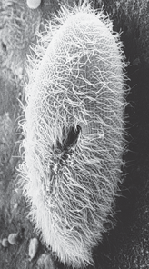
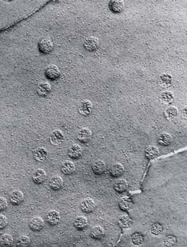
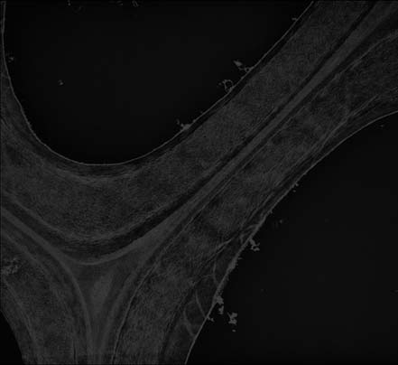

<!DOCTYPE html>
<html xmlns="http://www.w3.org/1999/xhtml" lang="es" xml:lang="es"><head>

<meta charset="utf-8">
<meta name="generator" content="quarto-1.5.53">

<meta name="viewport" content="width=device-width, initial-scale=1.0, user-scalable=yes">

<meta name="author" content="Marcelo Amores">

<title>4 Organización de la célula – BIOLOGÍA SOLOMON</title>
<style>
code{white-space: pre-wrap;}
span.smallcaps{font-variant: small-caps;}
div.columns{display: flex; gap: min(4vw, 1.5em);}
div.column{flex: auto; overflow-x: auto;}
div.hanging-indent{margin-left: 1.5em; text-indent: -1.5em;}
ul.task-list{list-style: none;}
ul.task-list li input[type="checkbox"] {
  width: 0.8em;
  margin: 0 0.8em 0.2em -1em; /* quarto-specific, see https://github.com/quarto-dev/quarto-cli/issues/4556 */ 
  vertical-align: middle;
}
</style>


<script src="site_libs/quarto-nav/quarto-nav.js"></script>
<script src="site_libs/quarto-nav/headroom.min.js"></script>
<script src="site_libs/clipboard/clipboard.min.js"></script>
<script src="site_libs/quarto-search/autocomplete.umd.js"></script>
<script src="site_libs/quarto-search/fuse.min.js"></script>
<script src="site_libs/quarto-search/quarto-search.js"></script>
<meta name="quarto:offset" content="./">
<link href="./05-membranas-biologicas.html" rel="next">
<link href="./03-quimica-de-la-vida.html" rel="prev">
<link href="./images/Icono_E.png" rel="icon" type="image/png">
<script src="site_libs/quarto-html/quarto.js"></script>
<script src="site_libs/quarto-html/popper.min.js"></script>
<script src="site_libs/quarto-html/tippy.umd.min.js"></script>
<script src="site_libs/quarto-html/anchor.min.js"></script>
<link href="site_libs/quarto-html/tippy.css" rel="stylesheet">
<link href="site_libs/quarto-html/quarto-syntax-highlighting.css" rel="stylesheet" class="quarto-color-scheme" id="quarto-text-highlighting-styles">
<link href="site_libs/quarto-html/quarto-syntax-highlighting-dark.css" rel="prefetch" class="quarto-color-scheme quarto-color-alternate" id="quarto-text-highlighting-styles">
<script src="site_libs/bootstrap/bootstrap.min.js"></script>
<link href="site_libs/bootstrap/bootstrap-icons.css" rel="stylesheet">
<link href="site_libs/bootstrap/bootstrap.min.css" rel="stylesheet" class="quarto-color-scheme" id="quarto-bootstrap" data-mode="light">
<link href="site_libs/bootstrap/bootstrap-dark.min.css" rel="prefetch" class="quarto-color-scheme quarto-color-alternate" id="quarto-bootstrap" data-mode="dark">
<script id="quarto-search-options" type="application/json">{
  "location": "navbar",
  "copy-button": false,
  "collapse-after": 3,
  "panel-placement": "end",
  "type": "overlay",
  "limit": 50,
  "keyboard-shortcut": [
    "f",
    "/",
    "s"
  ],
  "show-item-context": false,
  "language": {
    "search-no-results-text": "Sin resultados",
    "search-matching-documents-text": "documentos encontrados",
    "search-copy-link-title": "Copiar el enlace en la búsqueda",
    "search-hide-matches-text": "Ocultar resultados adicionales",
    "search-more-match-text": "resultado adicional en este documento",
    "search-more-matches-text": "resultados adicionales en este documento",
    "search-clear-button-title": "Borrar",
    "search-text-placeholder": "",
    "search-detached-cancel-button-title": "Cancelar",
    "search-submit-button-title": "Enviar",
    "search-label": "Buscar"
  }
}</script>
<!-- Verificación de Google -->

<meta name="google-site-verification" content="EYveEP5I9oi6m-r8Qa_Fett47y3RJFqSizYYvf7G1RM">


<!-- Canonical URL dinámico -->

<link rel="canonical" link:"{{="" page.url="" |="" absolute_url="" }}"="">


  <script src="https://cdnjs.cloudflare.com/polyfill/v3/polyfill.min.js?features=es6"></script>
  <script src="https://cdn.jsdelivr.net/npm/mathjax@3/es5/tex-chtml-full.js" type="text/javascript"></script>

<script type="text/javascript">
const typesetMath = (el) => {
  if (window.MathJax) {
    // MathJax Typeset
    window.MathJax.typeset([el]);
  } else if (window.katex) {
    // KaTeX Render
    var mathElements = el.getElementsByClassName("math");
    var macros = [];
    for (var i = 0; i < mathElements.length; i++) {
      var texText = mathElements[i].firstChild;
      if (mathElements[i].tagName == "SPAN") {
        window.katex.render(texText.data, mathElements[i], {
          displayMode: mathElements[i].classList.contains('display'),
          throwOnError: false,
          macros: macros,
          fleqn: false
        });
      }
    }
  }
}
window.Quarto = {
  typesetMath
};
</script>

</head>

<body class="nav-sidebar floating nav-fixed">

<div id="quarto-search-results"></div>
  <header id="quarto-header" class="headroom fixed-top">
    <nav class="navbar navbar-expand-lg " data-bs-theme="dark">
      <div class="navbar-container container-fluid">
      <div class="navbar-brand-container mx-auto">
    <a href="./index.html" class="navbar-brand navbar-brand-logo">
    
    </a>
  </div>
            <div id="quarto-search" class="" title="Buscar"></div>
          <button class="navbar-toggler" type="button" data-bs-toggle="collapse" data-bs-target="#navbarCollapse" aria-controls="navbarCollapse" role="menu" aria-expanded="false" aria-label="Navegación de palanca" onclick="if (window.quartoToggleHeadroom) { window.quartoToggleHeadroom(); }">
  <span class="navbar-toggler-icon"></span>
</button>
          <div class="collapse navbar-collapse" id="navbarCollapse">
            <ul class="navbar-nav navbar-nav-scroll me-auto">
  <li class="nav-item">
    <a class="nav-link active" href="./index.html" aria-current="page"> 
<span class="menu-text">Inicio</span></a>
  </li>  
  <li class="nav-item">
    <a class="nav-link" href="https://envinatu.github.io/biologia/"> 
<span class="menu-text">Biología</span></a>
  </li>  
  <li class="nav-item">
    <a class="nav-link" href="https://envinatu.github.io/quimica/"> 
<span class="menu-text">Química</span></a>
  </li>  
  <li class="nav-item">
    <a class="nav-link" href="https://envinatu.github.io/geociencias"> 
<span class="menu-text">Geociencias</span></a>
  </li>  
  <li class="nav-item">
    <a class="nav-link" href="https://envinatu.github.io/pedagogia"> 
<span class="menu-text">Educación</span></a>
  </li>  
  <li class="nav-item">
    <a class="nav-link" href="https://envinatu.github.io/rubick"> 
<span class="menu-text">Ludociencia</span></a>
  </li>  
  <li class="nav-item">
    <a class="nav-link" href="https://envinatu.github.io/blog"> 
<span class="menu-text">Blog</span></a>
  </li>  
  <li class="nav-item">
    <a class="nav-link" href="https://envinatu.github.io/amores"> 
<span class="menu-text">Sobre Mi</span></a>
  </li>  
</ul>
            <ul class="navbar-nav navbar-nav-scroll ms-auto">
  <li class="nav-item compact">
    <a class="nav-link" href="https://github.com/envinatu/bio27/blob/main/docs/BIOLOGÍA-2025-2026-2027.pdf"> <i class="bi bi-filetype-pdf" role="img" aria-label="Ver PDF">
</i> 
<span class="menu-text"></span></a>
  </li>  
  <li class="nav-item compact">
    <a class="nav-link" href="https://github.com/envinatu/bio27/blob/main/docs/BIOLOGÍA-2025-2026-2027.epub"> <i class="bi bi-journal-bookmark-fill" role="img" aria-label="Ver eBook">
</i> 
<span class="menu-text"></span></a>
  </li>  
  <li class="nav-item compact">
    <a class="nav-link" href="https://www.linkedin.com/in/marceloamores/"> <i class="bi bi-linkedin" role="img" aria-label="Marcelo Amores LinkedIn">
</i> 
<span class="menu-text"></span></a>
  </li>  
  <li class="nav-item compact">
    <a class="nav-link" href="https://github.com/envinatu"> <i class="bi bi-github" role="img" aria-label="Envinatu GitHub">
</i> 
<span class="menu-text"></span></a>
  </li>  
</ul>
          </div> <!-- /navcollapse -->
            <div class="quarto-navbar-tools">
  <a href="" class="quarto-color-scheme-toggle quarto-navigation-tool  px-1" onclick="window.quartoToggleColorScheme(); return false;" title="Alternar modo oscuro"><i class="bi"></i></a>
  <a href="" class="quarto-reader-toggle quarto-navigation-tool px-1" onclick="window.quartoToggleReader(); return false;" title="Alternar modo lector">
  <div class="quarto-reader-toggle-btn">
  <i class="bi"></i>
  </div>
</a>
</div>
      </div> <!-- /container-fluid -->
    </nav>
  <nav class="quarto-secondary-nav">
    <div class="container-fluid d-flex">
      <button type="button" class="quarto-btn-toggle btn" data-bs-toggle="collapse" role="button" data-bs-target=".quarto-sidebar-collapse-item" aria-controls="quarto-sidebar" aria-expanded="false" aria-label="Alternar barra lateral" onclick="if (window.quartoToggleHeadroom) { window.quartoToggleHeadroom(); }">
        <i class="bi bi-layout-text-sidebar-reverse"></i>
      </button>
        <nav class="quarto-page-breadcrumbs" aria-label="breadcrumb"><ol class="breadcrumb"><li class="breadcrumb-item"><a href="./04-organizacion-de-la-celula.html"><span class="chapter-title">4 Organización de la célula</span></a></li></ol></nav>
        <a class="flex-grow-1" role="navigation" data-bs-toggle="collapse" data-bs-target=".quarto-sidebar-collapse-item" aria-controls="quarto-sidebar" aria-expanded="false" aria-label="Alternar barra lateral" onclick="if (window.quartoToggleHeadroom) { window.quartoToggleHeadroom(); }">      
        </a>
    </div>
  </nav>
</header>
<!-- content -->
<div id="quarto-content" class="quarto-container page-columns page-rows-contents page-layout-article page-navbar">
<!-- sidebar -->
  <nav id="quarto-sidebar" class="sidebar collapse collapse-horizontal quarto-sidebar-collapse-item sidebar-navigation floating overflow-auto">
    <div class="sidebar-menu-container"> 
    <ul class="list-unstyled mt-1">
        <li class="sidebar-item">
  <div class="sidebar-item-container"> 
  <a href="./index.html" class="sidebar-item-text sidebar-link">
 <span class="menu-text">Presentación</span></a>
  </div>
</li>
        <li class="sidebar-item">
  <div class="sidebar-item-container"> 
  <a href="./000-prefacio.html" class="sidebar-item-text sidebar-link">
 <span class="menu-text">Prefacio</span></a>
  </div>
</li>
        <li class="sidebar-item">
  <div class="sidebar-item-container"> 
  <a href="./001-al-estudiante.html" class="sidebar-item-text sidebar-link">
 <span class="menu-text">Al estudiante</span></a>
  </div>
</li>
        <li class="sidebar-item">
  <div class="sidebar-item-container"> 
  <a href="./01-una-vision-de-la-vida.html" class="sidebar-item-text sidebar-link"><span class="chapter-title">1 Una visión de la vida</span></a>
  </div>
</li>
        <li class="sidebar-item">
  <div class="sidebar-item-container"> 
  <a href="./02-atomos-y-moleculas.html" class="sidebar-item-text sidebar-link"><span class="chapter-title">2 Átomos y moléculas: la base química de la vida</span></a>
  </div>
</li>
        <li class="sidebar-item">
  <div class="sidebar-item-container"> 
  <a href="./03-quimica-de-la-vida.html" class="sidebar-item-text sidebar-link"><span class="chapter-title">3 La química de la vida: Compuestos orgánicos</span></a>
  </div>
</li>
        <li class="sidebar-item">
  <div class="sidebar-item-container"> 
  <a href="./04-organizacion-de-la-celula.html" class="sidebar-item-text sidebar-link active"><span class="chapter-title">4 Organización de la célula</span></a>
  </div>
</li>
        <li class="sidebar-item">
  <div class="sidebar-item-container"> 
  <a href="./05-membranas-biologicas.html" class="sidebar-item-text sidebar-link"><span class="chapter-title">5 Membranas biológicas</span></a>
  </div>
</li>
        <li class="sidebar-item">
  <div class="sidebar-item-container"> 
  <a href="./06-comunicacion-celular.html" class="sidebar-item-text sidebar-link"><span class="chapter-title">6 Comunicación celular</span></a>
  </div>
</li>
        <li class="sidebar-item">
  <div class="sidebar-item-container"> 
  <a href="./07-energia-y-metabolismo.html" class="sidebar-item-text sidebar-link"><span class="chapter-title">7 Energía y metabolismo</span></a>
  </div>
</li>
        <li class="sidebar-item">
  <div class="sidebar-item-container"> 
  <a href="./08-produccion-de-atp.html" class="sidebar-item-text sidebar-link"><span class="chapter-title">8 ¿Cómo producen ATP las células? Rutas de liberación de energía</span></a>
  </div>
</li>
        <li class="sidebar-item">
  <div class="sidebar-item-container"> 
  <a href="./09-fotosintesis.html" class="sidebar-item-text sidebar-link"><span class="chapter-title">9 Fotosíntesis: captura de energía luminosa</span></a>
  </div>
</li>
        <li class="sidebar-item">
  <div class="sidebar-item-container"> 
  <a href="./10-mitosis-y-meiosis.html" class="sidebar-item-text sidebar-link"><span class="chapter-title">10 Cromosomas, mitosis y meiosis</span></a>
  </div>
</li>
        <li class="sidebar-item">
  <div class="sidebar-item-container"> 
  <a href="./11-herencia.html" class="sidebar-item-text sidebar-link"><span class="chapter-title">11 Los principios básicos de la herencia</span></a>
  </div>
</li>
        <li class="sidebar-item">
  <div class="sidebar-item-container"> 
  <a href="./12-adn.html" class="sidebar-item-text sidebar-link"><span class="chapter-title">12 ADN: Molécula portadora de la información genética</span></a>
  </div>
</li>
        <li class="sidebar-item">
  <div class="sidebar-item-container"> 
  <a href="./13-expresion-genica.html" class="sidebar-item-text sidebar-link"><span class="chapter-title">13 Expresión génica</span></a>
  </div>
</li>
        <li class="sidebar-item">
  <div class="sidebar-item-container"> 
  <a href="./14-regulacion-genica.html" class="sidebar-item-text sidebar-link"><span class="chapter-title">14 Regulación génica</span></a>
  </div>
</li>
        <li class="sidebar-item">
  <div class="sidebar-item-container"> 
  <a href="./15-tecnologia-adn.html" class="sidebar-item-text sidebar-link"><span class="chapter-title">15 Tecnología ADN y genómica</span></a>
  </div>
</li>
        <li class="sidebar-item">
  <div class="sidebar-item-container"> 
  <a href="./16-genetica-humana.html" class="sidebar-item-text sidebar-link"><span class="chapter-title">16 Genética humana y el genoma humano</span></a>
  </div>
</li>
        <li class="sidebar-item">
  <div class="sidebar-item-container"> 
  <a href="./17-genetica-del-desarrollo.html" class="sidebar-item-text sidebar-link"><span class="chapter-title">17 Genética del desarrollo</span></a>
  </div>
</li>
        <li class="sidebar-item">
  <div class="sidebar-item-container"> 
  <a href="./18-evolucion-darwiniana.html" class="sidebar-item-text sidebar-link"><span class="chapter-title">18 Introducción a la evolución darwiniana</span></a>
  </div>
</li>
        <li class="sidebar-item">
  <div class="sidebar-item-container"> 
  <a href="./19-cambio-en-poblaciones.html" class="sidebar-item-text sidebar-link"><span class="chapter-title">19 Cambio evolutivo en poblaciones</span></a>
  </div>
</li>
        <li class="sidebar-item">
  <div class="sidebar-item-container"> 
  <a href="./20-especiacion.html" class="sidebar-item-text sidebar-link"><span class="chapter-title">20 Especiación y macroevolución</span></a>
  </div>
</li>
        <li class="sidebar-item">
  <div class="sidebar-item-container"> 
  <a href="./21-historia-evolutiva.html" class="sidebar-item-text sidebar-link"><span class="chapter-title">21 El origen e historia evolutiva de la vida</span></a>
  </div>
</li>
        <li class="sidebar-item">
  <div class="sidebar-item-container"> 
  <a href="./22-evolucion-de-primates.html" class="sidebar-item-text sidebar-link"><span class="chapter-title">22 La evolución de los primates</span></a>
  </div>
</li>
        <li class="sidebar-item">
  <div class="sidebar-item-container"> 
  <a href="./23-sistematica.html" class="sidebar-item-text sidebar-link"><span class="chapter-title">23 Comprensión de la diversidad: sistemática</span></a>
  </div>
</li>
        <li class="sidebar-item">
  <div class="sidebar-item-container"> 
  <a href="./24-virus.html" class="sidebar-item-text sidebar-link"><span class="chapter-title">24 Virus y agentes subvirales</span></a>
  </div>
</li>
        <li class="sidebar-item">
  <div class="sidebar-item-container"> 
  <a href="./25-bacterias-y-arqueas.html" class="sidebar-item-text sidebar-link"><span class="chapter-title">25 Bacterias y arqueas</span></a>
  </div>
</li>
        <li class="sidebar-item">
  <div class="sidebar-item-container"> 
  <a href="./26-protistas.html" class="sidebar-item-text sidebar-link"><span class="chapter-title">26 Protistas</span></a>
  </div>
</li>
        <li class="sidebar-item">
  <div class="sidebar-item-container"> 
  <a href="./27-plantas-sin-semillas.html" class="sidebar-item-text sidebar-link"><span class="chapter-title">27 Plantas sin semillas</span></a>
  </div>
</li>
        <li class="sidebar-item">
  <div class="sidebar-item-container"> 
  <a href="./28-plantas-con-semillas.html" class="sidebar-item-text sidebar-link"><span class="chapter-title">E</span></a>
  </div>
</li>
        <li class="sidebar-item">
  <div class="sidebar-item-container"> 
  <a href="./29-hongos.html" class="sidebar-item-text sidebar-link"><span class="chapter-title">29 Los hongos</span></a>
  </div>
</li>
        <li class="sidebar-item">
  <div class="sidebar-item-container"> 
  <a href="./30-diversidad-animal.html" class="sidebar-item-text sidebar-link"><span class="chapter-title">30 Introducción a la diversidad animal</span></a>
  </div>
</li>
        <li class="sidebar-item">
  <div class="sidebar-item-container"> 
  <a href="./31-protostomos.html" class="sidebar-item-text sidebar-link"><span class="chapter-title">31 Esponjas, cnidarios, ctenóforos y protóstomos</span></a>
  </div>
</li>
        <li class="sidebar-item">
  <div class="sidebar-item-container"> 
  <a href="./32-deuterostomos.html" class="sidebar-item-text sidebar-link"><span class="chapter-title">32 Los deuteróstomos</span></a>
  </div>
</li>
        <li class="sidebar-item">
  <div class="sidebar-item-container"> 
  <a href="./33-crecimiento-vegetal.html" class="sidebar-item-text sidebar-link"><span class="chapter-title">33 Estructura, crecimiento y desarrollo vegetal</span></a>
  </div>
</li>
        <li class="sidebar-item">
  <div class="sidebar-item-container"> 
  <a href="./34-hoja.html" class="sidebar-item-text sidebar-link"><span class="chapter-title">L</span></a>
  </div>
</li>
        <li class="sidebar-item">
  <div class="sidebar-item-container"> 
  <a href="./35-tallo.html" class="sidebar-item-text sidebar-link"><span class="chapter-title">35 Estructura y transporte en el tallo</span></a>
  </div>
</li>
        <li class="sidebar-item">
  <div class="sidebar-item-container"> 
  <a href="./36-raices.html" class="sidebar-item-text sidebar-link"><span class="chapter-title">36 Raíces y nutrición mineral</span></a>
  </div>
</li>
        <li class="sidebar-item">
  <div class="sidebar-item-container"> 
  <a href="./37-reproduccion-plantas.html" class="sidebar-item-text sidebar-link"><span class="chapter-title">37 Reproducción en plantas con fl ores</span></a>
  </div>
</li>
        <li class="sidebar-item">
  <div class="sidebar-item-container"> 
  <a href="./38-respuestas-plantas.html" class="sidebar-item-text sidebar-link"><span class="chapter-title">38 Respuestas de desarrollo en plantas a señales externas e internas</span></a>
  </div>
</li>
        <li class="sidebar-item">
  <div class="sidebar-item-container"> 
  <a href="./39-introduccion-fisiologia-animal.html" class="sidebar-item-text sidebar-link"><span class="chapter-title">39 Estructura y función animal. Una introducción</span></a>
  </div>
</li>
        <li class="sidebar-item">
  <div class="sidebar-item-container"> 
  <a href="./40-proteccion-y-movimiento.html" class="sidebar-item-text sidebar-link"><span class="chapter-title">40 Protección, sostén y movimiento</span></a>
  </div>
</li>
        <li class="sidebar-item">
  <div class="sidebar-item-container"> 
  <a href="./41-senalizacion-neuronal.html" class="sidebar-item-text sidebar-link"><span class="chapter-title">41 Señalización neuronal</span></a>
  </div>
</li>
        <li class="sidebar-item">
  <div class="sidebar-item-container"> 
  <a href="./42-regulacion-neuronal.html" class="sidebar-item-text sidebar-link"><span class="chapter-title">42 Regulación neuronal</span></a>
  </div>
</li>
        <li class="sidebar-item">
  <div class="sidebar-item-container"> 
  <a href="./43-sentidos.html" class="sidebar-item-text sidebar-link"><span class="chapter-title">43 Sistemas sensoriales</span></a>
  </div>
</li>
        <li class="sidebar-item">
  <div class="sidebar-item-container"> 
  <a href="./44-transporte-interno.html" class="sidebar-item-text sidebar-link"><span class="chapter-title">44 Transporte interno</span></a>
  </div>
</li>
        <li class="sidebar-item">
  <div class="sidebar-item-container"> 
  <a href="./45-sistema-inmunologico.html" class="sidebar-item-text sidebar-link"><span class="chapter-title">45 El sistema inmunológico: Defensa interna</span></a>
  </div>
</li>
        <li class="sidebar-item">
  <div class="sidebar-item-container"> 
  <a href="./46-intercambio-gases.html" class="sidebar-item-text sidebar-link"><span class="chapter-title">46 Intercambio de gases</span></a>
  </div>
</li>
        <li class="sidebar-item">
  <div class="sidebar-item-container"> 
  <a href="./47-nutricion.html" class="sidebar-item-text sidebar-link"><span class="chapter-title">47 Procesamiento de alimentos y nutrición</span></a>
  </div>
</li>
        <li class="sidebar-item">
  <div class="sidebar-item-container"> 
  <a href="./48-osmorregulacion.html" class="sidebar-item-text sidebar-link"><span class="chapter-title">48 Osmorregulación y desecho de residuos metabólicos</span></a>
  </div>
</li>
        <li class="sidebar-item">
  <div class="sidebar-item-container"> 
  <a href="./49-regulacion-endocrina.html" class="sidebar-item-text sidebar-link"><span class="chapter-title">49 Regulación endocrina</span></a>
  </div>
</li>
        <li class="sidebar-item">
  <div class="sidebar-item-container"> 
  <a href="./50-reproduccion-animal.html" class="sidebar-item-text sidebar-link"><span class="chapter-title">50 Reproducción</span></a>
  </div>
</li>
        <li class="sidebar-item">
  <div class="sidebar-item-container"> 
  <a href="./51-desarrollo-animal.html" class="sidebar-item-text sidebar-link"><span class="chapter-title">51 Desarrollo animal</span></a>
  </div>
</li>
        <li class="sidebar-item">
  <div class="sidebar-item-container"> 
  <a href="./52-comportamiento-animal.html" class="sidebar-item-text sidebar-link"><span class="chapter-title">52 Comportamiento animal</span></a>
  </div>
</li>
        <li class="sidebar-item">
  <div class="sidebar-item-container"> 
  <a href="./53-ecologia-de-poblaciones.html" class="sidebar-item-text sidebar-link"><span class="chapter-title">52.6 SELECCIÓN SEXUAL</span></a>
  </div>
</li>
        <li class="sidebar-item">
  <div class="sidebar-item-container"> 
  <a href="./54-ecologia-de-comunidades.html" class="sidebar-item-text sidebar-link"><span class="chapter-title">54 Ecología de comunidades</span></a>
  </div>
</li>
        <li class="sidebar-item">
  <div class="sidebar-item-container"> 
  <a href="./55-ecosistemas.html" class="sidebar-item-text sidebar-link"><span class="chapter-title">55 Ecosistemas y la biosfera</span></a>
  </div>
</li>
        <li class="sidebar-item">
  <div class="sidebar-item-container"> 
  <a href="./56-geografia-de-la-vida.html" class="sidebar-item-text sidebar-link"><span class="chapter-title">56 Ecología y geografía de la vida</span></a>
  </div>
</li>
        <li class="sidebar-item">
  <div class="sidebar-item-container"> 
  <a href="./57-conservacion.html" class="sidebar-item-text sidebar-link"><span class="chapter-title">57 Diversidad biológica y biología de la conservación</span></a>
  </div>
</li>
    </ul>
    </div>
</nav>
<div id="quarto-sidebar-glass" class="quarto-sidebar-collapse-item" data-bs-toggle="collapse" data-bs-target=".quarto-sidebar-collapse-item"></div>
<!-- margin-sidebar -->
    <div id="quarto-margin-sidebar" class="sidebar margin-sidebar">
        <nav id="TOC" role="doc-toc" class="toc-active">
    <h2 id="toc-title">Tabla de contenidos</h2>
   
  <ul>
  <li><a href="#l" id="toc-l" class="nav-link active" data-scroll-target="#l">L</a>
  <ul class="collapse">
  <li><a href="#la-célula-unidad-básica-de-la-vida" id="toc-la-célula-unidad-básica-de-la-vida" class="nav-link" data-scroll-target="#la-célula-unidad-básica-de-la-vida">4.1 LA CÉLULA: UNIDAD BÁSICA DE LA VIDA</a></li>
  <li><a href="#métodos-para-estudiar-las-células" id="toc-métodos-para-estudiar-las-células" class="nav-link" data-scroll-target="#métodos-para-estudiar-las-células">4.2 MÉTODOS PARA ESTUDIAR LAS CÉLULAS</a></li>
  <li><a href="#células-procariotas-y-eucariotas" id="toc-células-procariotas-y-eucariotas" class="nav-link" data-scroll-target="#células-procariotas-y-eucariotas">4.3 CÉLULAS PROCARIOTAS Y EUCARIOTAS</a></li>
  <li><a href="#el-núcleo-de-la-célula" id="toc-el-núcleo-de-la-célula" class="nav-link" data-scroll-target="#el-núcleo-de-la-célula">4.4 EL NÚCLEO DE LA CÉLULA</a></li>
  <li><a href="#orgánulos-del-citoplasma" id="toc-orgánulos-del-citoplasma" class="nav-link" data-scroll-target="#orgánulos-del-citoplasma">4.5 ORGÁNULOS DEL CITOPLASMA</a></li>
  <li><a href="#el-citoesqueleto" id="toc-el-citoesqueleto" class="nav-link" data-scroll-target="#el-citoesqueleto">4.6 EL CITOESQUELETO</a></li>
  <li><a href="#moléculas-que-rodean-las-células-o-cubiertas-celulares" id="toc-moléculas-que-rodean-las-células-o-cubiertas-celulares" class="nav-link" data-scroll-target="#moléculas-que-rodean-las-células-o-cubiertas-celulares">4.7 MOLÉCULAS QUE RODEAN LAS CÉLULAS O CUBIERTAS CELULARES</a></li>
  <li><a href="#resumen-enfoque-en-los-objetivos-de-aprendizaje" id="toc-resumen-enfoque-en-los-objetivos-de-aprendizaje" class="nav-link" data-scroll-target="#resumen-enfoque-en-los-objetivos-de-aprendizaje">■ ■ RESUMEN: ENFOQUE EN LOS OBJETIVOS DE APRENDIZAJE</a></li>
  </ul></li>
  </ul>
</nav>
    </div>
<!-- main -->
<main class="content" id="quarto-document-content">

<header id="title-block-header" class="quarto-title-block default">
<div class="quarto-title">
<h1 class="title"><span class="chapter-title">4 Organización de la célula</span></h1>
</div>


<div class="quarto-title-meta">

    
    <div>
    <div class="quarto-title-meta-heading">Fecha de publicación</div>
    <div class="quarto-title-meta-contents">
      <p class="date">septiembre, 2025</p>
    </div>
  </div>
  
    
  </div>
  


</header>


<p>74</p>
<p>El citoesqueleto. Célula de la artería pulmonar de un bovino. Amarillo: núcleo; rojo = microfi lamentos; azul = mitocondria.</p>
<p>© Heiti Paves/Shutterstock</p>
<p>CONCEPTOS CLAVE</p>
<p>4.1 La célula es la unidad básica de la vida; su organización y tamaño son críticos para el mantenimiento de la homeostasis y su tamaño y forma se adaptan para cumplir esta función. 4.2 Los biólogos estudian las células utilizando microscopios y técnicas bioquímicas tales como el fraccionamiento celular. 4.3 A diferencia de las células procariotas, las células eucariotas tienen membranas internas que forman compartimentos, permitiendo a la célula realizar actividades especializadas dentro de cada una de estas pequeñas áreas separadas (orgánulos). 4.4 En las células eucariotas, la información genética codifi cada en la molécula de ADN se localiza en el núcleo, el cual es normalmente el orgánulo celular más prominente. 4.5 Entre los principales orgánulos en el citoplasma están los ribosomas, donde se sintetizan las proteínas; el retículo endoplásmico y el complejo de Golgi, donde se realizan otros procesos en las proteínas; así como las mitocondrias y los cloroplastos donde la energía se convierte de una forma a otra. 4.6 El citoesqueleto es un armazón interno dinámico que está implicado en diversos tipos de movimiento celular. 4.7 La mayoría de las células eucariotas están rodeadas por una envoltura; además, muchas células animales presentan una matriz extracelular; las células de la mayoría de las bacterias, arqueas, hongos y plantas están rodeados por una pared celular.</p>
<section id="l" class="level1">
<h1>L</h1>
<p>a célula es la unidad más pequeña que puede realizar todas las actividades asociadas con la vida. Cuando se les proporcionan los nutrientes esenciales y un ambiente adecuado, algunas células pueden mantenerse vivas y crecer en el laboratorio durante muchos años. Por el contrario, ninguna parte aislada de una célula es capaz de supervivencia mantenida. Conforme lea este capítulo, recuerde el análisis de sistemas biológicos del capítulo 1. Aunque se describen los componentes individuales de las células se analizará cómo estos componentes trabajan en conjunto, generando sistemas biológicos dentro de la célula. La célula en sí misma es un sistema biológico muy complicado, donde grupos de células conforman tejidos, órganos y organismos. Cada uno de éstos es un sistema biológico. Todos los procariotas y muchos protistas y hongos consisten en una sola célula (son unicelulares), mientras que la mayoría de las plantas y animales están compuestos por millones de células (son pluricelulares). Las células son los bloques o unidades de construcción de los organismos multicelulares complejos. Aunque en esencia todas las células son similares, también son extraordinariamente diversas y versátiles. Ellas se modifi can en una variedad de formas para realizar funciones especializadas. La célula está compuesta por una gran variedad de iones, moléculas inorgánicas y orgánicas, donde se incluye el agua, sales, carbohidratos, lípidos, proteínas y ácidos nucleicos. Estas moléculas se organizan para formar las estructuras de la célula y sus rutas bioquímicas. La información genética se almacena en moléculas de ADN y se replica fi elmente. Esta información se transmite a cada nueva generación de células durante la</p>
<div class="quarto-figure quarto-figure-center">
<figure class="figure">
<p></p>
<figcaption>04-organizacion-de-la-celula_p108_img1.jpeg</figcaption>
</figure>
</div>
<p>Organización de la célula 75</p>
<p>división celular. La información contenida en el ADN codifi ca proteínas específi cas que, a su vez, determinan la estructura y función celular. Las células intercambian materiales y energía con el entorno. Todas las células vivas necesitan una o más fuentes de energía, pero raramente la célula obtiene energía en una forma que se pueda utilizar inmediatamente. La célula convierte la energía de una forma en otra, y esa energía se utiliza para realizar varias actividades, que abarcan desde el trabajo mecánico a la síntesis química. Las células convierten la energía que ingresa en ellas en formas más cómodas o fáciles de manejar, por lo general en adenosina trifosfato o trifosfato de adenosina (ATP), que es una molécula de energía química almacenada (vea el capítulo 3). Tanto las reacciones químicas que convierten energía de una forma a otra como los mecanismos para transferir información son en esencia iguales en todas las células, desde las bacterias hasta las células de organismos multicelulares como las plantas y animales. Estas similitudes sugieren relaciones evolutivas. Gracias a los avances de la tecnología moderna, los biólogos celulares utilizan herramientas cada vez más sofi sticadas en sus investigaciones para entender mejor la estructura y funcionamiento de las células. Por ejemplo, la investigación del citoesqueleto (el esqueleto de la célula), actualmente un área de investigación activa y excitante, se ha visto potenciada considerablemente por los avances en microscopia electrónica. En la microfotografía anterior se observa la amplia distribución de microtúbulos de las células. Los microtúbulos son componentes clave del citoesqueleto. Ayudan a mantener la forma de la célula, participan en el movimiento celular y facilitan el transporte de materiales dentro de la célula.</p>
<section id="la-célula-unidad-básica-de-la-vida" class="level2">
<h2 class="anchored" data-anchor-id="la-célula-unidad-básica-de-la-vida">4.1 LA CÉLULA: UNIDAD BÁSICA DE LA VIDA</h2>
<p>OBJETIVOS DE APRENDIZAJE</p>
<p>1 Describir la teoría celular y relacionarla con la evolución de la vida. 2 Resumir la relación entre la organización celular y la homeostasis. 3 Explicar la relación entre el tamaño de la célula y su homeostasis.</p>
<p>Las células son los bloques o unidades de construcción de los organismos celulares son ejemplos impresionantes de la unidad subyacente a todos los organismos vivos.</p>
<p>La teoría celular es un concepto unifi cador en biología</p>
<p>Dos científi cos alemanes, el botánico Matt hias Schleiden en 1838 y el zoólogo Th eodor Schwann en 1839, usando el razonamiento inductivo concluyeron que todas las plantas y animales estaban formados por células. Estos investigadores utilizaron sus propias investigaciones y las de algunos otros científi cos para obtener sus conclusiones. Posteriormente, Rudolf Virchow, otro científi co alemán, observó que las células se dividían y daban lugar a células hijas. En 1855, Virchow propuso que las células nuevas se forman sólo por la división de células previamente existentes. El trabajo de Schleiden, Schwann y Virchow contribuyó en gran medida al desarrollo de la teoría celular , el concepto unifi cador de que: (1) las células son las unidades básicas de organización y funcionamiento de la vida en todos los organismos y (2) que todas las células proceden de otras células.</p>
<p>Hacia 1880, otro biólogo alemán, August Weismann, agregó un importante corolario al concepto de Virchow indicando que se puede rastrear los antepasados de todas las células vivas actuales hasta tiempos ancestrales. La evidencia de que todas las células vivas tienen un origen común, la proporcionan las semejanzas básicas en su estructura y en las moléculas de las que están hechas. Cuando se examina una variedad de organismos diversos, desde los más simples como las bacterias hasta los más complejos como las plantas y animales, se encuentran semejanzas sorprendentes a nivel celular. Estudios cuidadosos de las características celulares compartidas ayudan a hacer un seguimiento de la historia evolutiva de diversos organismos y proporcionan convincentes evidencias de que todos los organismos vivos actuales tienen un origen común.</p>
<p>La organización de todas las células es básicamente semejante</p>
<p>La organización de las células y su reducido tamaño les permite mantener la homeostasis , es decir un entorno interno apropiado. Las células experimentan cambios constantes en su entorno, como las fl uctuaciones en la concentración de sales, pH y temperatura, por tanto deben actuar continuamente para restablecer y mantener las condiciones internas que hacen posible el funcionamiento de sus mecanismos bioquímicos. Para que la célula pueda mantener la homeostasis, su contenido debe estar separado del entorno exterior. La membrana plasmática es una estructura distintiva que rodea la superfi cie de todas las células, haciendo de cada una de ellas, un compartimento cerrado, cuya composición química es diferente de la del espacio exterior. Esta membrana funciona como una barrera selectiva entre el contenido celular y el entorno exterior. Las células intercambian materiales con el entorno, pueden acumular las sustancias que necesitan y almacenar energía. La mayoría de las células tiene estructuras internas llamadas orgánulos , que se han especializado en realizar diferentes actividades metabólicas, como convertir la energía en formas utilizables, sintetizar los compuestos que necesita y fabricar las estructuras que permiten su funcionamiento y reproducción. Cada célula tiene instrucciones genéticas codifi cadas en su molécula de ADN, que se concentra en una región delimitada de la célula.</p>
<p>El tamaño celular es limitado</p>
<p>Aunque sus tamaños varían dentro de un amplio intervalo ( FIGU -</p>
<p>RA 4-1 ), la mayoría de las células son microscópicas y se deben medir en unidades muy pequeñas. La unidad básica de medida lineal en el sistema métrico (vea la cubierta interior del libro) es el metro (m), que es un poco más largo que una yarda. Un milímetro (mm) es 1/1000 de un metro y tiene aproximadamente la longitud del guión entre paréntesis (-). El micrómetro ( μ m) es la unidad más idónea para medir células. Un guión de 1 μ m de largo es 1/1,000,000 (un millonésimo) de un metro o 1/1000 de un milímetro, demasiado corto para verlo a simple vista. La mayoría de las personas tiene difi cultades para imaginar unidades que son demasiado pequeñas como para poderse ver, pero ayuda recordar que un micrómetro tiene la misma relación con un milímetro que este último con un metro (1/1000). Aun siendo tan pequeño, el micrómetro es realmente demasiado grande para medir la mayoría de los componentes de la célula. Para este fi n los biólogos utilizan el nanómetro (nm), que es 1/1,000,000,000 (un mil millonésimo) de un metro o 1/1000 de un micrómetro. Para sumergirse mentalmente en el mundo del nanómetro, recuerde que un milímetro es 1/1000 de un metro, un micrómetro es 1/1000 de un milímetro y un nanómetro es 1/1000 de un micrómetro.</p>
<p>76 Capítulo 4</p>
<p>se podrían transportar hasta su interior lo sufi cientemente rápido para satisfacer sus requerimientos. Además, la célula no sería capaz de regular la concentración de diversos iones ni exportar efi cazmente sus residuos. Ciertamente, no todas las células son esféricas o de forma cúbica. Debido a su forma, algunas células muy grandes presentan una relación entre el área superfi cial y el volumen relativamente favorable. De hecho, algunas variaciones en la forma celular representan una estrategia para aumentar la relación entre área superfi cial y volumen. Por ejemplo, muchas células vegetales grandes son largas y delgadas, lo que aumenta la relación área superfi cial-volumen. Algunas células, como las epiteliales que recubren el intestino delgado, son plegamientos de la membrana plasmática en forma de dedos (digitiformes), llamadas microvellosidades , que aumentan signifi cativamente el área superfi cial para absorber nutrientes y otros materiales (vea la fi gura 47-10). Otra razón que justifi ca el reducido tamaño de las células es que, una vez dentro, las moléculas deben ser transportadas hasta diferentes compartimentos donde se transforman. Ya que las células son pequeñas, las distancias que recorren las moléculas dentro de ellas son relativamente cortas, lo que acelera muchas actividades celulares.</p>
<p>El tamaño y la forma de la célula se adaptan a la función</p>
<p>El tamaño y la forma de las células se adaptan a las funciones particulares que realizan. Algunas células, como las amebas y los leucocitos, cambian</p>
<p>Algunas células especializadas de ciertas algas y animales son sufi cientemente grandes para ser observadas a simple vista. Un óvulo humano, por ejemplo, tiene aproximadamente 130 μ m de diámetro o aproximadamente el tamaño del punto que aparece al fi nal de esta frase. Las células más grandes son los huevos de las aves, pero son atípicas porque contienen altas reservas de alimento en la yema y la clara. La parte funcional de estas células es una pequeña masa sobre la superfi cie de la yema (blastodisco). ¿Por qué la mayoría de las células son tan pequeñas? Si consideramos todo lo que debe hacer una célula para mantener la homeostasis y crecer, puede que sea más fácil entender las razones de su pequeño tamaño. Una célula debe tomar nutrientes y otros materiales y deshacerse de sus propios productos de desecho generados en las reacciones metabólicas. Todo lo que entra o sale de una célula debe pasar a través de su membrana plasmática. La membrana plasmática contiene “bombas” y canales especializados con “puertas” que regulan selectivamente el paso de materiales hacia dentro o hacia fuera de la célula. La membrana plasmática debe ser sufi cientemente grande con respecto al volumen de la célula para contenerla y cumplir con las demandas de regulación del paso de material. Por lo que, un factor crítico para determinar el tamaño de una célula es la relación entre su área superfi cial (la membrana plasmática) y su volumen ( FIGURA 4-2 ). Conforme una célula se hace más grande, su volumen aumenta con mayor rapidez que el área superfi cial (su membrana plasmática), lo que efectivamente pone un límite superior al tamaño de la célula. Arriba de un tamaño crítico, las numerosas moléculas necesarias para la célula no</p>
<p>0.1 nm 1 nm 10 nm 100 nm 10 μ m 1 μ m 100 μ m 1 mm 10 mm 100 mm 1 m 10 m</p>
<p>Microscopio electrónico Microscopio óptico Ojo humano</p>
<p>Átomo</p>
<p>Aminoácidos</p>
<p>Proteína</p>
<p>Ribosomas</p>
<p>Virus</p>
<p>Bacterias más pequeñas</p>
<p>Mitocondria</p>
<p>Cloroplasto</p>
<p>Núcleo</p>
<p>Bacteria típica</p>
<p>Eritrocitos</p>
<p>Célula epitelial</p>
<p>Óvulo humano</p>
<p>Huevo de rana</p>
<p>Huevo de gallina</p>
<p>Algunas células nerviosas</p>
<p>Humano adulto</p>
<p>Medidas 1 metro = 1000 milímetros (mm) 1 milímetro = 1000 micrómetros ( μ m) 1 micrómetro = 1000 nanómetros (nm)</p>
<p>FIGURA 4-1 Tamaño biológico y diversidad celular Se puede comparar el tamaño relativo desde el nivel químico hasta el nivel de organismo utilizando una escala logarítmica (en múltiplos de 10). La longitud de las células procariotas, en la mayoría de las bacterias oscila normalmente entre 1 y 10 µ m de longitud. La mayoría de las células eucariotas alcanza entre 10 y 30 µ m de diámetro. Las mitocondrias tienen aproximadamente el tamaño de las bacterias más pequeñas, mientras que los cloroplastos en general son más grandes, con unos 5 µ m de longitud. Los óvulos están entre las células más grandes. Aunque microscópicas, algunas células nerviosas son muy largas. Las células que se muestran aquí no están dibujadas a escala.</p>
<p>Organización de la célula 77</p>
<p>que Hooke vio no eran realmente células vivas, sino las paredes de las células del corcho muertas ( FIGURA 4-3a ). Mucho después los científi cos reconocieron que el interior encerrado por las paredes es la parte importante de las células vivas. Unos cuantos años después, inspirado por el descubrimiento y trabajo de Hooke, el naturalista holandés Antonie van Leeuwenhoek examinó células vivas con unas pequeñas lentes que había fabricado. Leeuwenhoek era un experto en el pulido de lentes y pudo ampliar imágenes más de 200 veces. Entre sus descubrimientos importantes están las bacterias, los protistas, las células de la sangre y los espermatozoides. Leeuwenhoek era un comerciante y no estaba formalmente preparado como científi co. Sin embargo, su habilidad, curiosidad y diligencia a la hora de compartir sus descubrimientos con los científi cos de la Royal Society, de Londres, dio a conocer la vida microscópica a los científi cos de todo el mundo. Por desgracia, Leeuwenhoek no compartió sus técnicas y no fue hasta más de 100 años después, a fi nales del siglo xix, cuando los microscopios se perfeccionaron lo sufi ciente para que los biólogos centraran seriamente su atención en el estudio de las células.</p>
<p>Los microscopios ópticos se utilizan para estudiar células teñidas o vivas</p>
<p>El microscopio óptico (MO) , el tipo utilizado por la mayoría de los estudiantes, consiste en un tubo con lentes de vidrio en cada extremo. Ya que contiene varias lentes, el microscopio óptico moderno se denomina microscopio compuesto . La luz visible pasa a través de la muestra que se está observando y por medio de las lentes. Las lentes refractan (desvían) la luz, ampliando la imagen. Las imágenes obtenidas con los microscopios ópticos se conocen como micrografías ópticas (MO) . Dos características de un microscopio determinan la nitidez con la que se puede ver un objeto pequeño: el aumento y el poder de resolución. El aumento es la relación entre el tamaño de la imagen vista con el microscopio y el tamaño real del objeto. Los mejores microscopios ópticos normalmente amplían un objeto más de 2000 veces. La resolución o poder de resolución , es la capacidad para distinguir detalles fi nos en una imagen; se defi ne como la distancia mínima entre dos puntos a la cual ambos se pueden ver por separado y no como un único punto borroso. El poder de resolución depende de la calidad de las lentes y de la longitud de onda de la luz de iluminación. Conforme disminuye la longitud de onda, la resolución aumenta. La luz visible utilizada por los microscopios ópticos tiene longitudes de onda que oscilan de aproximadamente 400 nm (violeta) a 700 nm (rojo); esto limita la resolución de los microscopios ópticos a detalles no más pequeños que el diámetro de una célula bacteriana pequeña (aproximadamente 0.2 μ m). A principios del siglo xx, se tuvo disponibilidad de versiones más refi nadas del microscopio óptico. El interior de muchas células es transparente y es difícil distinguir estructuras celulares específi cas. Los químicos orgánicos y los físicos han contribuido en gran medida a la microscopia óptica al desarrollar técnicas de tinción de muestras biológicas e iluminación que mejoran el contraste en la imagen microscópica. Estas técnicas han habilitado a los biólogos para descubrir las diferentes estructuras celulares internas, los orgánulos. Des-</p>
<p>de forma cuando se mueven. Los espermatozoides son células con largas colas, semejantes a látigos, llamadas fl agelos , para la locomoción. Las células nerviosas presentan largas y delgadas prolongaciones, que les permiten transmitir mensajes a grandes distancias. En el cuerpo humano, estas prolongaciones pueden llegar a medir ¡hasta 1 m! Ciertas células epiteliales son casi rectangulares y se apilan como ladrillos o bloques de construcción para formar tejidos laminares. (El tejido epitelial cubre la superfi cie del cuerpo y el interior de las cavidades).</p>
<p>Repaso</p>
<p>■ ¿Cómo contribuye la teoría celular a nuestro entendimiento de la evolución de la vida?</p>
<p>■ ¿Cómo ayuda la membrana plasmática a mantener la homeostasis?</p>
<p>■ ¿Por qué es importante la relación entre la superfi cie y el volumen de una célula, en la determinación de los límites del tamaño celular?</p>
</section>
<section id="métodos-para-estudiar-las-células" class="level2">
<h2 class="anchored" data-anchor-id="métodos-para-estudiar-las-células">4.2 MÉTODOS PARA ESTUDIAR LAS CÉLULAS</h2>
<p>OBJETIVO DE APRENDIZAJE</p>
<p>4 Describir los métodos que utilizan los biólogos para estudiar las células, como la microscopia y el fraccionamiento celular.</p>
<p>Una de las herramientas más importantes que usan los biólogos para estudiar las estructuras celulares es el microscopio. Utilizando un microscopio que él mismo fabricó, Robert Hooke, científi co inglés, fue el primero en describir a las células en 1665 en su libro Micrographia . Hooke examinó un pedazo de corcho y dibujó y describió lo que vio. Hooke eligió el término célula porque el tejido le recordaba las pequeñas habitaciones en las que viven los monjes. Curiosamente, lo</p>
<p>Área superficial = altura × ancho × número de lados × número de cubos</p>
<p>24</p>
<p>(2 × 2 × 6 × 1)</p>
<p>48</p>
<p>(1 × 1 × 6 × 8)</p>
<p>2 mm</p>
<p>2 mm</p>
<p>1 mm</p>
<p>1 mm</p>
<p>Área superficial (mm 2 )</p>
<p>Volumen = altura × ancho × longitud × número de cubos</p>
<p>Área superficial/ volumen</p>
<p>8</p>
<p>(2 × 2 × 2 × 1)</p>
<p>8</p>
<p>(1 × 1 × 1 × 8)</p>
<p>3 (24:8) 6 (48:8)</p>
<p>Volumen (mm 3 )</p>
<p>Relación área superficial/ volumen</p>
<p>FIGURA 4-2 Relación entre el área superfi cial-volumen El área superfi cial de una célula debe ser sufi cientemente grande con respecto a su volumen para permitir el adecuado intercambio de materiales con el entorno. Aunque sus volúmenes son similares, ocho células pequeñas tienen mayor área superfi cial (membrana plasmática), en comparación con su volumen total que la que tiene una célula grande. En el ejemplo que se muestra, la relación entre el área superfi cial total y el volumen de ocho cubos de 1 mm de lado es el doble de la relación entre el área superfi cial y el volumen del único cubo grande.</p>
<p>78 Capítulo 4</p>
<p>celular no son visibles. En la microscopia de campo oscuro , los rayos de luz se proyectan lateralmente y sólo entra luz dispersada por la muestra en las lentes. La célula se ve como un objeto brillante en un fondo oscuro ( FIGURA 4-3c ). No se necesita teñir la muestra. La microscopia de contraste de fase y la microscopia de contraste de interferencia diferencial de Nomarski aprovechan las variaciones de densidad</p>
<p>afortunadamente, la mayoría de los métodos utilizados en la preparación y tinción de células para su observación, también causan su muerte. Ahora los biólogos pueden estudiar células vivas utilizando microscopios con sistemas ópticos especiales. En la microscopia de campo claro , la imagen se forma transmitiendo luz a través de la célula (u otra muestra) ( FIGURA 4-3b ). Debido al poco contraste los detalles de la estructura</p>
<p>MÉTODO DE INVESTIGACIÓN</p>
<p>La mayoría de las células son demasiado pequeñas para ser estudiadas a simple vista. Los biólogos utilizan microscopios para ver las células y sus estructuras internas. Se han inventado diferentes tipos de microscopios. Aquí se observan microfotografías de Paramecia (un grupo de protistas ciliados) usando varios clases de microscopios ópticos.</p>
<ol type="a">
<li><p>Dibujo de las células de corcho, realizado por Robert Hooke. (b) Campo claro o brillante (área pigmentada). (c) Campo oscuro.</p></li>
<li><p>Contraste de fases. (e) Contraste de interferencia diferencial. Destaca las diferencias de densidad en diferentes regiones de la muestra (Nomarski).</p></li>
<li><p>Confocal (mejora el contraste tridimensional). La membrana plasmática y las vacuolas contráctiles están teñidas de rojo. Las bombas de protones asociadas con las vacuolas contráctiles están teñidas de amarillo.</p></li>
</ol>
<p>100 μ m</p>
<p>100 μ m</p>
<p>100 μ m</p>
<p>100 μ m 100 μ m</p>
<p>Wim van Egmond/Visuals Unlimited</p>
<p>Wim van Egmond/Visuals Unlimited</p>
<p>From Hooke’s Micrographia 1665 Michael Abbey/Photo Researchers</p>
<p>M. I. Walker/Photo Researchers</p>
<p>Dennis Kunkel/Visuals Unlimited</p>
<p>Utilizando un microscopio rudimentario que él mismo construyó, Robert Hooke observó un delgado corte de corcho y dibujó lo que estaba viendo. Ahora los microscopios y técnicas más sofi sticadas permiten a los biólogos ver las células con más detalle. En el microscopio óptico, un haz de luz pasa a través de la muestra que se está observando y a través de las lentes. Las lentes refractan la luz, ampliando la imagen. La microscopia de campo claro o brillante destaca las zonas pigmentadas naturalmente o por tinción, sobre un fondo claro; puede potenciarse mediante tinción. Los microscopios de contraste de fase y de contraste de interferencia diferencial amplían los detalles, aumentando las diferencias en la densidad óptica que se presentan en las distintas regiones de las células.</p>
<p>FIGURA 4-3 Animada Uso de microscopios ópticos</p>
<p>¿Por qué se utiliza?</p>
<p>¿Cómo se hace esto?</p>
<div class="quarto-figure quarto-figure-center">
<figure class="figure">
<p></p>
<figcaption>04-organizacion-de-la-celula_p112_img1.jpeg</figcaption>
</figure>
</div>
<div class="quarto-figure quarto-figure-center">
<figure class="figure">
<p></p>
<figcaption>04-organizacion-de-la-celula_p112_img2.jpeg</figcaption>
</figure>
</div>
<div class="quarto-figure quarto-figure-center">
<figure class="figure">
<p></p>
<figcaption>04-organizacion-de-la-celula_p112_img3.jpeg</figcaption>
</figure>
</div>
<div class="quarto-figure quarto-figure-center">
<figure class="figure">
<p></p>
<figcaption>04-organizacion-de-la-celula_p112_img4.jpeg</figcaption>
</figure>
</div>
<div class="quarto-figure quarto-figure-center">
<figure class="figure">
<p></p>
<figcaption>04-organizacion-de-la-celula_p112_img5.jpeg</figcaption>
</figure>
</div>
<div class="quarto-figure quarto-figure-center">
<figure class="figure">
<p></p>
<figcaption>04-organizacion-de-la-celula_p112_img6.jpeg</figcaption>
</figure>
</div>
<p>Organización de la célula 79</p>
<p>dores pueden conseguirla cuando examinan moléculas aisladas, como proteínas y ADN. Este alto grado de resolución permite amplifi caciones de más de 1 millón de veces comparadas con las ampliaciones típicas de no más de 1500 a 2000 veces del microscopio óptico. La imagen formada por el microscopio electrónico no es visible directamente. El propio haz de electrones está formado por electrones cargados de energía que, debido a su carga negativa, pueden enfocarse con electroimanes, igual que una imagen se enfoca con las lentes del microscopio óptico ( FIGURA 4-4b ). Dos tipos de microscopios electrónicos son el microscopio electrónico de transmisión ( MET ) y el microscopio electrónico de barrido ( MEB ). Los acrónimos MET y MEB también identifi can las micrografías realizadas usando un ME de transmisión o de barrido. Las micrografías electrónicas son en blanco y negro. Con frecuencia son coloreadas para resaltar diversas estructuras. En la microscopia electrónica de transmisión, la muestra se sumerge en resinas y después se hacen cortes extraordinariamente fi nos (50 a 100 nm de grosor) con una cuchilla de vidrio o de diamante. Después se coloca un corte sobre una pequeña rejilla metálica. El haz de electrones pasa a través de la muestra y después incide sobre una placa fotográfi ca o sobre una pantalla fl uorescente. Cuando observe las micrografías electrónicas de transmisión (MET) en este capítulo (y en cualquier otra parte), debe considerar que cada una representa sólo un corte delgado de una célula. Los investigadores pueden detectar ciertas moléculas específi cas en las imágenes del microscopio electrónico, con el uso de moléculas de anticuerpos, a las que se unen partículas de oro diminutas. Las densas partículas de oro bloquean el haz de electrones, identifi cando la localización de las proteínas reconocidas por los anticuerpos, que se observan como puntos negros precisos en la micrografía electrónica. En el microscopio electrónico de barrido, el haz de electrones no pasa a través de la muestra. En su lugar, la muestra se recubre con una fi na película de oro o algún otro metal. Cuando el haz de electrones golpea varios puntos de la superfi cie de la muestra, se emiten electrones secundarios cuya intensidad varía dependiendo del contorno de la superfi cie. Los patrones de emisión registrados de los electrones secundarios proporcionan una imagen 3-D de la superfi cie ( FIGURA 4-4c ). El MEB da información acerca de la forma y características externas de la muestra que no se pueden obtener con el MET. Observe que el MO, el MET y el MEB se enfocan utilizando principios similares. Un haz de luz o un haz de electrones se proyecta por medio de un condensador sobre la muestra y ésta se amplifi ca a través del objetivo y el ocular en el caso del microscopio óptico y por el objetivo y el proyector en el caso del MET. La imagen del MET se proyecta en una pantalla fl uorescente y la imagen del MEB se ve en una especie de pantalla de televisión. Realmente, las lentes del microscopio electrónico son imanes que desvían el haz de electrones. En la actualidad algunos otros tipos de microscopios están disponibles, incluso dos clases más de microscopios electrónicos. También se han inventado microscopios digitales que utilizan cámaras para enviar una imagen digital a un monitor.</p>
<p>Los biólogos utilizan técnicas bioquímicas para estudiar los componentes de la célula</p>
<p>El ME es una herramienta potente para estudiar las estructuras celulares, pero tiene limitaciones. Los métodos que se utilizan con el fi n de preparar las células para microscopia electrónica produce su muerte y pueden alterar su estructura. Además, la microscopia electrónica proporciona pocas pistas acerca de las funciones de los orgánulos o de otros componentes de la célula. Para determinar qué hacen realmente los orgánulos, los investigadores utilizan diversas técnicas bioquímicas.</p>
<p>óptica en el interior de la célula ( FIGURA 4-3d y e ); las cuales provocan diferencias en la forma en que varias regiones del citoplasma refractan (desvían) la luz. Por medio de estos microscopios, los científi cos pueden observar células vivas en actividad, así como numerosas estructuras internas que cambian constantemente de forma y de localización. Los biólogos celulares utilizan el microscopio de fl uorescencia para detectar la localización de moléculas específi cas en las células. Para ello, utilizan fi ltros que transmiten la luz emitida por las moléculas teñidas con colorantes fl uorescentes. Los colorantes fl uorescentes (similares a las pinturas que brillan con la luz negra) son moléculas que absorben energía luminosa de una determinada longitud de onda y entonces liberan parte de esa energía en forma de luz de una longitud de onda más larga. Estos colorantes se unen de forma específi ca al ADN o a moléculas proteínicas específi cas. Las moléculas absorben luz ultravioleta y emiten luz de un color diferente. Las células se pueden teñir y se puede determinar la localización de las moléculas marcadas observando la fuente de luz fl uorescente dentro de la célula. Normalmente los biólogos utilizan una molécula fl uorescente conocida como proteína fl uorescente verde (GFP por sus siglas en inglés) que es naturalmente producida por la medusa. La GFP es muy útil para observar proteínas específi cas en células vivas. Algunos colorantes fl uorescentes se pueden unir químicamente a los an ticuerpos, moléculas proteínicas importantes en la defensa interna. Los an ticuerpos se unen a una región muy específi ca de una molécula en la superfi cie de célula. Cada tipo particular de molécula de anticuerpo se une con un solo tipo de estructura, que puede ser una parte de una proteína específi ca o un azúcar en particular de un polisacárido. Como se sabe que los anticuerpos fl uorescentes purifi cados, se unen a una proteína específi ca, se usan para determinar dónde se localiza esa proteína dentro de la célula. El microscopio confocal láser de barrido es un microscopio computarizado, produce una imagen más nítida que el microscopio de fl uorescencia convencional ( FIGURA 4-3f ). Las células vivas que se han marcado con un colorante fl uorescente se montan sobre un portaobjetos. Luego se proyecta un haz de luz ultravioleta a una profundidad específi ca. El marcaje fl uorescente emite luz visible y el investigador puede ver objetos en un único plano de la célula. El microscopio produce cortes ópticos (vea la fotomicrografía de la introducción del capítulo). Una computadora integra las imágenes, de modo que se pueden utilizar una serie de cortes ópticos de diferentes planos de la célula para formar una imagen tridimensional. Los potentes métodos de formación de imágenes por computadora han mejorado enormemente la resolución de las estructuras marcadas con colorantes fl uorescentes.</p>
<p>Los microscopios electrónicos proporcionan imágenes de alta resolución que se pueden ampliar enormemente</p>
<p>Incluso con los microscopios mejorados y las técnicas para teñir células, los microscopios ópticos convencionales sólo pueden distinguir los detalles más gruesos de muchas de las partes de la célula ( FIGURA 4-4a ). En la mayoría de los casos, sólo se puede ver claramente el contorno de un orgánulo. Con el perfeccionamiento del microscopio electrónico ( ME ), cuyo uso se generalizó en la década de 1950, los investigadores comenzaron a estudiar los detalles más fi nos, o la ultraestructura de las células. El poder de resolución para el ojo de una persona adulta es de aproximadamente 100 μ m. El mejor microscopio óptico tiene un poder de resolución de aproximadamente 0.2 μ m (200 nm). En comparación, algunos microscopios electrónicos tienen poder de resolución de tan sólo 1 nm. Esto es posible ya que los electrones tienen longitudes de onda muy cortas, del orden de aproximadamente 0.1 a 0.2 nm. Aunque es difícil alcanzar esta resolución con material biológico, los investiga-</p>
<p>80 Capítulo 4</p>
<p>que contiene los siguientes componentes celulares más pesados, por ejemplo, las mitocondrias y los cloroplastos. En la centrifugación diferencial , el sobrenadante se centrifuga con rapideces sucesivamente mayores, permitiendo la separación de diversos componentes celulares en función de la diferencia de tamaño y densidad ( FIGURA 4-5b ). Los componentes celulares de los sedimentos resuspendidos se pueden además purifi car por medio de centrifugación en un gradiente de densidad . En este procedimiento, los tubos de la centrífuga se llenan con una serie de disoluciones de densidad decreciente. Por ejemplo, se pueden utilizar disoluciones de sacarosa. La concentración de sacarosa es más alta en el fondo del tubo y disminuye gradualmente, de modo que la concentración más baja está en la parte superior. Cada muestra de sedimento resuspendido se coloca sobre la capa superior de un gradiente de densidad. Puesto que la densidad de los orgánulos es diferente, durante la centrifugación cada tipo de ellos migrará y formará una banda</p>
<p>El fraccionamiento celular es una técnica para separar (fraccionando) diferentes partes de la célula de modo que se puedan estudiar por métodos físicos y químicos. Generalmente, las células se separan en un mezclador. La mezcla resultante, llamada homogenizado o extracto celular , se somete a una fuerza centrífuga en un aparato llamado centr í fuga ( FIGURA 4-5a ). Las potentes ultracentrífugas pueden rotar con una rapidez que supera las 100,000 revoluciones por minuto (rpm), generando fuerzas centrífugas alrededor de 500,000 × G (una G equivale a la fuerza de la gravedad). La fuerza centrífuga separa el extracto en dos fracciones: un sedimento y un sobrenadante. El sedimento que se forma en el fondo del tubo contiene los materiales más pesados, como los núcleos, muy juntos o empaquetados. El sobrenadante , el líquido que queda por encima del sedimento, contiene las partículas más ligeras, moléculas disueltas y iones. Después de remover el sedimento, el sobrenadante se puede centrifugar de nuevo a mayor velocidad para obtener un nuevo sedimento</p>
<p>MÉTODO DE INVESTIGACIÓN</p>
<p>Los microscopios electrónicos tienen un poder de resolución mucho mayor que los microscopios ópticos. Los microscopios electrónicos también pueden amplifi car las imágenes mucho más que los microscopios ópticos.</p>
<p>Microscopio óptico</p>
<p>Microscopio electrónico de transmisión</p>
<p>Microscopio electrónico de barrido Cañón de electrones</p>
<p>Haz de electrones</p>
<p>Primer condensador (electroimán)</p>
<p>Muestra</p>
<p>Proyector (electromagnético)</p>
<p>Electrones secundarios</p>
<p>Muestra</p>
<p>Película o pantalla fluorescente Detector de electrones</p>
<p>Segundo condensador</p>
<p>Bobina de barrido</p>
<p>Lente final (objetivo)</p>
<p>Tubo de rayos catódicos sincronizado con el espiral o bobina de barrido</p>
<p>Haz de luz</p>
<p>Ocular</p>
<p>Objetivo</p>
<p>Muestra (espécimen)</p>
<p>Condensador</p>
<p>Fuente de luz</p>
<p>100 μ m 1 μ m 100 μ m</p>
<ol type="a">
<li><p>Se puede usar un microscopio óptico de contraste de fases para ver células teñidas o vivas, pero con una resolución relativamente baja.</p></li>
<li><p>El microscopio electrónico de transmisión (MET) produce una imagen de alta resolución que se puede ampliar considerablemente. Se muestra un segmento de un corte muy fino del Paramecium .</p></li>
<li><p>El microscopio electrónico de barrido (MEB) proporciona una clara visión de las características de la superficie.</p></li>
</ol>
<p>Cortesía de T. K. Maugel, University of Maryland</p>
<p>En un microscopio electrónico, un haz de electrones se enfoca sobre o a través de la muestra. En lugar de lentes de vidrio, se utilizan lentes electromagnéticos para formar la imagen. Aquí se comparan las imágenes del protista Paramecium utilizando un microscopio de contraste de fases con las imágenes hechas usando dos tipos de microscopios electrónicos. Estos tres microscopios producen imágenes muy distintas de las células.</p>
<p>FIGURA 4-4 Animada Uso de microscopios electrónicos</p>
<p>¿Por qué se utiliza?</p>
<p>¿Cómo se hace esto?</p>
<div class="quarto-figure quarto-figure-center">
<figure class="figure">
<p></p>
<figcaption>04-organizacion-de-la-celula_p114_img1.jpeg</figcaption>
</figure>
</div>
<div class="quarto-figure quarto-figure-center">
<figure class="figure">
<p></p>
<figcaption>04-organizacion-de-la-celula_p114_img2.jpeg</figcaption>
</figure>
</div>
<div class="quarto-figure quarto-figure-center">
<figure class="figure">
<p></p>
<figcaption>04-organizacion-de-la-celula_p114_img3.jpeg</figcaption>
</figure>
</div>
<div class="quarto-figure quarto-figure-center">
<figure class="figure">
<p></p>
<figcaption>04-organizacion-de-la-celula_p114_img4.png</figcaption>
</figure>
</div>
<div class="quarto-figure quarto-figure-center">
<figure class="figure">
<p></p>
<figcaption>04-organizacion-de-la-celula_p114_img5.png</figcaption>
</figure>
</div>
<div class="quarto-figure quarto-figure-center">
<figure class="figure">
<p></p>
<figcaption>04-organizacion-de-la-celula_p114_img6.jpeg</figcaption>
</figure>
</div>
<p>Organización de la célula 81</p>
<p>Recuerde del capítulo 1 que se conocen dos tipos básicos de células: células procariotas y células eucariotas . Las bacterias y arqueas son células procariotas. Todos los demás organismos conocidos están constituidos por células eucariotas.</p>
<p>Los orgánulos de células procariotas no están rodeados de membranas</p>
<p>Normalmente las células procariotas son más pequeñas que las células eucariotas. En efecto, el diámetro promedio de la célula procariota es sólo de aproximadamente 1/10 del diámetro promedio de la célula eucariota. En las células procariotas, el ADN se encuentra en una región limitada de la célula llamada área nuclear , o nucleoide . A diferencia del núcleo de la célula eucariota, el área nuclear no está encerrado por una membrana ( FIGURA 4-6 ). El término procarionte , que signifi ca “antes del núcleo”, se refi ere a esta importante diferencia entre las células procariotas y las eucariotas. En las células procariotas tampoco existen otros tipos de orgánulos internos encerrados por una membrana. Al igual que las células eucariotas, las procariotas tienen una membrana plasmática que rodea la célula. La membrana plasmática delimita el contenido de la célula a un compartimento interno. En algunas cé-</p>
<p>en la misma posición del gradiente en la que su densidad iguala a la de la disolución de sacarosa ( FIGURA 4-5c ). Los orgánulos purifi cados se pueden entonces estudiar. Por ejemplo, se pueden examinar para determinar qué clase de proteínas y de otras moléculas pudieran contener, así como la naturaleza de las reacciones químicas que ocurren dentro de ellos.</p>
<p>Repaso</p>
<p>■ ¿Cuál es la principal ventaja del microscopio electrónico? Explique.</p>
<p>■ ¿Qué es el fraccionamiento celular? Describa el proceso.</p>
</section>
<section id="células-procariotas-y-eucariotas" class="level2">
<h2 class="anchored" data-anchor-id="células-procariotas-y-eucariotas">4.3 CÉLULAS PROCARIOTAS Y EUCARIOTAS</h2>
<p>OBJETIVOS DE APRENDIZAJE</p>
<p>5 Comparar y contrastar las características generales de las células procariotas y eucariotas y contrastar las células vegetales y animales. 6 Describir tres funciones de las membranas celulares.</p>
<p>MÉTODO DE INVESTIGACIÓN</p>
<p>El fraccionamiento celular se utiliza para separar (fraccionar) los componentes de la célula de acuerdo con su tamaño y densidad.</p>
<p>RE</p>
<p>Golgi</p>
<p>Membrana plasmática</p>
<p>100,000 × G</p>
<p>El precipitado resuspendido descansa sobre la parte superior del gradiente de sacarosa</p>
<p>Alta concentración de sacarosa</p>
<p>Gradiente de densidad de sacarosa</p>
<p>Sedimento microsomal (contiene fragmentos del RE, Golgi y membranas plasmáticas)</p>
<p>Centrifugación del sobrenadante a 100,000 × G</p>
<p>90 minutos</p>
<p>Centrifugación del sobrenadante a 20,000 × G</p>
<p>30 minutos</p>
<p>Mitocondrias y cloroplastos en el sedimento Núcleos en el sedimento</p>
<p>10 minutos</p>
<p>Centrifugación 600 × G</p>
<p>Lisis (rompimiento) de las células en disolución amortiguadora</p>
<p>Fuerza centrífuga Fuerza centrífuga</p>
<p>Soporte de los tubos con bisagra</p>
<p>Rotor de la centrífuga</p>
<ol start="3" type="a">
<li>Centrifugación en un gradiente de densidad.</li>
</ol>
<p>Baja concentración de sacarosa</p>
<ol type="a">
<li><p>Centrifugación. Debido a la fuerza centrífuga, las partículas grandes o muy densas se mueven hacia el fondo del tubo y forman un sedimento.</p></li>
<li><p>Centrifugación diferencial.</p></li>
</ol>
<p>Las estructuras celulares se pueden separar en un mezclador. Entonces el homogenizado celular (la mezcla resultante) se hace girar en una centrífuga. Como resultado de la fuerza centrífuga, los componentes celulares más pesados, los núcleos, forman un sedimento en el fondo del tubo. El sobrenadante (el líquido que está encima del sedimento) se hace girar con una rapidez más alta. El siguiente componente pesado, la mitocondria y los cloropastos, forman un residuo, y el sobrenadante se centrifuga con mayor rapidez. Este proceso se repite varias veces. El sedimento se puede purifi car adicionalmente mediante centrifugación de gradiente de densidad (vea el texto para más explicación).</p>
<p>FIGURA 4-5 Fraccionamiento celular</p>
<p>¿Por qué se utiliza?</p>
<p>¿Cómo se hace esto?</p>
<p>82 Capítulo 4</p>
<p>Las membranas dividen a la célula eucariota en compartimentos</p>
<p>Las células eucariotas se caracterizan por tener orgánulos muy organizados rodeados de membrana, como el núcleo prominente que contiene el material hereditario, ADN. El término eucariota signifi ca “núcleo verdadero”. Los primeros biólogos pensaron que las células estaban constituidas por una masa gelatinosa homogénea que llamaron protoplasma . El microscopio electrónico y otras herramientas de investigación modernos, han permitido ampliar mucho la percepción que se tiene del medio intracelular. Ahora se sabe que la célula es compleja y está altamente organizada ( FIGURAS 4-7 a la 4-10 ). Las células eucariotas tienen su propio centro de control, un sistema de transporte interno, plantas de energía, fábricas para producir los materiales necesarios, planta de empaquetamiento de moléculas e incluso un sistema de “autodestrucción”. Los biólogos llaman a la parte de la célula por fuera del núcleo citoplasma , y la parte de la célula dentro del núcleo nucleoplasma . Dentro del fl uido que compone el citoplasma, llamado citosol , están suspendidos varios orgánulos. El término citoplasma incluye tanto el citosol como a todos los otros orgánulos a excepción del núcleo. Los numerosos orgánulos especializados de las células eucariotas resuelven algunos de los problemas que ya se mencionaron, asociados con el tamaño celular, de modo que las células eucariotas pueden ser más grandes que las procariotas. Las células eucariotas también difi eren de las procariotas en que tienen un armazón de soporte o citoesqueleto, importante para mantener la forma celular y transportar materiales dentro de ella. Algunos orgánulos sólo están presentes en células especializadas. Por ejemplo, los cloroplastos , estructuras que atrapan la luz del Sol para convertirla en energía, se encuentran sólo en células que realizan la fotosíntesis, como determinadas células vegetales o de algas. La mayoría de las bacterias, hongos y células vegetales están rodeadas por una pared celular externa a la membrana plasmática. Las células vegetales también contienen vacuolas grandes rodeadas de membrana. A lo largo de este capítulo se analizarán éstas y otras diferencias entre los principales tipos de células. En las fi guras 4-7 y 4-8 y también en las fi guras 4-9 y 4-10, se comparan células vegetales y animales. Las membranas celulares tienen propiedades únicas que permiten a los orgánulos con membranas realizar una amplia variedad de funciones. Por ejemplo, las membranas celulares nunca tienen extremos libres o sueltos. Como resultado, un orgánulo membranoso siempre contiene al menos un espacio o compartimento interno cerrado. Estos compartimentos rodeados con membrana permiten ciertas actividades celulares al estar localizados en regiones específi cas de la célula. Los reactivos químicos localizados en sólo una pequeña parte del volumen total de la célula son mucho más propensos a estar en contacto, aumentando increíblemente la rapidez de la reacción. Por otro lado, la membrana que encierra los compartimentos mantiene aislados ciertos compuestos reactivos que puedan afectar en forma negativa otras partes de la célula. Los compartimentos también permiten que muchas actividades diferentes se realicen en forma simultánea. Las membranas sirven como importantes áreas de trabajo celular. Por ejemplo, muchas reacciones químicas en las células son realizadas por las enzimas que están unidas a las membranas. Ya que las enzimas que realizan pasos sucesivos de una serie de reacciones químicas se organizan en conjunto en una región de la membrana, cierta serie de reacciones químicas se producen con mayor rapidez. Las membranas permiten a las células almacenar energía. La membrana sirve como una barrera que es de cierta manera análoga a una presa en un río. Como se analizará en el capítulo 5, hay tanto una dife-</p>
<p>lulas procariotas, la membrana plasmática puede plegarse hacia el interior para formar un complejo de membranas en el que tienen lugar las reacciones metabólicas de la célula. La mayoría de las células procariotas tiene paredes celulares , que son estructuras extracelulares que rodean completamente a la célula, incluida la membrana plasmática. Muchas procariotas tienen fl agelos , fi bras largas que se proyectan desde la superfi cie de la célula. Los fl agelos de procariotas, que funcionan como propulsores, son importantes en la locomoción. Su estructura es diferente a la de los fl agelos que se encuentran en las células eucariotas. Algunas procariotas también tienen proyecciones pilosas llamadas fi mbrias , que utilizan para adherirse entre sí o a las superfi cies celulares de otros organismos. El material denso al interior de la célula bacteriana contiene ribosomas , pequeños complejos de ácido ribonucleico (ARN) y proteína, que sintetizan los polipéptidos de la célula. Los ribosomas de las células procariotas son más pequeños que los de las células eucariotas. Las células procariotas también contienen gránulos de almacenamiento que a su vez tienen glucógeno, lípidos y compuestos fosfatados. Este capítulo se centra principalmente en las células eucariotas. Las células procariotas se analizan con más detalle en el capítulo 25.</p>
<p>Fimbrias</p>
<p>Gránulos de almacenamiento</p>
<p>Flagelo Ribosomas</p>
<p>ADN</p>
<p>Pared celular</p>
<p>Cápsula</p>
<p>Membrana plasmática</p>
<p>Área nuclear</p>
<p>0.5 μ m © Nixx Photography/Shutterstock</p>
<p>FIGURA 4-6 Animada Estructura de una célula procariota Esta imagen obtenida con MET muestra un fi no corte longitudinal de una bacteria Escherichia coli . Observe el área nuclear prominente que contiene el material genético (ADN). E. coli es una bacteria habitual de la fl ora intestinal humana, pero bajo ciertas condiciones algunas cepas pueden causar infecciones.</p>
<div class="quarto-figure quarto-figure-center">
<figure class="figure">
<p></p>
<figcaption>04-organizacion-de-la-celula_p116_img1.jpeg</figcaption>
</figure>
</div>
<div class="quarto-figure quarto-figure-center">
<figure class="figure">
<p></p>
<figcaption>04-organizacion-de-la-celula_p116_img2.jpeg</figcaption>
</figure>
</div>
<p>Organización de la célula 83</p>
<p>del sistema endomembranoso. (Las mitocondrias y los cloroplastos también son compartimentos separados, pero no se consideran generalmente parte del sistema endomembranoso porque, de algún modo funcionan de forma independiente de los otros orgánulos membranosos). Algunos orgánulos tienen conexiones directas entre sus membranas y otros compartimentos. Otros transportan materiales en vesículas ,</p>
<p>rencia de carga eléctrica como una diferencia de concentración en los dos lados de la membrana. Estas diferencias constituyen un gradiente electroquímico . Estos gradientes almacenan energía y, por lo tanto, tienen energía potencial (se analiza en el capítulo 7). Como las partículas de una sustancia se mueven a través de la membrana desde el lado de mayor concentración al de menor concentración, la célula puede convertir parte de esta energía potencial en la energía química de las moléculas de ATP. Este proceso de conversión de energía (analizado en los capítulos 7, 8 y 9) es un mecanismo básico que utilizan las células para capturar y convertir la energía necesaria para el mantenimiento de la vida. En una célula eucariota, se consideran varios tipos de membranas que forman el sistema de membranas internas o sistema endomembranoso . Observe en las fi guras 4-7 y 4-8 (vea también las fi guras 4-9 y 4-10), cómo las membranas dividen la célula en muchos compartimentos: el núcleo, el retículo endoplásmico (RE), el complejo de Golgi, los lisosomas, las vesículas y las vacuolas. Aunque no es interna, la membrana plasmática también se incluye porque participa en las actividades</p>
<p>5 μ m</p>
<p>Dr.&nbsp;Susumu Ito, Harvard Medical School</p>
<p>Membrana plasmática Cromatina Nucléolo Núcleo</p>
<p>Complejo de Golgi</p>
<p>Ribosomas</p>
<p>Gránulos de cimógeno</p>
<p>Retículo endoplásmico liso</p>
<p>Mitocondrias</p>
<p>Retículo endoplásmico rugoso</p>
<p>FIGURA 4-8 MET de una célula pancreática humana y un dibujo interpretativo En esta imagen se presenta la mayor parte de las estructuras de una célula animal típica. Sin embargo, como la mayoría de las células, ésta incluye ciertas estructuras que están relacionadas con sus funciones especializadas. Las células del páncreas, como ésta, secretan grandes cantidades de enzimas digestivas. Los grandes cuerpos circulares oscuros en la MET y las correspondientes estructuras en el dibujo son gránulos de cimógeno, que contienen enzimas inactivas. Cuando la célula las libera, las enzimas catalizan reacciones químicas en el intestino, como el rompimiento de enlaces peptídicos de las proteínas que han sido ingeridas. La mayoría de las membranas visibles en esta sección son parte del retículo endoplásmico rugoso, un orgánulo especializado en la síntesis de proteínas. ¿Cómo podría etiquetar esta MET?</p>
<p>5 μ m</p>
<p>Cortesía del Dr.&nbsp;Kenneth Miller, Brown University</p>
<p>Núcleo Granos de almidón Retículo endoplásmico rugoso</p>
<p>Ribosoma</p>
<p>Complejo de Golgi</p>
<p>Pared celular Cloroplastos Espacio intercelular</p>
<p>Membrana plasmática</p>
<p>Cuerpo prolamelar</p>
<p>Vacuola</p>
<p>FIGURA 4-7 MET de una célula vegetal y dibujo interpretativo La mayor parte de este corte transversal, está ocupado por una vacuola de una célula de una hoja joven de frijol ( Phaseolus vulgaris ). Los cuerpos prolamelares son regiones membranosas que normalmente se ven en el desarrollo de cloroplastos. ¿Cómo podría usted marcar o etiquetar las partes coloreadas de la MET?</p>
<div class="quarto-figure quarto-figure-center">
<figure class="figure">
<p></p>
<figcaption>04-organizacion-de-la-celula_p117_img1.jpeg</figcaption>
</figure>
</div>
<div class="quarto-figure quarto-figure-center">
<figure class="figure">
<p></p>
<figcaption>04-organizacion-de-la-celula_p117_img2.jpeg</figcaption>
</figure>
</div>
<div class="quarto-figure quarto-figure-center">
<figure class="figure">
<p></p>
<figcaption>04-organizacion-de-la-celula_p117_img3.jpeg</figcaption>
</figure>
</div>
<div class="quarto-figure quarto-figure-center">
<figure class="figure">
<p></p>
<figcaption>04-organizacion-de-la-celula_p117_img4.jpeg</figcaption>
</figure>
</div>
<p>84 Capítulo 4</p>
<p>Retículos endoplásmicos (RE) rugoso y liso</p>
<p>RE rugoso</p>
<p>Núcleo</p>
<p>Cromatín Poros nucleares</p>
<p>Nucléolo</p>
<p>Vacuola</p>
<p>Estroma</p>
<p>Cloroplasto</p>
<p>Ribosomas</p>
<p>Mitocondria</p>
<p>Crestas</p>
<p>Sacos membranosos</p>
<p>Complejo de Golgi</p>
<p>Pared celular</p>
<p>Membrana plasmática</p>
<p>Envoltura del núcleo RE liso Grana</p>
<p>Bloom and Fawcett Textbook of Histology</p>
<p>Bloom and Fawcett Textbook of Histology</p>
<p>Bloom and Fawcett Textbook of Histology</p>
<p>© Dimarion/Shutterstock</p>
<p>E. H. Newcomb and W. P. Wergin, Biological Photo Service</p>
<p>FIGURA 4-9 Animada Diagrama compuesto de una célula vegetal Las células vegetales normalmente tienen una pared vegetal, cloroplastos y vacuolas prominentes. Las MET muestran estructuras específi cas o regiones de la célula. Algunas células vegetales no tienen todos los orgánulos que aquí se muestran. Por ejemplo, las células de la hoja y del tallo que realizan la fotosíntesis contienen cloroplastos, mientras que las células de la raíz no. Muchos de los orgánulos, como el núcleo, mitocondrias y retículo endoplásmico (RE), son característicos de todas las células eucariotas.</p>
<div class="quarto-figure quarto-figure-center">
<figure class="figure">
<p></p>
<figcaption>04-organizacion-de-la-celula_p118_img1.jpeg</figcaption>
</figure>
</div>
<div class="quarto-figure quarto-figure-center">
<figure class="figure">
<p></p>
<figcaption>04-organizacion-de-la-celula_p118_img2.jpeg</figcaption>
</figure>
</div>
<div class="quarto-figure quarto-figure-center">
<figure class="figure">
<p></p>
<figcaption>04-organizacion-de-la-celula_p118_img3.jpeg</figcaption>
</figure>
</div>
<div class="quarto-figure quarto-figure-center">
<figure class="figure">
<p></p>
<figcaption>04-organizacion-de-la-celula_p118_img4.jpeg</figcaption>
</figure>
</div>
<div class="quarto-figure quarto-figure-center">
<figure class="figure">
<p></p>
<figcaption>04-organizacion-de-la-celula_p118_img5.jpeg</figcaption>
</figure>
</div>
<div class="quarto-figure quarto-figure-center">
<figure class="figure">
<p></p>
<figcaption>04-organizacion-de-la-celula_p118_img6.jpeg</figcaption>
</figure>
</div>
<p>Organización de la célula 85</p>
<p>Ribosomas</p>
<p>RE rugoso</p>
<p>RE liso Retículos endoplásmicos (RE) rugoso y liso</p>
<p>Mitocondria</p>
<p>Nucléolo</p>
<p>Núcleo</p>
<p>Cromatina</p>
<p>Poros nucleares</p>
<p>Envoltura nuclear Sacos membranosos de Golgi</p>
<p>Membrana plasmática</p>
<p>Lisosoma</p>
<p>Centriolos</p>
<p>Envoltura nuclear</p>
<p>Complejo de Golgi</p>
<p>Crestas</p>
<p>B. F. King, Biological Photo Service</p>
<p>Bloom and Fawcett Textbook of Histology</p>
<p>Bloom and Fawcett Textbook of Histology</p>
<p>Dr.&nbsp;Donald Fawcett/Visuals Unlimited, Inc.</p>
<p>Bloom and Fawcett Textbook of Histology</p>
<p>FIGURA 4-10 Animada Diagrama compuesto de una célula animal Esta representación general de la célula animal se hizo con base en las imágenes microscópicas que la rodean, lo que ocasiona que se vea ligeramente comprimida. Las MET muestran la estructura de varios orgánulos. Dependiendo del tipo de célula animal, algunos de ellos pueden ser más o menos prominentes.</p>
<div class="quarto-figure quarto-figure-center">
<figure class="figure">
<p></p>
<figcaption>04-organizacion-de-la-celula_p119_img1.jpeg</figcaption>
</figure>
</div>
<div class="quarto-figure quarto-figure-center">
<figure class="figure">
<p></p>
<figcaption>04-organizacion-de-la-celula_p119_img2.jpeg</figcaption>
</figure>
</div>
<div class="quarto-figure quarto-figure-center">
<figure class="figure">
<p></p>
<figcaption>04-organizacion-de-la-celula_p119_img3.jpeg</figcaption>
</figure>
</div>
<div class="quarto-figure quarto-figure-center">
<figure class="figure">
<p></p>
<figcaption>04-organizacion-de-la-celula_p119_img4.jpeg</figcaption>
</figure>
</div>
<div class="quarto-figure quarto-figure-center">
<figure class="figure">
<p></p>
<figcaption>04-organizacion-de-la-celula_p119_img5.jpeg</figcaption>
</figure>
</div>
<div class="quarto-figure quarto-figure-center">
<figure class="figure">
<p></p>
<figcaption>04-organizacion-de-la-celula_p119_img6.jpeg</figcaption>
</figure>
</div>
<p>86 Capítulo 4</p>
<p>zoide, lo más lejos posible de la umbela. Puesto que es una sola célula gigantesca, a los investigadores les resulta fácil manipular la Acetabularia . Si se elimina experimentalmente la umbela de la Acetabularia , después de unas semanas crece otra. Esta regeneración es común entre los organismos simples. Este hecho atrajo la atención de los investigadores, en especial del biólogo danés J. Hämmerling, quien se interesó por la existencia de relación entre el núcleo y las características físicas del alga. Hämmerling (durante las décadas de 1930 a 1950), realizó experimentos brillantes que establecieron el fundamento, en diferentes aspectos, de muchos de los conocimientos modernos del núcleo. En la</p>
<p>FIGURA 4-12 se presentan algunos de los experimentos. Los biólogos celulares extendieron estos primeros descubrimientos cuando pusieron en práctica su visión moderna de fl ujo de información y control en la célula. Las células almacenan información en forma de ADN y la mayor parte del ADN de las células se localiza dentro del núcleo. La envoltura nuclear está formada por dos membranas concéntricas que separan el contenido nuclear del citoplasma circundante ( FIGU -</p>
<p>RA 4-13 ). Estas membranas tienen una separación de aproximadamente 20 a 40 nm, que se unen a intervalos para formar los poros nucleares. Cada poro nuclear consiste en un complejo molecular que se compone de muchas copias de aproximadamente 30 proteínas diferentes. Los</p>
<p>pequeños sacos rodeados de membrana que se forman por “gemación” de la membrana de otro orgánulo. Las vesículas también portan material de un orgánulo a otro. Una vesícula puede formarse como una “yema” a partir de la membrana de un orgánulo y después se mueve hasta otro orgánulo al cual se fusiona, entregando así su contenido al otro compartimento.</p>
<p>Repaso</p>
<p>■ ¿Cuáles son dos diferencias importantes entre las células procariotas y las eucariotas?</p>
<p>■ ¿Cuáles serían tres formas de diferenciar una célula vegetal de una célula animal?</p>
<p>■ ¿Cómo se facilita el metabolismo celular, con los orgánulos rodeados por una membrana?</p>
<p>■ ¿Qué orgánulos pertenecen al sistema endomembranoso?</p>
</section>
<section id="el-núcleo-de-la-célula" class="level2">
<h2 class="anchored" data-anchor-id="el-núcleo-de-la-célula">4.4 EL NÚCLEO DE LA CÉLULA</h2>
<p>OBJETIVO DE APRENDIZAJE</p>
<p>7 Describir la estructura y las funciones del núcleo.</p>
<p>Normalmente, el núcleo es el orgánulo más prominente de la célula. En general es esférico u oval y tiene un promedio de 5 μ m de diámetro. Debido a su tamaño y a que con frecuencia ocupa una posición relativamente fi ja cerca del centro de la célula, algunos de los primeros investigadores supusieron, antes de que se dispusiera de evidencias experimentales, que el núcleo servía como el centro de control de la célula. En el siglo xix, los biólogos descubrieron que esta alga marina Acetabularia consiste de una sola célula ( FIGURA 4-11 ). De hasta 5 cm (2 pulg) de longitud, la Acetabularia es pequeña para ser un alga, pero gigantesca para ser una célula. Consiste en un anillo de fi jación o rizoide, un largo tallo cilíndrico y una umbela en forma de copa. El núcleo está en el ri-</p>
<p>FIGURA 4-11 MO de Acetabularia Para los inclinados al romanticismo, el alga Acetabularia se parece a una copa de vino de una sirena, aunque la traducción literal de su nombre, “copa de vinagre”, es algo menos elegante. La Acetabularia , que consiste de una sola célula, ha sido un organismo modelo para investigar la función del núcleo.</p>
<p>L. Sims/Visuals Unlimited</p>
<p>EXPERIMENTOS CLAVE</p>
<p>EXPERIMENTO 1</p>
<p>PREGUNTA: ¿Qué controla la forma de la umbela en la Acetabularia ?</p>
<p>HIPÓTESIS : Algún elemento en el tallo o en el rizoma de Acetabularia controla la forma de la umbela.</p>
<p>EXPERIMENTO : Hämmerling eliminó las umbelas de A. mediterranea y A. crenulata . Entonces hizo un injerto para unir las dos algas sin umbela ( FIGURA a ).</p>
<p>Núcleo</p>
<p>Umbela Tallo Rizoide</p>
<p>A. mediterránea A. crenulata</p>
<ol type="a">
<li></li>
</ol>
<p>RESULTADOS Y CONCLUSIÓN : Las algas regeneraban una umbela común con características intermedias entre las dos especies implicadas. Este experimento demostró que cierto elemento en el tallo o en el rizoide controla la forma de la umbela.</p>
<p>FIGURA 4-12 Acetabularia y el control de las actividades celulares El biólogo J. Hämmerling utilizó dos especies de algas unicelulares Acetabularia para la mayoría de sus experimentos: A. mediterranea , que tiene una umbela lisa y A. crenulata , que tiene una umbela dividida en una serie de proyecciones digitiformes. Cuando se elimina la umbela, la clase de umbela que se regenera depende de las especies de Acetabularia utilizadas en el experimento. Como era de esperar, la A. crenulata , regenera una umbela “cren”, y A. mediterranea regenera una umbela “med”.</p>
<div class="quarto-figure quarto-figure-center">
<figure class="figure">
<p></p>
<figcaption>04-organizacion-de-la-celula_p120_img1.jpeg</figcaption>
</figure>
</div>
<p>Organización de la célula 87</p>
<p>EXPERIMENTO 2</p>
<p>PREGUNTA: ¿Quién controla la forma de la umbela de Acetabularia , el tallo o el rizoide?</p>
<p>HIPÓTESIS : Algún elemento en el tallo de Acetabularia controla la forma de la umbela.</p>
<p>EXPERIMENTO : Hämmerling eliminó las umbelas de A. mediterranea y de A. crenulata . Después, separó los tallos de los rizoides. Al sobreponer (por telepostaje) las paredes celulares de las dos especies entre sí, Hämmerling pudo adherir una sección del tallo de una especie a un rizoide de la otra especie (vea la FIGURA b ).</p>
<p>Tallos y rizoides intercambiados Primeras umbelas regeneradas</p>
<p>Segundas umbelas regeneradas</p>
<p>Umbelas eliminadas</p>
<p>Umbelas eliminadas de nuevo (b)</p>
<p>RESULTADOS Y CONCLUSIÓN: Los resultados fueron sorprendentes. ¡Las umbelas que se regeneraron eran características no de la especie que donaba el rizoide, sino de la que donaba el tallo! Sin embargo, cuando las umbelas se eliminaban de nuevo, esta vez las umbelas que se regeneraban eran características de la especie que donaba el rizoide. Éste continuó siendo el caso independientemente de cuántas veces más se regeneraran las umbelas eliminadas. De estos resultados Hämmerling dedujo que el último control de la Acetabularia está asociado con el rizoide. Ya que hay un lapso antes de que el rizoide tome el control, planteó la hipótesis de que éste produce algún tipo de sustancia mensajera citoplásmica temporal para ejercer su control. Hämmerling además planteó la hipótesis de que los tallos injertados inicialmente contienen sufi ciente cantidad de esta sustancia procedente de su anterior rizoide para generar una umbela de la forma anterior. Pero esto aún deja abierta la pregunta de cómo el rizoide ejerce su aparente control. Una sospecha obvia era el núcleo.</p>
<p>EXPERIMENTO 3</p>
<p>PREGUNTA: ¿Es el núcleo del rizoide el que controla la forma de la umbela en la Acetabularia ?</p>
<p>HIPÓTESIS : El núcleo del rizoide de Acetabularia controla la forma de la umbela.</p>
<p>EXPERIMENTO: Los investigadores extrajeron el núcleo y cortaron la umbela de Acetabularia ( FIGURA c ). Se regeneró una nueva umbela típica de la especie. Sin embargo, la Acetabularia puede regenerarse normalmente sólo una vez sin núcleo. El investigador insertó un núcleo de otra especie y cortó la umbela una vez más ( FIGURA d ).</p>
<p>Eventualmente</p>
<ol start="3" type="a">
<li><ol start="4" type="a">
<li></li>
</ol></li>
</ol>
<p>Eventualmente</p>
<p>Sustancia mensajera</p>
<p>El núcleo produce el mensajero (e)</p>
<p>Las características de la célula están regidas por la sustancia mensajera y por lo tanto, finalmente por el núcleo</p>
<p>RESULTADOS Y CONCLUSI ÓN: Se regeneró una nueva umbela que tenía las características de la especie del núcleo. Cuando se insertaban dos tipos de núcleos, la umbela regenerada tenía forma intermedia entre las dos especies que donaron los núcleos. Como resultado de estos y otros experimentos, los biólogos comenzaron a formular algunas ideas básicas sobre el control de las actividades celulares. Los rizoides controlan la célula porque contiene el núcleo. Además, el núcleo es la fuente aparente de alguna “sustancia mensajera” que ejerce control temporal, pero está limitada en cantidad y no puede producirse sin el núcleo ( FIGURA e ). Esta información ayuda a proporcionar un punto de partida para el estudio del papel de los ácidos nucleicos en el control de todas las células. Mucho después, la “sustancia mensajera” se caracterizó y se le llamó ARN mensajero (ARNm).</p>
<p>88 Capítulo 4</p>
<p>secuencias de nucleótidos llamadas genes , que contienen las instrucciones codifi cadas químicamente para producir las proteínas que necesita la célula. El núcleo controla la síntesis de proteínas transcribiendo su información en moléculas de ARN mensajero (ARNm) . El ARN mensajero se mueve al citoplasma, donde se fabrican las proteínas. El ADN se asocia con el ARN y con ciertas proteínas, formando un complejo conocido como cromatina . Este complejo aparece como una red de gránulos y hebras en las células que no están divididas. Aunque la cromatina parece desorganizada, no lo está. Debido a que las moléculas de ADN son extremadamente largas y delgadas, deben empaquetarse dentro del núcleo de una forma muy regular como parte de unas estructuras llamadas cromosomas . En las células divididas, los cromosomas se hacen visibles como estructuras fi lamentosas diferenciadas. ¡Si el ADN de los 46 cromosomas de una célula humana se pudiera extender de un extremo a otro, mediría 2 m!</p>
<p>poros nucleares regulan el paso de materiales entre el nucleoplasma y el citoplasma. Una red fi brosa de fi lamentos proteínicos, denominada lámina nuclear , forma un revestimiento interno de la envoltura nuclear. La lámina nuclear sirve de sostén a la membrana nuclear interna y puede tener otras funciones importantes, como la organización del contenido nuclear. Esto también desempeña una función en la duplicación del ADN y en la regulación del ciclo celular de la célula. Las mutaciones en los genes que codifi can las proteínas que forman la lámina nuclear se asocian con varias enfermedades humanas genéticas, incluyendo las distrofi as muscu lares y el envejecimiento prematuro (progeria). Cuando una célula se divide, la información almacenada en el ADN se debe duplicar y pasar intacta a las dos células hijas. El ADN tiene la capacidad única de hacer una copia exacta de sí misma mediante un proceso llamado replicación . Las moléculas de ADN están formadas por</p>
<p>El núcleo contiene ADN y es el centro de control de la célula.</p>
<p>Poro nuclear</p>
<p>Envoltura o membrana nuclear interna</p>
<p>Proteínas del poro nuclear</p>
<p>2 μ m</p>
<p>Poro nuclear</p>
<p>Cromatina</p>
<p>Nucléolo</p>
<p>RE rugoso</p>
<p>Poros nucleares</p>
<p>Envoltura nuclear</p>
<p>Nucleoplasma</p>
<ol type="a">
<li></li>
<li></li>
<li></li>
</ol>
<p>El RE tiene continuidad con la membrana externa de la envoltura nuclear</p>
<p>Envoltura o membrana nuclear externa</p>
<p>0.25 μ m</p>
<p>R. Kessel and G. Shih/Visuals Unlimited</p>
<p>Bloom and Fawcett Textbook of Histology</p>
<p>FIGURA 4-13 Animada El núcleo celular</p>
<ol type="a">
<li>La MET y el dibujo interpretativo muestran cómo la envoltura nuclear compuesta de dos membranas concéntricas, está perforada por los poros nucleares ( fl echas rojas ). La membrana externa de la envoltura nuclear es continua con la membrana del RE (retículo endoplásmico). El</li>
</ol>
<p>nucléolo no está rodeado por una membrana. (b) MET de los poros nucleares. Se utilizó una técnica conocida como criofractura para romper la membrana. (c) Los poros nucleares, que están constituidos por proteínas, forman canales entre el nucleoplasma y el citoplasma.</p>
<p>PUNTO CLAVE</p>
<div class="quarto-figure quarto-figure-center">
<figure class="figure">
<p></p>
<figcaption>04-organizacion-de-la-celula_p122_img1.jpeg</figcaption>
</figure>
</div>
<div class="quarto-figure quarto-figure-center">
<figure class="figure">
<p></p>
<figcaption>04-organizacion-de-la-celula_p122_img2.jpeg</figcaption>
</figure>
</div>
<div class="quarto-figure quarto-figure-center">
<figure class="figure">
<p></p>
<figcaption>04-organizacion-de-la-celula_p122_img3.jpeg</figcaption>
</figure>
</div>
<p>Organización de la célula 89</p>
<p>mento del RE. Recuerde que una MET representa sólo un fi no corte transversal de la célula, de modo que se tiende a interpretar el RE como una serie de tubos. De hecho, muchas membranas del RE consisten en una serie de estructuras en forma de saco muy juntas y aplanadas que forman compartimentos conectados entre sí dentro del citoplasma. El espacio interno que encierra las membranas se denomina luz del RE . En la mayor parte de las células, la luz del RE forma un único compartimento interno que tiene continuidad con el compartimento que se forma entre las membranas externa e interna de la envoltura nuclear (vea la fi gura 4-13). Las membranas de otros orgánulos no tienen conexión directa con el RE; éstas forman compartimentos bien delimitados y separados dentro del citoplasma. Las membranas y la luz del RE contienen enzimas que catalizan muchos tipos de reacciones químicas. En algunos casos, las membranas sirven como armazón para las enzimas que llevan a cabo reacciones bioquímicas secuenciales. Las dos superfi cies de la membrana contienen diferentes grupos de enzimas y representan regiones de la célula con distintas capacidades de síntesis, del mismo modo en que distintos departamentos de una fábrica elaboran partes diferentes de un producto en particular. Dentro de la luz del RE se localizan también otras enzimas. En las MET se pueden distinguir dos regiones diferentes del RE: el RE rugoso y el RE liso. Aunque estas regiones tienen diferentes funciones, sus membranas están conectadas y sus espacios internos son continuos.</p>
<p>El RE liso sintetiza lípidos</p>
<p>El RE liso tiene apariencia tubular y las superfi cies de su membrana externa parecen lisas. Las enzimas de las membranas del RE liso catalizan la síntesis de muchos lípidos y carbohidratos. El RE liso es el sitio principal para la síntesis de fosfolípidos y colesterol necesarios para la formación de las membranas celulares. El RE liso sintetiza hormonas esteroides, como las hormonas de la reproducción, a partir del colesterol. En las células hepáticas, el RE liso es importante para degradar enzimáticamente el glucógeno almacenado (el hígado ayuda a regular la concentración de glucosa en la sangre). El RE liso también almacena iones de calcio. Mientras que el RE liso puede ser un componente membranoso secundario en algunas células, otras tienen cantidades considerables de RE liso. Por ejemplo, en las células hepáticas humanas abunda el RE liso, donde se sintetiza y procesa el colesterol y otros lípidos, y tiene una función importante como sitio de destoxifi cación. Las enzimas localizadas a lo largo del RE liso de las células hepáticas descomponen sustancias químicas como carcinógenos (agentes que causan el cáncer) y muchas drogas, como el alcohol, las anfetaminas y los barbitúricos. Entonces la célula convierte estos compuestos en productos solubles en agua que se excretan. Interesantemente, el alcohol, y muchas otras drogas, estimulan a las células hepáticas para que produzcan más RE liso, aumentando la tasa a la que estas células pueden destoxifi car las drogas. El abuso de alcohol causa infl amación hepática que puede conducir a cirrosis y fi nalmente insufi ciencia hepática.</p>
<p>El RE rugoso es importante en la síntesis de proteínas</p>
<p>La superfi cie externa del RE rugoso está salpicada de ribosomas que aparecen como gránulos oscuros. Observe en la fi gura 4-14 que el lado de la luz del RE rugoso aparece desnudo, mientras que la superfi cie externa (el lado citosólico) parece rugosa. Los ribosomas unidos al RE rugoso se conocen como ribosomas adheridos o asociados ; los ribosomas libres están suspendidos en el citosol.</p>
<p>La mayoría de los núcleos tiene una o más estructuras compactas llamadas nucléolos . El nucléolo, que no está rodeado de membrana, normalmente se tiñe de manera diferente que la cromatina circundante. Cada nucléolo contiene un organizador nucleolar , constituido por regiones cromosómicas que contienen instrucciones para sintetizar el tipo de ARN de los ribosomas. Este ARN ribosómico (ARNr) se sintetiza en el nucléolo. Las proteínas necesarias para formar los ribosomas se sintetizan en el citoplasma y se importan al nucléolo. Entonces, el ARN ribosómico y las proteínas se ensamblan para constituir las subunidades ribosómicas que abandonan el núcleo a través de los poros nucleares.</p>
<p>Repaso</p>
<p>■ ¿Cómo almacena información el núcleo?</p>
<p>■ ¿Cuál es la función de la envoltura nuclear?</p>
</section>
<section id="orgánulos-del-citoplasma" class="level2">
<h2 class="anchored" data-anchor-id="orgánulos-del-citoplasma">4.5 ORGÁNULOS DEL CITOPLASMA</h2>
<p>OBJETIVOS DE APRENDIZAJE</p>
<p>8 Distinguir entre retículo endoplásmico liso y rugoso en términos de su estructura y función. 9 Seguir la ruta de las proteínas sintetizadas en el retículo endoplásmico rugoso, así como su procesamiento, modifi cación y almacenamiento en el complejo de Golgi y su posterior transporte a destinos específi cos. 10 Describir las funciones de lisosomas, vacuolas y peroxisomas. 11 Comparar las funciones de las mitocondrias y de los cloroplastos y explicar la síntesis de ATP por cada uno de estos orgánulos.</p>
<p>Los biólogos celulares han identifi cado muchos tipos de orgánulos en el citoplasma de las células eucariotas. Algunos de ellos son los ribosomas, el retículo endoplásmico, el complejo de Golgi, los lisosomas, los peroxisomas, las vacuolas, las mitocondrias y los cloroplastos. En TABLA 4-1 se resumen las estructuras y funciones de las células eucariotas.</p>
<p>Los ribosomas fabrican proteínas</p>
<p>Los ribosomas son partículas muy pequeñas que se encuentran libres en el citoplasma o adheridas a ciertas membranas. Están formados de ARN y proteínas y se sintetizan en el nucléolo. Los ribosomas contienen las enzimas necesarias para formar enlaces peptídicos, que son los que unen aminoácidos para producir polipéptidos (vea el capítulo 3). Cada ribosoma tiene dos componentes principales: una subunidad grande y una subunidad pequeña. Cuando las dos subunidades de ribosomas se unen, funcionan como una fabrica que produce polipéptidos. Las células que producen activamente muchas proteínas pueden tener millones de ribosomas, y la célula puede cambiar el número de ribosomas presente para cumplir sus necesidades metabólicas. Los ribosomas se analizarán con más detalle en el capítulo 13.</p>
<p>El retículo endoplásmico es una red de membranas internas</p>
<p>Una de las más prominentes características de las micrografías de las fi guras 4-9 y 4-10 es el laberinto de membranas paralelas que rodean al núcleo y se extienden a muchas regiones del citoplasma. Este complejo de membranas, el retículo endoplásmico (RE) , forma una red que en muchas células constituye una parte considerable del volumen total del citoplasma. En la FIGURA 4-14 se muestra una MET con un mayor au-</p>
<p>90 Capítulo 4</p>
<p>portan a través del canal y del poro de la membrana del RE hasta la luz del RE o lumen. En la luz del RE las proteínas se ensamblan y se pueden modifi car por enzimas que les añaden carbohidratos o lípidos. Otras enzimas de la luz del RE, llamadas carabinas moleculares , en el RE catalizan el plegamiento efi caz de las proteínas en su conformación apropiada. Las proteí-</p>
<p>El RE rugoso desempeña un papel central en la síntesis y el ensamble de proteínas. Muchas proteínas que se exportan desde la célula (como las enzimas digestivas), y aquellas destinadas a otros orgánulos, se sintetizan en los ribosomas unidos a la membrana del RE. Cada uno de estos ribosomas forma un cierre hermético con la membrana del RE. Un canal en él, se conecta con un poro del RE. Los polipéptidos se trans-</p>
<p>Estructuras de las células eucariotas y sus funciones</p>
<p>Estructura Descripción Función</p>
<p>Núcleo de la célula</p>
<p>Núcleo Estructura grande rodeada por una doble membrana; Transcribe la información del ADN en el ARN; donde se especifi ca contiene el nucléolo y los cromosomas la síntesis de las proteínas celulares</p>
<p>Nucléolo Cuerpo granular dentro del núcleo; consiste de ARN y proteínas Lugar de síntesis del ARN ribosómico y de ensamblaje de las subunidades ribosómicas</p>
<p>Cromosomas Compuesto de cromatina, un complejo de ADN y proteínas; que Contiene los genes (unidades de información hereditaria) que se condensa durante la división celular, haciéndose visible como dirigen la estructura y actividad celular estructuras en forma de varillas o bastones</p>
<p>Orgánulos citoplásmicos</p>
<p>Membrana Membrana que conforma los límites de la célula Encierra el contenido celular; regula el de materiales dentro y fuera plasmática de la célula; ayuda a mantener la forma de la célula; se comunica con otras células (también está presente en procariotas)</p>
<p>Ribosomas Gránulos compuestos de ARN y proteína; algunos están unidos Sintetiza polipéptidos tanto en procariotas como en eucariotas al RE y otros están libres en el citosol</p>
<p>Retículo Red de membranas internas que se extienden por todo el Sintetiza lípidos y modifi ca muchas proteínas; es el lugar de origen endoplásmico (RE) citoplasma de las vesículas de transporte intracelular que llevan las proteínas</p>
<p>Liso Carece de ribosomas en la superfi cie externa Síntesis de lípidos; destoxifi cación de proteínas; almacenamiento de iones de calcio</p>
<p>Rugoso Presenta ribosomas salpicados por la superfi cie externa Fabricación de proteínas</p>
<p>Complejo de Golgi Sacos membranosos aplanados y apilados Modifi ca proteínas, empaqueta las proteínas secretadas; clasifi ca las proteínas para dirigirlas hacia las vacuolas u otros orgánulos</p>
<p>Lisosomas Sacos membranosos (en animales) Contienen enzimas que degradan diferentes materiales ingeridos, así como orgánulos y proteínas deteriorados o que ya no se necesitan</p>
<p>Vacuolas Sacos membranosos (en la mayoría de plantas, hongos, algas) Almacenan materiales, residuos, agua; mantienen la presión hidrostática</p>
<p>Peroxisomas Sacos membranosos que contienen diversas enzimas Lugar en el que ocurren muchas reacciones metabólicas diversas; por ejemplo, degradación de ácidos grasos</p>
<p>Mitocondrias Sacos rodeados por dos membranas; la membrana interna se Lugar donde ocurre la mayoría de las reacciones de la respiración pliega para formar crestas y rodear a la matriz mitocondrial celular; transformación de la energía que procede de la glucosa o de lípidos en energía de ATP.</p>
<p>Plastidios Estructura con doble membrana que encierra la membrana Los cloroplastos son los lugares donde se realiza la fotosíntesis; (por ejemplo, tilacoidal interna; los cloroplastos contienen clorofi la en la la clorofi la captura la energía de la luz; se forma ATP y otros cloroplastos) membrana tilacoidal compuestos ricos en energía que se utilizan para convertir el CO 2 en carbohidratos</p>
<p>Citoesqueleto</p>
<p>Microtúbulos Tubos huecos constituidos por subunidades de la proteína Proporcionan soporte estructural; participan en los movimientos tubulina de sustancias celulares, de los organelos y en la división celular; son los componentes de cilios, fl agelos, centriolos y cuerpos basales</p>
<p>Microfi lamentos Estructuras sólidas con forma de varilla o barra que se Proporcionan soporte estructural, participan en el movimiento componen de proteína actina celular, contribuyen en la formación de seudópodos y otras estructuras transitorias que se forman en la división celular. Se alargan y acortan rápidamente.</p>
<p>Filamentos Fibras resistentes constituidas de proteínas fi brosas Ayudan a fortalecer el citoesqueleto; estabilizan la forma celular intermedios</p>
<p>Centriolos Par de cilindros huecos localizados cerca del núcleo; cada El huso mitótico se forma entre los centriolos durante la división centriolo consta de nueve tripletes de microtúbulos de células animales; pueden anclarse y organizar la formación de (estructura 9 × 3) microtúbulos en las células animales; ausentes en la mayoría de células vegetales</p>
<p>Cilios Proyecciones relativamente cortas que se extienden desde Permiten el movimiento de algunos organismos unicelulares; la superfi cie de la célula; recubiertos de membrana plasmática; tapizan algunos tejidos y contribuyen en mover materiales sobre constituidos por dos pares centrales y nueve pares de microsu superfi cie; son importantes en la señalización celular túbulos periféricos (estructura 9 + 2)</p>
<p>Flagelos Proyecciones largas de dos microtúbulos centrales y nueve pares Permiten la locomoción de células espermatozoides y de algunos periféricos (estructura 9 + 2); se extienden desde la superfi cie organismos unicelulares de la célula; recubiertos por membrana plasmática</p>
<p>TABLA 4-1</p>
<p>Organización de la célula 91</p>
<p>el complejo de Golgi era un artefacto, y que no se confi rmó su legitimidad como orgánulo celular hasta que las células se estudiaron con el microscopio electrónico en la década de 1950. En muchas células, el complejo de Golgi está formado por pilas de sacos membranosos y aplanados llamados cisternas . Cada cisterna tiene un espacio interno, o iluminado ( FIGURA 4-15 ). En ciertas regiones, las cisternas pueden distenderse en los extremos, formando bulbos, por estar llenas de productos celulares. Cada uno de los sacos aplanados tiene un espacio interno o luz. El complejo de Golgi contiene compartimentos independientes así como otros interconectados. Cada saco del complejo de Golgi tiene tres áreas, que se conocen como cara cis y cara trans (o región cis y trans), y la región media entre ambas. Normalmente, la cara cis (la superfi cie de entrada) se orienta hacia el núcleo y recibe materiales de las vesículas de transporte procedentes del RE. La cara trans (la superfi cie de salida), se orienta hacia la membrana plasmática; empaqueta moléculas en vesículas y las transporta fuera del complejo de Golgi. En una vista transversal, como la MET de la fi gura 4-15, muchos de los extremos de las capas laminares que conforman las membranas del complejo de Golgi se observan distendidos, ésta es una forma característica de los complejos de Golgi bien desarrollados en muchas células. En algunas células animales, el complejo de Golgi se sitúa a un lado del núcleo; otras células animales y vegetales tienen muchos complejos de Golgi dispersos por toda la célula. Las células que secretan grandes cantidades de glucoproteínas tienen muchos apilamientos de Golgi (recuerde del capítulo 3 que una glucoproteína es una proteína con un hidrato de carbono unido covalentemente). Los complejos de Golgi de las células vegetales producen polisacáridos extracelulares que se utilizan como componentes de la pared celular. En las células animales, el complejo de Golgi fabrica los lisosomas.</p>
<p>nas que no son procesadas correctamente, por ejemplo, las proteínas que están mal plegadas, son transportadas al citosol. Ahí se degradan en los proteosomas , complejos proteínicos del citosol que dirigen la destrucción de proteínas defectuosas. Las proteínas procesadas adecuadamente se transfi eren a otros compartimentos de la célula por medio de pequeñas vesículas de transporte, que se desprenden en forma de yemas de la membrana del RE y entonces se fusionan con la membrana del orgánulo de destino.</p>
<p>El complejo de Golgi procesa, clasifi ca y modifi ca las proteínas</p>
<p>El complejo de Golgi (también conocido como cuerpo de Golgi o aparato de Golgi) lo describió por primera vez en 1898 el microscopista italiano Camillo Golgi, quien encontró una forma de teñir específi camente este orgánulo. Sin embargo, muchos investigadores pensaron que</p>
<p>RE rugoso</p>
<p>Ribosomas</p>
<p>Mitocondria</p>
<p>RE liso 1 μ m</p>
<p>Luz del RE</p>
<p>Dr.&nbsp;Donald Fawcett/Visuals Unlimited, Inc.</p>
<p>FIGURA 4-14 Animada Retículo endoplásmico (RE) La MET muestra los RE rugoso y liso de una célula hepática.</p>
<p>0.5 μ m</p>
<p>Cara trans</p>
<p>Cara cis</p>
<p>Complejo de Golgi</p>
<p>Bloom and Fawcett Textbook of Histology</p>
<p>FIGURA 4-15 MET y un dibujo interpretativo del complejo de Golgi</p>
<div class="quarto-figure quarto-figure-center">
<figure class="figure">
<p></p>
<figcaption>04-organizacion-de-la-celula_p125_img1.jpeg</figcaption>
</figure>
</div>
<div class="quarto-figure quarto-figure-center">
<figure class="figure">
<p></p>
<figcaption>04-organizacion-de-la-celula_p125_img2.jpeg</figcaption>
</figure>
</div>
<div class="quarto-figure quarto-figure-center">
<figure class="figure">
<p></p>
<figcaption>04-organizacion-de-la-celula_p125_img3.jpeg</figcaption>
</figure>
</div>
<p>92 Capítulo 4</p>
<p>primero a las proteínas en el RE rugoso). En algunos casos, el carbohidrato puede constituir una “señal de clasifi cación”, algo así como un código postal celular que etiqueta la proteína, dirigiéndola a un orgánulo específi co. Las glucoproteínas son empaquetadas en vesículas de transporte en la cara trans . Estas vesículas se desprenden de la membrana del complejo de Golgi y transportan su contenido a un destino específi co. Las vesículas que transportan productos de exportación de la célula se fusionan con la membrana plasmática. La membrana de la vesícula pasa a formar parte de la membrana plasmática y las glucoproteínas se secretan desde la célula. Otras vesículas pueden almacenar glucoproteínas para secretarlas en otro momento e incluso otras se dirigen a diversos orgánulos del sistema endomembranoso. En resumen, a continuación se presenta la secuencia típica seguida por una glucoproteína destinada a ser secretada por la célula:</p>
<p>Síntesis de polipéptidos en los ribosomas ¡ ensamblaje de proteínas</p>
<p>y adición de carbohidratos en la luz del RE ¡ las vesículas de</p>
<p>transporte llevan las glucoproteínas hasta el complejo de Golgi (cara</p>
<p>cis ) ¡ modifi cación adicional de las glucoproteínas en el complejo</p>
<p>de Golgi ¡ en la cara trans , las glucoproteínas se empaquetan</p>
<p>en vesículas de transporte ¡ transporte de las glucoproteínas a la</p>
<p>membrana plasmática ¡ liberación del contenido desde la célula</p>
<p>El complejo de Golgi procesa, clasifi ca y modifi ca proteínas. Los investigadores han estudiado la función del RE, del complejo de Golgi y de otros orgánulos mediante el marcaje radiactivo con moléculas sintetizadas recientemente y se puede observa su movimiento en la célula. La ruta general es desde los ribosomas a la luz del RE rugoso, después al complejo de Golgi y de allí a su destino fi nal ( FIGURA 4-16 ). Las proteínas que se ensamblan con precisión son transportadas desde el RE rugoso a la cara cis del complejo de Golgi en pequeñas vesículas de transporte formadas a partir de la membrana del RE. Las vesícu las de transporte se fusionan entre sí para formar grupos que se mueven a lo largo de los microtúbulos (estructuras del citoesqueleto) hasta el complejo de Golgi. ¿Qué ocurre con las moléculas de glucoproteína liberadas en el complejo de Golgi? Una hipótesis sostiene que las glucoproteínas son rodeadas por nuevas vesículas que las transportan desde un compartimento a otro dentro del complejo de Golgi. Una hipótesis alternativa postula que las propias cisternas pueden moverse desde las posiciones cis a las trans . Ambas hipótesis pueden ser correctas: las glucoproteínas pueden transportarse por ambos métodos. Independientemente de cómo se mueven las proteínas a través del complejo de Golgi, mientras se modifi can de diversas formas dan lugar a la formación de moléculas biológicas complejas. Por ejemplo, se puede modifi car el carbohidrato que forma parte de una glucoproteína (que se agregó</p>
<p>Después de que se sintetizan las proteínas, son transportadas a través de una serie de compartimentos donde tienen modifi caciones sucesivas.</p>
<p>Glucoproteína</p>
<p>RE rugoso</p>
<p>Los polipéptidos sintetizados en los ribosomas se introducen en la luz del RE.</p>
<p>Complejo de Golgi</p>
<p>Ribosomas</p>
<p>Cara cis</p>
<p>Cara trans</p>
<p>Membrana plasmática</p>
<p>Se añaden azúcares, para formar las glucoproteínas.</p>
<p>Las vesículas de transporte envían las glucoproteínas a la cara cis del complejo Golgi.</p>
<p>Las glucoproteínas sufren modificaciones adicionales en el complejo de Golgi.</p>
<p>Las glucoproteínas se mueven hasta la cara trans donde son empaquetadas en vesículas de transporte.</p>
<p>Las glucoproteínas son transportadas hasta la membrana plasmática (u otros orgánulos).</p>
<p>El contenido de la vesícula de transporte se libera fuera de la célula.</p>
<p>2</p>
<p>2</p>
<p>1</p>
<p>1</p>
<p>3</p>
<p>3 4</p>
<p>4 5 5</p>
<p>6</p>
<p>6</p>
<p>7</p>
<p>7</p>
<p>FIGURA 4-16 Animada Transporte de proteínas dentro de la célula Las glucoproteínas son transportadas desde los ribosomas al interior del RE. Después se transportan al complejo de Golgi, donde son modifi cadas. Este diagrama muestra el paso de glucoproteínas por los compartimen-</p>
<p>tos del sistema endomembranoso desde una célula caliciforme secretora de moco que reviste el intestino. El moco está formado por una compleja mezcla de proteínas y carbohidratos unidos covalentemente.</p>
<p>PUNTO CLAVE</p>
<div class="quarto-figure quarto-figure-center">
<figure class="figure">
<p></p>
<figcaption>04-organizacion-de-la-celula_p126_img1.jpeg</figcaption>
</figure>
</div>
<p>Organización de la célula 93</p>
<p>tabólicos (vea las fi guras 4-7 y 4-9). La vacuola puede servir como un compartimento de almacenamiento de compuestos inorgánicos. En las semillas, las vacuolas almacenan moléculas como proteínas. Puesto que la vacuola contiene una alta concentración de solutos (materiales disueltos), toma agua y empuja hacia fuera la pared celular. Esta presión hidrostática, llamada presión de turgencia , proporciona mucha de la resistencia mecánica de las células vegetales. La vacuola es importante para el mantenimiento de la homeostasis. Por ejemplo, ayuda a mantener el pH adecuado captando el exceso de iones hidrógeno. Las plantas carecen de órganos para la eliminación de residuos metabólicos tóxicos. Las vacuolas vegetales se asemejan a los lisosomas respecto al contenido de enzimas hidrolíticas y residuos degradados, así como orgánulos deteriorados y otros componentes celulares. Los residuos se pueden reciclar en la vacuola o pueden agregarse y formar pequeños cristales dentro de ésta. También pueden almacenar compuestos nocivos para los herbívoros (animales que se alimentan de plantas) en algunas vacuolas vegetales como medio de defensa. Las vacuolas también están presentes en muchos tipos de célula animales y en protistas unicelulares como protozoarios. La mayoría de los protozoarios tiene vacuolas alimenticias que se fusionan con los lisosomas que digieren el alimento ( FIGURA 4-18 ). Algunos protozoarios también tienen vacuolas contráctiles , que eliminan el exceso de agua de la célula (se analiza en el capítulo 26).</p>
<p>Los peroxisomas metabolizan compuestos orgánicos pequeños</p>
<p>Los peroxisomas son orgánulos rodeados con una membrana, contienen enzimas que catalizan una variedad de reacciones metabólicas en</p>
<p>Los lisosomas son compartimentos para la digestión</p>
<p>Los lisosomas son pequeños sacos de enzimas digestivas que se dispersan en el citoplasma de la mayoría de las células animales ( FIGURA 4-17 ). Los investigadores han identifi cado aproximadamente 40 enzimas digestivas diferentes en los lisosomas. Ya que las enzimas lisosomales son activas en condiciones de preferencia ácidas, los lisosomas mantienen un pH de aproximadamente 5 en su interior. Las potentes enzimas y el bajo pH que mantiene el lisosoma proporcionan un excelente ejemplo de la importancia de la separación de funciones dentro de la célula en diferentes compartimentos. Bajo la mayoría de las condiciones normales, la membrana del lisosoma limita sus enzimas y sus acciones. Sin embargo, algunas formas de daño tisular están relacionadas con “fugas” de los lisosomas. Los lisosomas primarios se forman mediante la gemación a partir del complejo de Golgi. Sus enzimas hidrolíticas se sintetizan en el RE rugoso. A medida que estas enzimas pasan por la luz del RE, se agregan azúcares a cada molécula, señalizando su unión al lisosoma. Esta señal permite que el complejo de Golgi clasifi que las enzimas que enviará a los lisosomas y las que exportará al exterior de la célula. Las bacterias (o restos de ellas) ingeridas por los fagocitos son incluidas en una vesícula formada a partir de la membrana plasmática. Uno o más lisosomas primarios se fusionan con la vesícula que contiene el material ingerido, formando una vesícula más grande denominada lisosoma secundario . Las potentes enzimas de los lisosomas secundarios entran en contacto con las moléculas ingeridas y las degradan en sus componentes. En ciertas condiciones, los lisosomas degradan orgánulos y permiten que sus componentes se reciclen o se utilicen como fuente de energía. En ciertas enfermedades genéticas humanas, conocidas como enfermedades por almacenamiento lisosomal , una de las enzimas digestivas normalmente presente en los lisosomas, está ausente. Su sustrato (una sustancia que la enzima degradaría en condiciones normales) se acumula en los lisosomas, interfi riendo, en último extremo, con las actividades de la célula. Un ejemplo es la enfermedad de Tay-Sachs, enfermedad hereditaria en la que un lípido normal no puede degradarse en las células del encéfalo (se analiza en el capítulo 16). La acumulación de este lípido en las células del cerebro causa retraso mental, ceguera y muerte antes de los 4 años de edad.</p>
<p>Las vacuolas son grandes sacos llenos de fl uido con diversas funciones</p>
<p>Aunque los lisosomas se han identifi cado en casi todas las clases de células animales, los biólogos no los han identifi cado en células vegetales y de hongos. Muchas de las funciones de los lisosomas en las células animales, son realizadas en las células vegetales y de los hongos por unos sacos grandes aislados y rodeados de membrana llamados vacuolas . La membrana de la vacuola, que es parte del sistema endomembranoso, se llama tonoplasto . El término vacuola , que signifi ca “vacío”, se refi ere al hecho de que estos orgánulos no tienen estructura interna. Aunque algunos biólogos utilizan el término vacuola y vesícula en forma indistinta, las vacuolas normalmente son estructuras más grandes, algunas veces producidas por la fusión de muchas vesículas. Las vacuolas tienen una función importante en el crecimiento y desarrollo de las plantas. Las células vegetales inmaduras generalmente son pequeñas y contienen muchas vacuolas pequeñas. A medida que se acumu la el agua en estas vacuolas, tienden a combinarse formando una gran vacuola central. La célula vegetal aumenta su tamaño principalmente añadiendo agua a su vacuola central. Hasta el 80% del volumen de una célula vegetal puede estar ocupado por una gran vacuola central que contiene agua, así como alimento almacenado, sales, pigmentos y residuos me-</p>
<p>5 μ m Lisosoma primario Lisosoma secundario</p>
<p>Don Fawcett/Photo Researchers, Inc.</p>
<p>FIGURA 4-17 Lisosomas Las vesículas oscuras en esta MET son lisosomas, compartimentos que separan potentes enzimas digestivas del resto de la célula. Los lisosomas primarios se forman por gemación a partir del complejo de Golgi. Cuando un lisosoma encuentra y capta material para digerir se conoce como lisosoma secundario. Las vesículas grandes mostradas aquí son lisosomas secundarios que contienen diversos materiales que están siendo digeridos.</p>
<div class="quarto-figure quarto-figure-center">
<figure class="figure">
<p></p>
<figcaption>04-organizacion-de-la-celula_p127_img1.jpeg</figcaption>
</figure>
</div>
<p>94 Capítulo 4</p>
<p>peroxisomas contienen la enzima catalasa, que rápidamente divide el exceso de peróxido de hidrógeno en agua y oxígeno, haciéndolo inocuo. Los peroxisomas son abundantes en células que sintetizan, almacenan o degradan lípidos. Una de sus funciones principales es degradar moléculas de ácidos grasos. Los peroxisomas también sintetizan ciertos fosfolípidos que son componentes de la cubierta aislante de las células nerviosas. De hecho, se producen ciertos trastornos neurológicos cuando los peroxisomas no realizan su función. Las mutaciones que causan una síntesis anómala de la membrana del peroxisoma están ligadas a ciertas formas de retraso mental. Cuando las células de levadura están creciendo en un medio rico en alcohol, fabrican peroxisomas grandes que contienen una enzima que degrada el alcohol. Los peroxisomas de las células hepáticas y renales humanas destoxifi can ciertos compuestos tóxicos, como el etanol, el alcohol de las bebidas alcohólicas. En las semillas de plantas, peroxisomas especializados, llamados glioxisomas , contienen enzimas que convierten las grasas almacenadas en azúcares. Los azúcares son utilizados por la planta joven como fuente de energía y como componente para sintetizar otros compuestos. Las células animales carecen de glioxisomas, por lo que no pueden convertir los ácidos grasos en azúcares.</p>
<p>Las mitocondrias y los cloroplastos son orgánulos que convierten la energía</p>
<p>La energía que una célula obtiene de su entorno normalmente está en forma de energía química en las moléculas alimenticias (como la glucosa) o en forma de energía de la luz. Estos tipos de energía deben convertirse en formas que la célula pueda usar de manera conveniente. Parte de la energía se convierte en el citosol, pero en las mitocondrias y en los cloroplastos (orgánulos especializados en facilitar la conversión de energía de una forma a otra) tienen lugar otros tipos de conversiones. La energía química se almacena normalmente en forma de ATP. Recuerde del capítulo 3 que la energía química del ATP puede utilizarse para diversas reacciones químicas en la célula. En la FIGURA 4-20 se resumen las principales actividades que tienen lugar en la mitocondria y en el cloroplasto. Las mitocondrias se encuentran en la mayoría de las células eucariotas (incluso en algas y plantas), y los cloroplastos, se encuentran sólo en las células de algas y de ciertas células vegetales. Las mitocondrias y los cloroplastos crecen y se reproducen por sí solos. Contienen cadenas cortas de ADN que codifi can un pequeño número de proteínas que se encuentran en estos orgánulos. Estas proteínas se sintetizan en los ribosomas de las mitocondrias o de los cloroplastos, que son similares a los ribosomas de procariotas. La existencia de un grupo independiente de ribosomas y de moléculas de ADN en mitocondrias y cloroplastos, y su semejanza en cuanto a tamaño con muchas bacterias, apoya la hipótesis de la endosimbiosis seriada (analizada en los capítulos 21 y 26; vea las fi guras 21-8 y 26-2). Según esta hipótesis, las mitocondrias y los cloroplastos evolucionaron a partir de procariotas que adquirieron como residencia el interior de células eucariotas más grandes. Finalmente, estas procariotas simbióticas perdieron la capacidad de funcionar como organismos autónomos.</p>
<p>Las mitocondrias producen ATP a través de la respiración celular</p>
<p>Prácticamente todas las células eucariotas (plantas, animales, hongos y protistas) contienen orgánulos complejos llamados mitocondrias . En estos orgánulos ocurre la respiración aerobia , proceso que requiere</p>
<p>las que el hidrógeno debe ser oxidado en diversos compuestos ( FIGU -</p>
<p>RA 4-19 ). Los peroxisomas reciben su nombre del hecho de que durante estas reacciones de oxidación producen peróxido de hidrógeno (H 2 O 2 ). El peróxido de hidrógeno destoxifi ca determinados compuestos; pero si escapara de los peroxisomas, dañaría otras membranas de la célula. Los</p>
<p>15 μ m</p>
<p>Vacuolas alimenticias que contienen diatomeas</p>
<p>M. I. Walker/Photo Researchers, Inc.</p>
<p>FIGURA 4-18 MO de vacuolas alimenticias Este protista, Chilodonella , ha ingerido varias diatomeas, protistas fotosintéticos ( áreas oscuras ), encerrándolas en vacuolas alimenticias. A juzgar por el número de diatomeas dispersas en su interior, podría decirse que Chilodonella tiene un apetito más bien voraz.</p>
<p>Mitocondrias</p>
<p>Cloroplastos</p>
<p>Peroxisomas</p>
<p>1 μ m</p>
<p>E. H. Newcomb and S. E. Frederick/Biological Photo Service</p>
<p>FIGURA 4-19 Peroxisomas En esta MET de una célula de hoja del tabaco ( Nicotiana tabacum ), los peroxisomas están en estrecha asociación con cloroplastos y mitocondrias. Estos orgánulos pueden cooperar para realizar algunos procesos metabólicos.</p>
<div class="quarto-figure quarto-figure-center">
<figure class="figure">
<p></p>
<figcaption>04-organizacion-de-la-celula_p128_img1.jpeg</figcaption>
</figure>
</div>
<div class="quarto-figure quarto-figure-center">
<figure class="figure">
<p></p>
<figcaption>04-organizacion-de-la-celula_p128_img2.jpeg</figcaption>
</figure>
</div>
<p>Organización de la célula 95</p>
<p>oxígeno y que incluye la mayoría de las reacciones que convierten la energía química presente en ciertos alimentos, en ATP (se analiza en el capítulo 8). Durante la respiración aerobia, se liberan átomos de carbono y oxígeno de las moléculas alimenticias como la glucosa, y se convierten en dióxido de carbono y agua. Las mitocondrias son más numerosas en células muy activas, por tanto, tienen altas necesidades energéticas. En una única célula se han contado hasta 1000 mitocondrias. Estos orgánulos varían en cuanto a tamaño, oscilando de 2 a 8 μ m de longitud, y cambian de forma y tamaño con rapidez. Normalmente las mitocondrias generan otras mitocondrias por crecimiento y subsecuente división. Cada mitocondria está rodeada por una membrana doble que forma dos compartimentos diferentes dentro del orgánulo: el espacio intermembrana y la matriz mitocondrial ( FIGURA 4-21 ; se darán descripciones más detalladas de la estructura de la mitocondria en el capítulo 8). El espacio intermembrana es el compartimento que se forma entre las membranas mitocondriales externa e interna. La matriz mitocondrial, es el compartimento limitado por la membrana mitocondrial interna, contiene enzimas que degradan las moléculas alimenticias y convierten su energía a otras formas de energía química. La membrana mitocondrial externa es lisa y permite el paso de muchas moléculas a través de ella. Por el contrario, la membrana mitocondrial interna tiene numerosos pliegues y regula estrictamente el tipo de moléculas que la pueden atravesar. Los pliegues, llamados crestas , se extienden hacia dentro de la matriz. Las crestas aumentan considerablemente el área superfi cial de la membrana mitocondrial interna, proporcionando una mayor superfi cie para las reacciones químicas que transforman la energía química de las moléculas alimenticias en energía de ATP. La membrana contiene las enzimas y otras proteínas necesarias para estas reacciones. Las mitocondrias tienen una función importante en la muerte celular programada o apoptosis . A diferencia de la necrosis , que es una muerte celular que no se controla que causa infl amación y daños a</p>
<p>Las mitocondrias y los cloroplastos convierten la energía en formas que puedan utilizar las células.</p>
<p>Respiración aerobia Mitocondrias (presentes en la mayoría de las células eucariotas)</p>
<p>Fotosíntesis Cloroplastos (presentes en ciertas células vegetales y de algas)</p>
<p>Glucosa + +</p>
<p>CO 2</p>
<p>H 2 O + + O 2 ATP ATP H 2 O</p>
<p>CO 2</p>
<p>O 2 Glucosa</p>
<p>Luz</p>
<p>FIGURA 4-20 Respiración celular y fotosíntesis</p>
<p>La respiración celular ocurre en la mitocondria de prácticamente todas las células eucariotas. En este proceso, parte de la energía química de la glucosa se transfi ere al ATP. La fotosíntesis, que se lleva a cabo en los cloroplastos de algunas células vegetales y de células de algas, con-</p>
<p>vierte la energía de la luz en ATP y en otras formas de energía química. Esta energía se utiliza para sintetizar glucosa a partir de dióxido de carbono y agua.</p>
<p>PUNTO CLAVE</p>
<p>Membrana mitocondrial externa</p>
<p>Matriz mitocondrial Crestas</p>
<p>Membrana mitocondrial interna</p>
<p>0.25 μ m</p>
<p>Bloom and Fawcett Textbook of Histology</p>
<p>FIGURA 4-21 Animada Mitocondrias La respiración aerobia ocurre dentro de las mitocondrias. Las crestas son evidentes tanto en la MET como en los dibujos. Los dibujos muestran la relación entre las membranas mitocondriales interna y externa.</p>
<div class="quarto-figure quarto-figure-center">
<figure class="figure">
<p></p>
<figcaption>04-organizacion-de-la-celula_p129_img1.jpeg</figcaption>
</figure>
</div>
<div class="quarto-figure quarto-figure-center">
<figure class="figure">
<p></p>
<figcaption>04-organizacion-de-la-celula_p129_img2.jpeg</figcaption>
</figure>
</div>
<p>96 Capítulo 4</p>
<p>tos tóxicos muy reactivos con otros electrones desapareados. Los electrones se unen con otros compuestos en la célula, interfi riendo con su función normal.</p>
<p>Los cloroplastos convierten la energía de la luz en energía química por medio de la fotosíntesis</p>
<p>Las células de ciertas plantas y de algas realizan la fotosíntesis , un conjunto de reacciones durante las cuales la energía de la luz se transforma en energía química en forma de glucosa y otros carbohidratos. Los cloroplastos son orgánulos que contienen clorofi la , un pigmento verde que atrapa la energía de la luz para la fotosíntesis. Los cloroplastos también contienen diversos pigmentos amarillos y anaranjados conocidos como carotenoides , que absorben la luz (vea el capítulo 3). Un alga unicelular puede tener un único cloroplasto grande, mientras que cada célula de una hoja puede tener de 20 a 100. Los cloroplastos tienden a ser algo más grandes que las mitocondrias, con longitudes que oscilan desde aproximadamente 5 a 10 μ m o más. Los cloroplastos son estructuras con forma normalmente de disco y, al igual que las mitocondrias, tienen un sistema de membranas plegadas ( FIGURA 4-22 ; se dará una descripción más detallada de la estructura de los cloroplastos en el capítulo 9). Las dos membranas encierran el cloroplasto y lo separan del citosol. La membrana interna rodea un espacio lleno de líquido llamado estroma , que contiene enzimas. Estas enzimas producen carbohidratos a partir de dióxido de carbono y agua, utilizando la energía captada por la luz del Sol. Suspendido en el estroma, se encuentra un sistema de membranas internas que consisten en grupos de sacos aplanados en forma de disco conectados entre sí llamados tilacoides . Los tilacoides están organizados en pilas llamadas grana. Las membranas tilacoidales encierran los compartimentos más internos del cloroplasto, la luz del tilacoide . La clorofi la está presente en las membranas tilacoidales que, al igual que las membranas mitocondriales internas, están implicadas en la formación de ATP. La energía absor-</p>
<p>otras células, la apoptosis es una parte normal del desarrollo y mantenimiento. Por ejemplo, durante la metamorfosis de renacuajo a rana, las células de la cola del renacuajo tienen que morir. La mano de un embrión humano está palmeada hasta que la apoptosis destruye el tejido entre los dedos. La muerte celular también se produce en el adulto. Por ejemplo, las células que no son funcionales ya que han envejecido o están dañadas se destruyen y se remplazan por células nuevas. Las mitocondrias inician la muerte celular de varias formas diferentes. Por ejemplo, pueden interferir con el metabolismo energético o activar enzimas que intervienen en la destrucción celular. Cuando la mitocondria está dañada, se abren grandes poros en su membrana y el citocromo c , una proteína importante en la producción de energía, se libera al citoplasma. El citocromo c desencadena la apoptosis activando enzimas conocidas como caspasas que inician la descomposición de sustancias vitales de la célula. Una inhibición inapropiada de la apoptosis puede contribuir a diversas enfermedades, incluso cáncer. Por otro lado, demasiada apoptosis puede provocar la eliminación de células necesarias y conducir a la muerte de células cerebrales asociadas a la enfermedad de Alzheimer, enfermedad de Parkinson y apoplejía. Las mutaciones que promueven las apoptosis pueden ser un importante mecanismo en el envejecimiento de los mamíferos. Las compañías farmacéuticas están desarrollando fármacos que bloquean la apoptosis. Sin embargo la dinámica celular es extremadamente compleja y el bloqueo de la apoptosis podría conducir a un hecho fatal, incluso la necrosis. Cada mitocondria de una célula de mamífero tiene de cinco a 10 moléculas idénticas de ADN circular, lo que representa hasta el 1% del ADN total de la célula. El ADN mitocondrial muta con mucha más frecuencia que el ADN nuclear. Las mutaciones del ADN mitocondrial se han asociado con ciertas enfermedades genéticas, incluso en una forma de ceguera juvenil y ciertos tipos de degeneración muscular progresiva. La mitocondria también afecta la salud y el envejecimiento al perder electrones. Estos electrones forman radicales libres , que son compues-</p>
<p>1 μ m</p>
<p>Luz del tilacoide Membrana tilacoidal Espacio intermembrana</p>
<p>Membrana externa Membrana interna Estroma</p>
<p>Grana (tilacoides apilados)</p>
<p>E. H. Newcomb &amp; W. P. Wergin, Biological Photo Service</p>
<p>FIGURA 4-22 Animada El cloroplasto, orgánulo de la fotosíntesis La MET muestra parte de la estructura de un cloroplasto de una célula de la hoja del maíz. La clorofi la y otros pigmentos fotosintéticos están en la membrana tilacoidal. El corte en una grana muestra la luz del tilacoide. La membrana interna del cloroplasto puede o no tener continuidad con la membrana tilacoidal ( como se muestra ).</p>
<div class="quarto-figure quarto-figure-center">
<figure class="figure">
<p></p>
<figcaption>04-organizacion-de-la-celula_p130_img1.jpeg</figcaption>
</figure>
</div>
<p>Organización de la célula 97</p>
<p>Además de tener una función estructural en el citoesqueleto, son extremadamente adaptables y están implicadas en el movimiento de los cromosomas durante la división celular. Sirven como vías de transporte para otras varias clases de movimiento intracelular y son los principales componentes estructurales de cilios y fl agelos, estructuras especializadas utilizadas en determinados movimientos celulares. Los microtúbulos consisten en dos formas de la proteína tubulina : tubulinaa y tubulinab . Estas proteínas se combinan para formar un dímero (recuerde del capítulo 3 que un dímero se forma a partir de la asociación de dos unidades más simples, que se conocen como monómeros). Un microtúbulo se alarga a medida que se agregan dímeros de tubulina ( FIGURA 4-24 ). Los microtúbulos se acortan y desensamblan al retirar dímeros, que se reciclan para formar nuevos microtúbulos. Cada microtúbulo tiene polaridad y sus dos extremos se conocen como extremo más y extremo menos . El extremo más, se alarga con mayor rapidez. También son importantes otras proteínas para la función de los microtúbulos. Las proteínas asociadas a los microtúbulos ( MAP ) se clasifi can en dos grupos: MAP estructurales y MAP motoras. Las MAP estructurales pueden ayudar a regular el ensamblaje de microtúbulos y</p>
<p>bida de la luz solar por las moléculas de clorofi la excita a los electrones; entonces la energía de estos electrones excitados se utiliza para producir ATP y otras moléculas que transfi eren energía química. Los cloroplastos pertenecen a un grupo de orgánulos, conocidos como plastidios o plastos , que producen y almacenan materiales alimenticios en las células vegetales y de algas. Todos los plastidios se desarrollan a partir de proplastidios , orgánulos precursores que se encuentran en células vegetales menos especializadas, especialmente en tejidos no desarrollados en crecimiento. Dependiendo de las funciones específi cas que fi nalmente tendrá una célula, sus proplastidios se pueden desarrollar en diversos plastidios maduros especializados. Son orgánulos extremadamente versátiles; de hecho, bajo determinadas condiciones, incluso los plastidios maduros pueden cambiar de una forma a otra. Los cloroplastos se producen cuando los proplastidios se estimulan por la exposición a la luz. Los cromoplastos contienen pigmentos que dan a ciertas fl ores y frutos sus colores característicos; estos colores atraen a los animales que sirven como polinizadores o como mecanismos de dispersión de las semillas. Los leucoplastos son plastidios sin pigmento; incluyen amiloplastos (vea la fi gura 3-9), que almacenan almidón en las células y en muchas semillas, raíces y tubérculos (como las papas).</p>
<p>Repaso</p>
<p>■ ¿En qué se diferencian la estructura y la función del RE rugoso y del RE liso?</p>
<p>■ ¿Cuáles son las funciones del complejo de Golgi?</p>
<p>■ ¿Qué secuencia de sucesos debe tener lugar para que se sintetice una proteína y después sea secretada por la célula?</p>
<p>■ ¿En qué se parecen los cloroplastos y las mitocondrias? ¿En qué se diferencian?</p>
<p>■ Dibuje e indique los componentes de un cloroplasto y de una mitocondria.</p>
</section>
<section id="el-citoesqueleto" class="level2">
<h2 class="anchored" data-anchor-id="el-citoesqueleto">4.6 EL CITOESQUELETO</h2>
<p>OBJETIVOS DE APRENDIZAJE</p>
<p>12 Describir la estructura y las funciones del citoesqueleto. 13 Comparar cilios y fl agelos y describir sus funciones.</p>
<p>Al observar las células que crecen en el laboratorio, los científi cos ven que éstas cambian frecuentemente de forma y que muchos tipos de ellas se mueven. El citoesqueleto , una densa red de fi bras de proteína, proporciona a las células su resistencia mecánica, su forma y su capacidad para moverse ( FIGURA 4-23 ). El citoesqueleto también participa en la división celular y en el transporte de materiales dentro de la célula. El citoesqueleto es muy dinámico y está en continuo cambio. Su armazón está constituido por tres tipos de fi lamentos de proteína: microtúbulos, microfi lamentos y fi lamentos intermedios. Tanto microfi lamentos como microtúbulos están formados por subunidades de proteínas globulares (en forma de perlas) que se pueden ensamblar y desensamblar rápidamente. Los fi lamentos intermedios están formados por subunidades de proteínas fi brosas y son más estables que los microtúbulos y los microfi lamentos.</p>
<p>Los microtúbulos son cilindros huecos</p>
<p>Los microtúbulos , los fi lamentos más gruesos del citoesqueleto, son rígidos, tienen forma de cilindros huecos con un diámetro externo de aproximadamente 25 nm y hasta varios micrómetros de longitud.</p>
<p>El citoesqueleto consiste en una red de varios tipos de fi bras que le dan soporte a la célula y son importantes para los diferentes movimientos celulares.</p>
<p>Membrana plasmática</p>
<p>Filamento intermedio</p>
<p>Microtúbulo</p>
<p>Microfilamento</p>
<p>© Dr.&nbsp;Torsten Wittmann/Photo Researchers, Inc.</p>
<p>FIGURA 4-23 Animada El citoesqueleto Las células eucariotas tienen un citoesqueleto que consiste en redes de varios tipos de fi bras, como microtúbulos, microfi lamentos y fi lamentos intermedios. El citoesqueleto contribuye a la forma de la célula, sirve de ancla a los orgánulos y, a veces cambia rápidamente la forma de la célula durante la locomoción celular. El MO fl uorescente muestra el citoesqueleto de dos fi broblastos (microtúbulos, amarillo , microfi lamentos, azul , núcleos, verde ).</p>
<p>PUNTO CLAVE</p>
<div class="quarto-figure quarto-figure-center">
<figure class="figure">
<p></p>
<figcaption>04-organizacion-de-la-celula_p131_img1.jpeg</figcaption>
</figure>
</div>
<p>98 Capítulo 4</p>
<p>porte de orgánulos dentro de la célula. Se ha encontrado que muchos orgánulos, como las mitocondrias y las vesículas de transporte y secretoras, se adhieren a los microtúbulos. Los microtúbulos sirven como vías de transporte a lo largo de las cuales se desplazan los orgánulos a diferentes lugares de la celula. Una proteína motora, la kinesina , mueve los orgánulos hacia el extremo más de un microtúbulo ( FIGURA 4-25 ). La dineína , otra proteína motora, transporta los orgánulos en el sentido opuesto, hacia el extremo menos. Este movimiento de la dineína se conoce como transporte retrógrado , para el cual también es necesario un complejo proteínico llamado dinactina . La dinactina es una proteína adaptadora que une la dineína al microtúbulo y al orgánulo. A veces, por ejemplo, durante el transporte de peroxisomas, las kinesinas y las dineínas pueden funcionar a la vez.</p>
<p>Los centrosomas y los centriolos participan en la división celular</p>
<p>Para que los microtúbulos actúen como soporte estructural o participen en el movimiento celular, deben anclarse a otras partes de la célula. En las células que no están en división, el extremo menos de los microtúbulos parece estar anclado a regiones llamadas centros organizadores de microtúbulos (MTOC) . En las células animales, el principal MTOC es el centro de la célula o centrosoma , una estructura importante en la división celular. En muchas células, incluyendo casi todas las células animales, el centrosoma contiene dos estructuras llamadas centriolos ( FIGURA 4-26 ). Estas estructuras se orientan perpendicularmente entre sí. Se conocen como estructuras 9  3 ya que están formadas por nueve grupos de tres microtúbulos unidos (tripletes), que se organizan formando un cilindro hueco. Los centriolos se duplican antes de la división celular y pueden estar implicados en algún tipo de ensamblaje de microtúbulos. La mayoría de las células vegetales y de las células fúngicas tiene un MTOC, pero carecen de centriolos. Esto sugiere que los centriolos no son esenciales para la mayoría de los procesos de ensamblaje de microtúbulos y que existen mecanismos alternativos presentes. La habilidad de microtúbulos para ensamblar y desensamblar se ve rápidamente durante la división celular, cuando gran parte del citoesqueleto se desensambla (vea el capítulo 10). En ese momento, las subunidades de tubulina se organizan en una estructura denominada huso mitótico , que sirve como soporte para la distribución ordenada de los cromosomas durante la división celular.</p>
<p>Los cilios y los fl agelos están compuestos de microtúbulos</p>
<p>Estas delgadas estructuras móviles, importantes para el movimiento celular se proyectan desde la superfi cie de muchas células. Si una célula tiene uno o sólo unos pocos de estos apéndices y además son largos (por lo general de aproximadamente 200 μ m) con respecto al tamaño de la célula, se llaman fl agelos . Si la célula tiene muchos apéndices cortos (en general de 2 a 10 μ m), éstos se llaman cilios . Los cilios y fl agelos ayudan a los organismos unicelulares y multicelulares pequeños a moverse en un entorno acuoso. En animales y en ciertas plantas, los fl agelos sirven como cola de los espermatozoides. En los animales, los cilios se encuentran en las superfi cies de las células que tapizan los conductos internos del cuerpo (tal como las vías respiratorias). Estas células utilizan los cilios para mover líquidos y partículas a través de la superfi cie celular. Los investigadores han demostrado que los cilios también sirven como antenas receptoras de algunas células y desempeñan funciones importantes en la señalización de la célula.</p>
<p>entrelazan los microtúbulos con otros polímeros del citoesqueleto. Las MAP motoras utilizan la energía del ATP para producir movimiento. ¿Cuáles son los mecanismos que permiten a los orgánulos y a otros materiales moverse dentro de la célula? Las células nerviosas normalmente tienen largas prolongaciones llamadas axones, que transmiten señales a otras células nerviosas, a las células musculares o a las células que producen hormonas. Debido a la longitud y accesibilidad de los axones y a que otras células utilizan mecanismos similares de transporte, los investigadores han utilizado el axón como modelo para estudiar el trans-</p>
<p>Entrada de dímeros</p>
<p>Extremo más</p>
<p>Extremo menos</p>
<p>Salida de dímeros</p>
<p>Tubulina β</p>
<p>Tubulina α</p>
<ol type="a">
<li>Los microtúbulos se forman en la célula por la adición de dímeros de tubulinaα y tubulinaβ a un extremo del cilindro hueco. Observe que el cilindro tiene polaridad. El extremo que se muestra en la parte superior de la figura es el de crecimiento rápido (extremo más); el extremo opuesto conocido como extremo menos. Cada vuelta de la espiral requiere 13 dímeros.</li>
</ol>
<p>50 μ m</p>
<p>Nancy Kedersha</p>
<ol start="2" type="a">
<li>El MO fluorescente muestra los microtúbulos en verde. Un centro organizador de microtúbulos ( punto rosa ) es visible al lado o sobre la mayor parte de los núcleos de células ( azul ).</li>
</ol>
<p>FIGURA 4-24 Organización de los microtúbulos</p>
<div class="quarto-figure quarto-figure-center">
<figure class="figure">
<p></p>
<figcaption>04-organizacion-de-la-celula_p132_img1.jpeg</figcaption>
</figure>
</div>
<p>Organización de la célula 99</p>
<p>sarrollo embrionario. Los cilios primarios también ayudan a mantener los tejidos sanos. El mal funcionamiento de los cilios primarios se ha asociado con varias enfermedades humanas, incluyendo defectos en el desarrollo, degeneración de la retina, y la enfermedad renal poliquística.</p>
<p>Los microfi lamentos están compuestos de cadenas entrelazadas de actina</p>
<p>Los microfi lamentos , también llamados fi lamentos de actina , son fi bras resistentes y fl exibles de unos 7 nm de diámetro. Cada microfi lamento consiste en dos cadenas poliméricas entrelazadas compuestas de moléculas de actina ( semejantes a perlas) ( FIGURA 4-28 ). Los microfi lamentos están unidos entre sí y con otras proteínas a través de proteínas enlazadoras. Forman haces de fi bras que dan soporte mecánico a diversas estructuras celulares. En muchas células, es visible una red de microfi lamentos justo dentro de la cara interna de la membrana plasmática, una región denominada cor-</p>
<p>Los cilios y fl agelos de las células eucariotas son estructuralmente similares (pero distintos de los fl agelos bacterianos). Cada uno consiste en un tallo esbelto y cilíndrico, cubierto por una extensión de la membrana plasmática. El centro del tallo contiene un grupo de microtúbulos organizados de manera que hay nueve pares de túbulos enlazados alrededor de la circunferencia y dos microtúbulos no emparejados en el centro ( FIGURA 4-27 ). Este arreglo 9 + 2 de los microtúbulos es característico de prácticamente todos los cilios y fl agelos de células eucariotas. Los microtúbulos de los cilios y fl agelos se mueven al deslizarse por parejas uno con respecto al otro. La fuerza de deslizamiento es generada por las proteínas motoras dineína, más la energía del ATP. Los “pies” de la dineína mueven los pares de microtúbulos formando y rompiendo sucesivamente puentes cruzados sobre los pares de microtúbulos adyacentes. Cada par de microtúbulos “camina” a lo largo de su vecino. Las fl exibles proteínas enlazadoras que hay entre los pares de microtúbulos evitan que éstos se deslicen muy lejos. Como resultado, esta acción motora hace que los microtúbulos se fl exionen (vea la fi gura 4-27e) y se deslicen. Los cilios suelen moverse como los brazos de un nadador, alternando movimientos de empuje y de recuperación en la dirección opuesta. Ejercen una fuerza paralela a la superfi cie celular. Por otra parte un fl agelo se mueve como un látigo, ejerciendo una fuerza perpendicular a la superfi cie celular. Cada cilio o fl agelo está anclado a la célula por un cuerpo basal , que posee nueve grupos de tres microtúbulos arreglados u organizados en forma cilíndrica ( estructura 9 3 3). Al parecer, el cuerpo basal es la estructura organizadora del cilio o del fl agelo cuando se inicia la formación de éste. Sin embargo, se ha demostrado experimentalmente que conforme se produce su crecimiento las subunidades de tubulina se agregan mucho más rápido a las puntas de los microtúbulos que a la base. Parece que los cuerpos basales y los centriolos están relacionados funcional y estructuralmente. De hecho, los centriolos son típicos de las células de organismos eucariotas que producen células fl ageladas o ciliadas; entre éstas se encuentran las células de animales, algunos protistas, unos cuantos hongos y unas cuantas plantas. Tanto los cuerpos basales como los centriolos se replican a ellos mismos. Casi todas las células de vertebrados tienen un cilio primario , un único cilio sobre la superfi cie de la célula que sirve como una antena celular. El cilio primario tiene receptores en su superfi cie que se unen con moléculas específi cas fuera de la célula o en las superfi cies de otras células. Investigaciones recientes indican que los cilios primarios desempeñan una función importante en muchas vías de señalización que regulan el crecimiento y la especialización de las células durante el de-</p>
<p>El microtúbulo no se mueve</p>
<p>Receptor de kinesina</p>
<p>Kinesina</p>
<p>Extremo menos Extremo más</p>
<p>ATP ATP</p>
<p>Vesícula</p>
<p>FIGURA 4-25 Animada Un modelo de un motor de kinesina Una molécula de kinesina se une a un receptor específi co de una vesícula. La energía del ATP permite que la molécula de kinesina cambie su conformación y “camine” sobre el microtúbulo, portando a la vesícula (se ha exagerado la relación de tamaños para mayor claridad).</p>
<p>0.25 μ m</p>
<p>Centriolos</p>
<p>MTOC</p>
<ol type="a">
<li><p>En la MET los centriolos están colocados perpendiculares entre sí, cerca del núcleo de una célula animal que no está dividida.</p></li>
<li><p>Observe el arreglo 9 × 3 de los microtúbulos. El centriolo de la derecha se ha cortado transversalmente.</p></li>
</ol>
<p>B. F. King/Biological Photo Service</p>
<p>FIGURA 4-26 Centriolos</p>
<div class="quarto-figure quarto-figure-center">
<figure class="figure">
<p></p>
<figcaption>04-organizacion-de-la-celula_p133_img1.jpeg</figcaption>
</figure>
</div>
<div class="quarto-figure quarto-figure-center">
<figure class="figure">
<p></p>
<figcaption>04-organizacion-de-la-celula_p133_img2.jpeg</figcaption>
</figure>
</div>
<p>100 Capítulo 4</p>
<p>tracción de un anillo de actina asociada con miosina constriñe a la célula, formándose dos células hijas (se analiza en el capítulo 10). Algunas células cambian de forma rápidamente en respuesta a cambios en el ambiente exterior. Las amebas, los leucocitos y las células cancerosas se encuentran entre los muchos tipos de células que se arrastran a lo largo de una superfi cie, un proceso que incluye cambios en la forma. Estas respuestas dependen de las señales externas que afectan los microfi lamentos, así como el ensamble, de los microtúbulos. Los fi lamentos de actina empujan la membrana plasmática hacia fuera, formando protuberancias llenas de citoplasma que se conocen como seudópodos (“pies falsos”). Los seudópodos se adhieren a la superfi cie. Las contracciones de los microfi lamentos en el extremo opuesto de la célula empujan al citoplasma hacia delante en la dirección de locomoción. Los microtúbulos, la miosina y otras proteínas también parecen necesarias para el deslizamiento celular. Como se mencionó anteriormente en el capítulo, muchos tipos de células tienen microvellosidades, que son proyecciones de la membrana plasmática que aumentan el área superfi cial de la célula para el transporte de materiales a través de dicha membrana. Compuestas de haces de mi-</p>
<p>teza celular . Los microfi lamentos dan a la corteza celular una consistencia parecida al gel, que se compara con el estado fl uido del citosol, la parte más interna de la célula. Los microfi lamentos de la corteza celular ayudan a determinar la forma de la célula y son importantes para su movimiento. Los microfi lamentos en sí no pueden contraerse, pero pueden generar movimiento ensamblándose y desensamblándose rápidamente. Las células musculares tienen dos tipos de fi lamentos especializados, uno compuesto sobre todo de la proteína miosina y otro compuesto principalmente de la proteína actina. El ATP unido a la miosina proporciona energía para la contracción muscular. Cuando el ATP se hidroliza a ADP, la miosina se une a la actina y hace que los microfi lamentos se deslicen. Cuando miles de fi lamentos se deslizan de esta forma, las células musculares se acortan. De este modo, el ATP, la actina y la miosina generan las fuerzas que participan en la contracción muscular (se analiza en el capítulo 40). En células no musculares, la actina también se asocia con la miosina para formar estructuras contráctiles que intervienen en diversos movimientos celulares. Por ejemplo, en la división de células animales, la con-</p>
<p>Un cilio consiste en un arreglo de microtúbulos 9  2 (nueve pares en la circunferencia y dos en el centro) rodeados por la membrana plasmática; la proteína dineína mueve los microtúbulos formando y rompiendo sucesivamente puentes cruzados sobre los pares de microtúbulos adyacentes.</p>
<ol start="3" type="a">
<li><p>MET de un corte transversal de un cuerpo basal que muestra la estructura 9 × 3.</p></li>
<li><p>Esta representación en 3-D muestra los nueve pares de microtúbulos adheridos (dobletes) enlazados y dispuestos o arreglados en un cilindro, con dos microtúbulos no enlazados en el centro. Los “pies” de dineína, que se muestran muy espaciados para mayor claridad, realmente están mucho más próximos a lo largo del eje longitudinal.</p></li>
<li><p>Los “pies” de la dineína mueven los microtúbulos de modo que un microtúbulo se desliza a lo largo de su par adyacente. Las flexibles proteínas enlazadoras entre los pares de microtúbulos evitan que los túbulos se deslicen muy rápido. En lugar de eso, la acción motora hace que los microtúbulos se inclinen, dando lugar a un movimiento de oscilación lateral.</p></li>
<li><p>MET de secciones transversales de cilios que muestran el arreglo 9 + 2.</p></li>
</ol>
<p>0.5 μ m</p>
<p>0.5 μ m</p>
<p>0.5 μ m</p>
<ol type="a">
<li>MET de una sección longitudinal de los cilios y cuerpos basales del protista de agua dulce, Paramecium . Algunos de los microtúbulos del interior están visibles.</li>
</ol>
<p>Par de microtúbulos externos</p>
<p>Dineína</p>
<p>Membrana plasmática</p>
<p>Microtúbulos centrales</p>
<p>ATP</p>
<ul>
<li><ul>
<li><ul>
<li><ul>
<li><ul>
<li><ul>
<li><ul>
<li><ul>
<li></li>
</ul></li>
</ul></li>
</ul></li>
</ul></li>
</ul></li>
</ul></li>
</ul></li>
</ul>
<p>Flexión microtubular</p>
<p>Dineína</p>
<p>Proteínas enlazadoras</p>
<p>Par de microtúbulos</p>
<p>– – – – – – – –</p>
<p>Dennis Kunkel</p>
<p>Dennis Kunkel Dr.&nbsp;David M. Phillips/ Visuals Unlimited</p>
<p>FIGURA 4-27 Animada Estructura y movimiento de los cilios</p>
<p>PUNTO CLAVE</p>
<div class="quarto-figure quarto-figure-center">
<figure class="figure">
<p></p>
<figcaption>04-organizacion-de-la-celula_p134_img1.jpeg</figcaption>
</figure>
</div>
<div class="quarto-figure quarto-figure-center">
<figure class="figure">
<p></p>
<figcaption>04-organizacion-de-la-celula_p134_img2.jpeg</figcaption>
</figure>
</div>
<div class="quarto-figure quarto-figure-center">
<figure class="figure">
<p></p>
<figcaption>04-organizacion-de-la-celula_p134_img3.jpeg</figcaption>
</figure>
</div>
<p>Organización de la célula 101</p>
<p>los músculos. Esta condición interfi ere con el transporte normal de materiales en las células nerviosas, lo que conduce a su degeneración. La pérdida de la función muscular resultante es normalmente mortal.</p>
<p>Repaso</p>
<p>■ ¿Cuáles son las funciones principales del citoesqueleto?</p>
<p>■ ¿En qué se parecen los microfi lamentos y los microtúbulos? ¿En qué son diferentes?</p>
<p>■ ¿En qué se parecen los cilios y los fl agelos? ¿En qué son diferentes?</p>
</section>
<section id="moléculas-que-rodean-las-células-o-cubiertas-celulares" class="level2">
<h2 class="anchored" data-anchor-id="moléculas-que-rodean-las-células-o-cubiertas-celulares">4.7 MOLÉCULAS QUE RODEAN LAS CÉLULAS O CUBIERTAS CELULARES</h2>
<p>OBJETIVO DE APRENDIZAJE</p>
<p>14 Describir el glucocálix, la matriz extracelular y la pared celular.</p>
<p>La mayoría de las células eucariotas está rodeada por un glucocálix o cubierta celular , formada por cadenas laterales de polisacáridos de proteínas y lípidos que forman parte de la membrana plasmática. El glucocálix protege la célula y puede ayudar a separarla de otras células. Ciertas molécu-</p>
<p>crofi lamentos, las microvellosidades se extienden y retraen conforme se ensamblan y se desensamblan estos fi lamentos.</p>
<p>Los fi lamentos intermedios ayudan a estabilizar la forma de la célula</p>
<p>Los fi lamentos intermedios son fi bras resistentes y fl exibles de aproximadamente 10 nm de diámetro ( FIGURA 4-29 ). Proporcionan resistencia mecánica y estabilizan la forma celular. Estos fi lamentos abundan en regiones de la célula que pueden estar sometidas a tensión mecánica aplicada desde el exterior de la célula. Los fi lamentos intermedios evitan el excesivo estiramiento de la célula en respuesta a fuerzas externas. Ciertas proteínas entrelazan estos fi lamentos con otros tipos de fi lamentos y establecen interacciones entre ellos. Todas las células eucariotas tienen microtúbulos y microfi lamentos, pero se sabe que sólo algunos grupos animales, como los vertebrados, tienen fi lamentos intermedios. Incluso cuando están presentes, estos fi lamentos varían ampliamente en la composición de proteínas y tamaño entre los diferentes tipos celulares y organismos. Ejemplos de fi lamentos intermedios son las queratinas que se encuentran en las células epiteliales de la piel de vertebrados y los neurofi lamentos que se ubican en las células nerviosas de los vertebrados. Ciertas mutaciones en los genes que codifi can los fi lamentos intermedios debilitan a la célula y se asocian con varias enfermedades. Por ejemplo, en la enfermedad neurodegenerativa denominada esclerosis lateral amiotrófi ca (ELA, o enfermedad de Lou Gehrig), se han identifi cado neurofi lamentos anómalos en las células nerviosas que controlan</p>
<p>100 μ m</p>
<ol start="2" type="a">
<li>Muchos haces de microfilamentos ( verde ) de fibroblastos, células que se encuentran en el tejido conectivo, son evidentes en esta MO de fluorescencia.</li>
</ol>
<p>7 nm</p>
<ol type="a">
<li>Un microfilamento está compuesto por dos cadenas entrelazadas de moléculas de actina, semejantes a perlas.</li>
</ol>
<p>Nancy Kedersha</p>
<p>Protofilamento</p>
<p>Filamento intermedio</p>
<p>Subunidades proteínicas</p>
<ol type="a">
<li><p>Los filamentos intermedios son fibras flexibles de aproximadamente 10 nm de diámetro. Cada filamento intermedio está constituido por componentes llamados protofilamentos, compuestos de subunidades proteínicas enrolladas.</p></li>
<li><p>Los filamentos intermedios están teñidos de color verde en esta célula aislada de un cultivo de tejido.</p></li>
</ol>
<p>© Pan Xunbin/Shutterstock</p>
<p>FIGURA 4-28 Microfi lamentos</p>
<p>FIGURA 4-29 Filamentos intermedios</p>
<div class="quarto-figure quarto-figure-center">
<figure class="figure">
<p></p>
<figcaption>04-organizacion-de-la-celula_p135_img1.jpeg</figcaption>
</figure>
</div>
<div class="quarto-figure quarto-figure-center">
<figure class="figure">
<p></p>
<figcaption>04-organizacion-de-la-celula_p135_img2.jpeg</figcaption>
</figure>
</div>
<p>102 Capítulo 4</p>
<p>las del glucocálix permiten a las células reconocerse entre sí, establecer contacto y, en algunos casos, adherirse a otras células o asociarse con ellas para comunicarse (se analizan en el capítulo 5). Otras moléculas de la cubierta celular contribuyen a la resistencia mecánica de los tejidos multicelulares. Muchas células animales también están rodeadas por una matriz extracelular ( ECM ) que ellas mismas secretan. Está formada por un gel de hidratos de carbono y proteínas fi brosas ( FIGURA 4-30 ). La principal proteína estructural de la ECM es el colágeno , que forma fi bras muy resistentes (vea fi gura 3.22b). Determinadas glucoproteínas de la ECM, llamadas fi bronectinas , ayudan a organizar la matriz y a que las células se adhieran a ella. Las fi bronectinas se unen a receptores de proteínas que se extienden desde la membrana plasmática. Las integrinas son proteínas receptoras de la membrana plasmática. Mantienen la adhesión entre la ECM y los fi lamentos intermedios y microfi lamentos dentro de la célula. Estas proteínas activan muchas rutas de señalización celular que transmiten información desde la ECM y controlan las señales dentro de la célula que regulan la diferenciación y supervivencia de la célula. Cuando las células no están adecuadamente ancladas, se inicia la apoptosis. Las integrinas son también importantes en la organización del citoesqueleto de manera que las células asuman una forma defi nida. Las células de la mayoría de bacterias, arqueas, hongos y vegetales están rodeadas por una pared celular. Las células vegetales tienen gruesas paredes celulares que contienen pequeñas fi bras compuestas del polisacárido celulosa (vea la fi gura 3-10). Otros polisacáridos presentes en la pared celular de la planta forman enlaces cruzados entre los haces de fi bras de celulosa. Las paredes celulares proporcionan apoyo estructural, protegen a las células vegetales de organismos patógenos y ayudan a evitar un acúmulo excesivo de agua en las células para que no estallen. Las células de una planta en crecimiento secretan una pared celular primaria delgada y fl exible que aumenta de tamaño conforme la célula crece ( FIGURA 4-31 ). Después de que se detiene el crecimiento de la célula, se secreta nuevo material de la pared celular que engruesa y solidifi ca la pared primaria, o se forman múltiples capas de una pared celular secundaria con una composición química diferente, entre la pared primaria y la membrana plasmática. La madera consiste principalmente en paredes celulares secundarias. Entre las paredes celulares primarias de células adyacentes se encuentra la lámina media , una capa de polisacáridos adhesivos llamados pectinas . La lámina media hace que las células se adhieran con fuerza entre sí (para ver más información sobre las paredes celulares vegetales, consúltese el análisis del sistema de tejidos subterráneos del capítulo 33).</p>
<p>Repaso</p>
<p>■ ¿Cuáles son las funciones del glucocálix?</p>
<p>■ ¿En qué difi eren las funciones de fi bronectinas e integrinas?</p>
<p>■ ¿Cuál es el principal componente de las paredes celulares vegetales?</p>
<p>■ ¿Cómo se forman las paredes celulares vegetales?</p>
<p>Célula 1</p>
<p>Lámina media</p>
<p>Pared celular primaria</p>
<p>Múltiples capas de pared celular secundaria</p>
<p>Célula 2</p>
<p>2.5 μ m</p>
<p>Biophoto Associates</p>
<p>FIGURA 4-31 Animada Paredes celulares en las vegetales En esta MET se marcan las paredes celulares de dos células vegetales adyacentes. Las células están adheridas entre sí por la lámina media, una capa de polisacáridos semejantes a pegamento llamados pectinas. Una célula vegetal en crecimiento secreta primero una pared celular primaria delgada, que es fl exible y puede estirarse a medida que la célula crece. Las capas más gruesas de la pared celular secundaria se secretan dentro de la pared primaría después de que haya parado el crecimiento celular.</p>
<p>Colágeno</p>
<p>Fibronectinas</p>
<p>Integrina</p>
<p>Matriz extracelular</p>
<p>Microtúbulos</p>
<p>Filamento intermedio</p>
<p>Citosol</p>
<p>Membrana plasmática</p>
<p>FIGURA 4-30 La matriz extracelular (ECM) Las fi bronectinas, glucoproteínas de la ECM, se unen a las integrinas y a otros receptores de la membrana plasmática.</p>
<p>4.1 (página 75)</p>
<p>1 Describir la teoría celular y relacionarla con la evolución de la vida</p>
<p>■ La teoría celular sostiene que: (1) las células son las unidades de organización y función básicas de la vida en todos los organismos y (2) que todas</p>
<p>las células provienen de otras células. Esto explica que se puede seguir el rastro de la ascendencia de todas las células vivas actuales hasta tiempos ancestrales. Las semejanzas básicas entre su estructura y su composición molecular proporcionan evidencias de que todas las células vivas han evolucionado a partir de un ancestro común.</p>
</section>
<section id="resumen-enfoque-en-los-objetivos-de-aprendizaje" class="level2">
<h2 class="anchored" data-anchor-id="resumen-enfoque-en-los-objetivos-de-aprendizaje">■ ■ RESUMEN: ENFOQUE EN LOS OBJETIVOS DE APRENDIZAJE</h2>
<div class="quarto-figure quarto-figure-center">
<figure class="figure">
<p></p>
<figcaption>04-organizacion-de-la-celula_p136_img1.jpeg</figcaption>
</figure>
</div>
<div class="quarto-figure quarto-figure-center">
<figure class="figure">
<p></p>
<figcaption>04-organizacion-de-la-celula_p136_img2.jpeg</figcaption>
</figure>
</div>
<p>Organización de la célula 103</p>
<p>Autoevalúese acerca de la estructura de las células procariotas y eucariotas haciendo clic en la interacción de CengageNOW.</p>
<p>6 Describir tres funciones de las membranas celulares.</p>
<p>■ Las membranas dividen a las células eucariotas en compartimentos, permitiendo que se realicen actividades especializadas dentro de pequeñas áreas del citoplasma, como concentrar reactivos y organizar reacciones metabólicas. Pequeños sacos rodeados de membrana, llamados vesículas, transportan materiales entre los compartimentos.</p>
<p>■ Las membranas son importantes para almacenar y convertir energía.</p>
<p>■ Un sistema de membranas interactivas forma el sistema endomembranoso .</p>
<p>Aprenda más acerca del sistema endomembranoso haciendo clic en la fi gura en CengageNOW.</p>
<p>4.4 (página 86)</p>
<p>7 Describir la estructura y las funciones del núcleo.</p>
<p>■ El núcleo , el centro de control de la célula, contiene la información genética codificada en el ADN. El núcleo está rodeado por una envoltura nuclear constituida por una doble membrana perforada con poros nucleares que se comunican con el citoplasma.</p>
<p>■ El ADN del núcleo se asocia con proteínas para formar la cromatina , que se organiza en cromosomas . Durante la división celular, los cromosomas se condensan y se hacen visibles como estructuras fi lamentosas.</p>
<p>■ El nucléolo es una región del núcleo que es el lugar donde se sintetiza el ARN ribosómico y se ensamblan los ribosomas.</p>
<p>4.5 (página 89)</p>
<p>8 Distinguir entre retículo endoplásmico liso y rugoso en términos de su estructura y función.</p>
<p>■ El retículo endoplásmico ( RE ) es una red de membranas internas plegadas que se encuentra en el citosol. En el RE liso tiene lugar la síntesis de lípidos, el almacenamiento de iones de calcio y en él se localizan las enzimas destoxificantes.</p>
<p>■ El RE rugoso está salpicado, a lo largo de su superfi cie externa de ribosomas que sintetizan polipéptidos. Los polipéptidos sintetizados en el RE rugoso se pueden mover a la luz del RE, donde se ensamblan en proteínas y se modifi can por la adición de hidratos de carbono o lípidos. Entonces estas proteínas se pueden transferir a otros compartimentos dentro de la célula por pequeñas vesículas de transporte que brotan de la membrana RE. 9 Seguir la ruta de las proteínas sintetizadas en el retículo endoplásmico rugoso, cómo se procesan, modifican y almacenan en el complejo de Golgi y después se transportan a destinos específicos.</p>
<p>■ El complejo de Golgi consiste en sacos membranosos aplanados y apilados llamados cisternas , que procesan, clasifi can y modifi can las proteínas sintetizadas en el RE. En el complejo de Golgi también se forman los lisosomas.</p>
<p>■ Las glucoproteínas se transportan desde el RE a la cara cis del complejo de Golgi por medio de vesículas de transporte, que se forman por gemación de la membrana. El complejo de Golgi modifi ca los hidratos de carbono y los lípidos, que se agregaron a las proteínas en el RE, y las empaquetan en vesículas.</p>
<p>■ Las glucoproteínas salen del complejo de Golgi por su cara trans . El complejo de Golgi dirige a algunas proteínas hacia la membrana plasmática para que sean exportadas fuera de la célula. Otras se transportan a los lisosomas o a otros orgánulos del citoplasma. 10 Describir las funciones de lisosomas, vacuolas y peroxisomas.</p>
<p>■ Los lisosomas contienen enzimas que degradan estructuras celulares deterioradas, bacterias y otras sustancias captadas por las células.</p>
<p>■ Las vacuolas almacenan materiales, agua y residuos. Mantienen la presión hidrostática en las células vegetales.</p>
<p>■ Los peroxisomas son importantes en el metabolismo de lípidos y en la destoxifi cación de compuestos nocivos como el etanol. Producen peróxido de hidrógeno, pero contienen la enzima catalasa, que degrada este compuesto tóxico.</p>
<p>2 Resumir la relación entre la organización celular y la homeostasis.</p>
<p>■ La organización de las células es importante para mantener la homeostasis , un ambiente interno apropiado.</p>
<p>■ Cada célula está rodeada por una membrana plasmática que la separa de su entorno exterior. La membrana plasmática permite a la célula mantener las condiciones internas, que pueden ser muy diferentes de las del ambiente externo. La membrana plasmática también permite que la célula intercambie materiales con el entorno exterior. Las células tienen muchos orgánulos , estructuras internas que realizan funciones específi cas, que ayudan a mantener la homeostasis. 3 Explicar la relación entre el tamaño de la célula y la homeostasis.</p>
<p>■ Un factor crítico que determina el tamaño celular es la relación entre la membrana plasmática (área superficial) y el volumen celular. La membrana plasmática debe ser suficientemente grande en relación con el volumen celular para regular el paso de materiales dentro y fuera de la célula. Por este motivo, la mayoría de las células son microscópicas.</p>
<p>■ El tamaño y forma de la célula están relacionados con la función y están limitados por la necesidad de mantener la homeostasis.</p>
<p>4.2 (página 77)</p>
<p>4 Describir los métodos que utilizan los biólogos para estudiar las células, incluyendo a la microscopia y al fraccionamiento celular.</p>
<p>■ Los biólogos utilizan microscopios ópticos, microscopios electrónicos y diversos métodos químicos para estudiar las células y aprender acerca de la estructura celular. El microscopio electrónico tiene un poder de resolución superior, lo que permite a los investigadores ver detalles de la estructura celular que no se pueden observar con los microscopios convencionales.</p>
<p>■ Los biólogos celulares utilizan el fraccionamiento celular para purifi car orgánulos y obtener información acerca de la función de las estructuras celulares.</p>
<p>4.3 (página 81)</p>
<p>5 Comparar y contrastar las características generales de las células procariotas y eucariotas y contrastar las células vegetales y animales.</p>
<p>■ Las células procariotas están encerradas por una membrana plasmática, pero tienen poca o ninguna organización interna de membranas. Tienen un área nuclear en lugar de un núcleo rodeado de membrana. Las células procariotas normalmente tienen una pared celular y ribosomas y muchas tienen flagelos a modo de propulsores.</p>
<p>■ Las células eucariotas tienen un núcleo rodeado de membrana y su citoplasma contiene diversos orgánulos; el fl uido del citoplasma es el citosol .</p>
<p>■ Las células vegetales se diferencian de las células animales en que las primeras tienen paredes celulares rígidas, plastidios y grandes vacuolas, que son importantes para el crecimiento y desarrollo de la planta. Las células de la mayoría de las plantas carecen de centriolos.</p>
<p>104 Capítulo 4</p>
<p>4.6 (página 97)</p>
<p>12 Describir la estructura y las funciones del citoesqueleto.</p>
<p>■ El citoesqueleto es un armazón interno dinámico constituido de microtúbulos, microfilamentos y filamentos intermedios. El citoesqueleto proporciona soporte estructural y participa en diversos tipos de movimientos celulares, como el transporte de materiales en la célula.</p>
<p>■ Los microtúbulos son cilindros huecos ensamblados a partir de subunidades de la proteína tubulina . En las células que no están en división, los extremos “menos” de los microtúbulos se anclan a los centros organizadores de microtúbulos (MTOC) . El principal MTOC de células animales es el centrosoma , que normalmente contiene dos centriolos. Cada centriolo tiene un arreglo de 9  3 microtúbulos.</p>
<p>■ Los microfi lamentos , o fi lamentos de actina , formados de subunidades de la proteína actina, son importantes en el movimiento celular. Contribuyen en la formación de seudópodos en organismos como las amebas y en la contracción de los músculos de muchos animales.</p>
<p>■ Los fi lamentos intermedios fortalecen el citoesqueleto y estabilizan la forma celular.</p>
<p>Aprenda más acerca del citoesqueleto haciendo clic en la fi gura en CengageNOW.</p>
<p>13 Comparar cilios y fl agelos y describir sus funciones.</p>
<p>■ Los cilios y los fl agelos son fi nas estructuras móviles que se proyectan desde la superfi cie de la célula y participan en el movimiento. Cada uno consta de un arreglo de microtúbulos 9  2 y cada uno está anclado a la célula por medio de un cuerpo basal que tiene una organización de microtúbulos 9  3. Los cilios son cortos, mientras que los fl agelos son largos.</p>
<p>4.7 (página 101)</p>
<p>14 Describir el glucocálix, la matriz extracelular y la pared celular.</p>
<p>■ La mayoría de las células está rodeada por un glucocálix , o cubierta celular, formada por polisacáridos que se extienden desde la membrana plasmática.</p>
<p>■ Muchas células animales también están rodeadas por una matriz extracelular (ECM) formada por hidratos de carbono y proteínas. Las fi bronectinas son glucoproteínas de la ECM que se unen a las integrinas , proteínas receptoras de la membrana plasmática.</p>
<p>■ La mayoría de las células de bacterias, hongos y plantas está rodeada de una pared celular formada por carbohidratos. Las células vegetales secretan celulosa y otros polisacáridos que forman paredes celulares rígidas.</p>
<p>11 Comparar las funciones de las mitocondrias y de los cloroplastos y explicar la síntesis de ATP por cada uno de estos orgánulos.</p>
<p>■ Las mitocondrias , orgánulos encerrados por una membrana doble, son los lugares donde se produce la respiración aerobia. La membrana interna está plegada, formando crestas que aumentan el área superfi cial.</p>
<p>■ Las crestas y el compartimento que envuelve la membrana interna, la matriz , contienen enzimas para las reacciones de la respiración aerobia . Durante la respiración aerobia, se degradan los nutrientes en presencia de oxígeno. La energía capturada de los nutrientes se empaqueta en el ATP y se producen dióxido de carbono y agua como subproductos.</p>
<p>Membrana mitocondrial exterior</p>
<p>Matriz</p>
<p>Crestas</p>
<p>Membrana mitocondrial interior</p>
<p>0.25 μ m</p>
<p>Bloom and Fawcett Textbook of Histology</p>
<p>■ Los plastidios son orgánulos que producen y almacenan alimento en las células de plantas y de algas.</p>
<p>■ Los cloroplastos son plastidios que realizan la fotosíntesis .</p>
<p>■ La membrana interna de los cloroplastos rodea a un espacio lleno de líquido, el estroma .</p>
<p>■ Los grana , pilas de sacos membranosos en forma de disco llamados tilacoides , están suspendidos en el estroma.</p>
<p>■ Durante la fotosíntesis, la clorofi la , el pigmento verde que se encuentra en las membranas tilacoidales, atrapa la energía de la luz. Esta energía se convierte en energía química en el ATP y se utiliza para sintetizar hidratos de carbono a partir de dióxido de carbono y agua.</p>
<ol type="1">
<li><p>La capacidad de un microscopio para revelar detalles fi nos se conoce como (a) ampliación (b) poder de resolución (c) fraccionamiento celular (d) microscopia de transmisión (e) contraste de fases</p></li>
<li><p>La membrana plasmática es característica de (a) todas las células (b) sólo células procariotas (c) sólo células eucariotas (d) sólo células animales (e) células eucariotas exceptuando las células vegetales</p></li>
<li><p>Se puede obtener información más detallada sobre la forma y rasgos externos de una muestra usando (a) una centrífuga diferencial (b) un microscopio de fl uorescencia (c) un microscopio electrónico de transmisión (d) microscopio electrónico de barrido (e) microscopio óptico</p></li>
<li><p>¿Cuál de las siguientes estructuras no se encontrarían en células procariotas? (a) pared celular (b) ribosomas (c) área nuclear (d) núcleo (e) fl agelos propulsores</p></li>
<li><p>¿Cuál o cuáles de los siguientes orgánulos o estructuras está/están más estrechamente relacionados con la síntesis de proteínas?</p></li>
</ol>
<ol type="a">
<li>ribosomas (b) RE liso (c) mitocondrias (d) microfi lamentos (e) lisosomas</li>
</ol>
<ol start="6" type="1">
<li><p>¿Cuál o cuáles de los siguientes orgánulos o estructuras están más estrechamente relacionados con la degradación de material ingerido? (a) ribosomas (b) RE liso (c) mitocondrias (d) microfi lamentos (e) lisosomas</p></li>
<li><p>¿Cuáles de los siguientes orgánulos o estructuras están más estrechamente relacionados con la fotosíntesis? (a) cuerpos basales (b) RE liso (c) crestas (d) tilacoides (e) MTOC</p></li>
<li><p>Utilice las opciones numeradas para seleccionar la secuencia que describe con más precisión el fl ujo de información en la célula eucariota. 1. ADN del núcleo 2. ARN 3. mitocondrias 4. síntesis de proteínas 5. ribosomas</p></li>
</ol>
<ol type="a">
<li>1, 2, 5, 4 (b) 3, 2, 5, 1 (c) 5, 2, 3, 1 (d) 4, 3, 2, 1 (e) 1, 2, 3, 4</li>
</ol>
<p>EVALÚE SU COMPRENSIÓN</p>
<p>Organización de la célula 105</p>
<ol start="2" type="a">
<li>lisosomas y peroxisomas (c) RE y ribosomas (d) núcleo y ribosomas (e) mitocondrias y cloroplastos.</li>
</ol>
<ol start="11" type="1">
<li><p>¿Cuál de las siguientes opciones intervienen en el movimiento celular? (a) microtúbulos (b) nucléolo (c) grana (d) RE liso (e) RE rugoso.</p></li>
<li><p>Complete los diagramas de las células animal y vegetal. ¿Cómo es la estructura de cada orgánulo en relación con su función? Utilice las fi guras 4-9 y 4-10 para comprobar sus respuestas.</p></li>
<li><p>Utilice las opciones numeradas para seleccionar la secuencia que describe con más precisión el procesamiento de las glucoproteínas en las células eucariotas.</p></li>
<li><p>RE 2. ribosomas 3. cara cis del complejo de Golgi 4. cara trans del complejo de Golgi 5. vesícula de transporte 6. grana</p></li>
</ol>
<ol type="a">
<li>1, 6, 2, 3, 4 (b) 2, 1, 3, 4, 5 (c) 1, 2, 4, 3, 5 (d) 2, 1, 4, 3, 5 (e) 2, 1, 4, 5, 1.</li>
</ol>
<ol start="10" type="1">
<li><p>¿Cuál de los siguientes orgánulos contiene pequeñas cantidades de ADN y convierten la energía? (a) microfi lamentos y microtúbulos</p></li>
<li><p>¿Por qué una célula eucariota necesita orgánulos membranosos y los componentes fi brosos del citoesqueleto?</p></li>
<li><p>Describa un ejemplo específi co de la correlación entre la estructura y la función celular ( Sugerencia : piense en la estructura mitocondrial).</p></li>
<li><p>Los experimentos con Acetabularia descritos en este capítulo sugieren que el ADN es mucho más estable en la célula que el ARN mensajero. ¿Esto constituye una ventaja o una desventaja para la célula? ¿Por qué? La Acetabularia continúa viviendo durante unos días después de la extracción de su núcleo. ¿Cómo se puede explicar esto?</p></li>
<li><p>VÍNCULO CON LA EVOLUCIÓN. ¿Cuáles son las implicaciones de la teoría celular en la evolución de los organismos?</p></li>
<li><p>VÍNCULO CON LA EVOLUCIÓN. Los biólogos utilizan semejanzas en las células para seguir el rastro de la historia evolutiva de diversos grupos de organismos. Explique este razonamiento. ¿Qué dicen a los biólogos estas semejanzas en la estructura y función celular acerca del origen común de los organismos? Explíquelo.</p></li>
</ol>
<p>Preguntas adicionales están disponibles en CengageNOW en ww w.cengage.com/login.</p>
<p>PENSAMIENTO CRÍTICO</p>
<div class="quarto-figure quarto-figure-center">
<figure class="figure">
<p></p>
<figcaption>04-organizacion-de-la-celula_p139_img1.jpeg</figcaption>
</figure>
</div>
<div class="quarto-figure quarto-figure-center">
<figure class="figure">
<p></p>
<figcaption>04-organizacion-de-la-celula_p139_img2.jpeg</figcaption>
</figure>
</div>


</section>
</section>

</main> <!-- /main -->
&nbsp;


<footer style="background-color:	#d0f0ea; padding:1.5em 1em 0.5em; font-family:'Segoe UI', sans-serif; font-size:0.95em; color:#333; margin-bottom: 0;">

  <div style="max-width:960px; margin:0 auto; text-align:center;">

    <p><a href="https://github.com/envinatu" target="_blank">Marcelo F. Amores Palma</a> – Ingeniero Ambiental | Magíster en Educación</p>

    <p>Asesor educativo, científico y ambiental con más de 6 años de experiencia desarrollando proyectos de investigación, biodiversidad, ciencia de datos ambientales, ciencia ciudadana y divulgación científica.</p>

    <p>¿Necesitas asesoría experta en educación, medio ambiente, biodiversidad o herramientas científicas como <em>R, Quarto, LaTeX</em> o <em>Google Earth Engine</em>?<br><strong>¡Estoy aquí para ayudarte!</strong></p>

    <p style="margin-top:1em; margin-bottom: 0.5em;">

      <a href="mailto:contacto.envinatu@gmail.com" style="color:#007bff; text-decoration:none;">📩 Contáctame: contacto.envinatu@gmail.com</a><br>

      <a href="https://www.linkedin.com/in/marceloamores" target="_blank" style="color:#007bff; text-decoration:none; display:inline-flex; align-items:center; gap:0.3em;">

        <svg xmlns="http://www.w3.org/2000/svg" width="18" height="18" fill="#007bff" viewbox="0 0 24 24" style="vertical-align:middle;">

          <path d="M4.98 3.5c0 1.38-1.12 2.5-2.5 2.5S0 4.88 0 3.5 1.12 1 2.5 1s2.48 1.12 2.48 2.5zM0 8h5v16H0V8zm7.5 0h4.8v2.2h.07c.67-1.27 2.3-2.6 4.73-2.6C21.3 7.6 24 10.05 24 14.45V24h-5v-8.2c0-1.95-.03-4.45-2.71-4.45-2.71 0-3.13 2.12-3.13 4.3V24h-5V8z"></path>

        </svg>

        Conecta en LinkedIn

      </a>

    </p>

  </div>

</footer>


<!-- Carrusel de iNaturalist debajo del footer -->

<div class="inat-carousel-container">

  <div id="inat-carousel-track" class="inat-carousel-track"></div>

</div>


<style>

.inat-carousel-container {

  overflow: hidden;

  width: 100%;

  background: #d0f0ea;

  padding: 10px 0 14px; /* reducido */

  font-family: 'Segoe UI', sans-serif;

  font-size: 0.85em;

  color: #333;

  margin-top: -8px; /* compensación visual mínima */

}


.inat-carousel-track {

  display: flex;

  gap: 12px;

  animation: scroll-left 100s linear infinite;

  width: max-content;

  padding: 0 1em;

}


.inat-card {

  flex: 0 0 auto;

  width: 90px;

  text-align: center;

  background: #fff;

  padding: 8px 6px;

  border: 1px solid #ddd;

  border-radius: 6px;

  box-shadow: 0 1px 4px rgba(0,0,0,0.1);

}


.inat-card img {

  width: 75px;

  height: 75px;

  object-fit: cover;

  border-radius: 4px;

}


.inat-card .species {

  font-weight: 600;

  font-size: 0.75em;

  margin-top: 4px;

  overflow: hidden;

  text-overflow: ellipsis;

  white-space: nowrap;

}


.inat-card .date {

  font-size: 0.7em;

  color: #666;

}


@keyframes scroll-left {

  0% { transform: translateX(0); }

  100% { transform: translateX(-50%); }

}

</style>


<script>

fetch("https://api.inaturalist.org/v1/observations?user_id=marceloamores&order=desc&order_by=observed_on&per_page=8")

  .then(response => response.json())

  .then(data => {

    const track = document.getElementById("inat-carousel-track");

    const items = data.results.map(obs => {

      const img = obs.photos.length ? obs.photos[0].url.replace("square", "small") : "https://static.inaturalist.org/images/users/defaults/thumb.png";

      const species = obs.taxon ? (obs.taxon.preferred_common_name || obs.taxon.name) : "Sin ID";

      const date = new Date(obs.observed_on).toLocaleDateString("es-EC");

      return `

        <div class="inat-card">

          <a href="https://www.inaturalist.org/observations/${obs.id}" target="_blank" rel="noopener noreferrer">

            

          </a>

          <div class="species" title="${species}">${species}</div>

          <div class="date">${date}</div>

        </div>`;

    }).join("");

    track.innerHTML = items + items;

  })

  .catch(err => {

    console.error("Error:", err);

  });

</script>


<!-- 

<hr />

<p style="text-align: center;">Developed and maintained by <a href="https://github.com/envinatu" target="_blank">Marcelo F. Amores Palma</a>. <br>


Keen to support the site? You're most welcome to <a href='https://ko-fi.com/I2I1K189U' target='_blank'></a> </p>


<p style="text-align: center;">For updates, sign up to my <a href="https://github.com/envinatu" target="_blank">newsletter</a></p>


<hr>

-->


<!-- Add icon library 

<link rel="stylesheet" href="https://cdnjs.cloudflare.com/ajax/libs/font-awesome/4.7.0/css/font-awesome.min.css">


<!-- Add font awesome icons 

<!--<p style="text-align: center;">

<!--    <a href="https://www.linkedin.com/in/marceloamores" class="fa fa-linkedin" target="_blank"></a>

 <!--   <a href="https://www.inaturalist.org/people/marceloamores" target="_blank">

  

    <a href="https://github.com/envinatu" class="fa fa-github" target="_blank"></a>

    <a href="https://x.com/envinatu" target="_blank">

  

    <a href="https://www.youtube.com/channel/envinatu" class="fa fa-youtube" target="_blank"></a>

</a>


</p>


<style type="text/css" media="screen">

.inat-widget {padding: 10px; line-height: 1;}

.inat-widget-header {margin-bottom: 10px;}

.inat-widget td {vertical-align: top; padding-bottom: 10px;}

.inat-label { color: #888; }

.inat-meta { font-size: smaller; margin-top: 3px; line-height: 1.2;}

.inat-observation-body, .inat-user-body { padding-left: 10px; }

.inat-observation-image {text-align: center;}

.inat-observation-image, .inat-user-image { width: 48px; display: inline-block; }

.inat-observation-image img, .inat-user-image img { max-width: 48px; }

.inat-observation-image img { vertical-align: middle; }

.inat-widget-small .inat-observation-image { display:block; float: left; margin: 0 3px 3px 0; height:48px;}

.inat-label, .inat-value, .inat-user { font-family: "Trebuchet MS", Arial, sans-serif; }

.inat-user-body {vertical-align: middle;}

.inat-widget td.inat-user-body {vertical-align: middle;}

.inat-widget .inat-footer td.inat-value {vertical-align: middle; padding-left: 10px;}

</style>

<div class="inat-widget">

  
<table class="inat-footer caption-top" data-quarto-postprocess="true">
<tbody>
<tr class="odd inat-user">
<td class="inat-user-image"><a href="https://www.inaturalist.org/observations/marceloamores" data-border="0"></a></td>
<td class="inat-value"><strong><a href="https://www.inaturalist.org/observations/marceloamores">Ver las observaciones de Marcelo en iNaturalist »</a></strong></td>
</tr>
</tbody>
</table>


  <script type="text/javascript" charset="utf-8" src="https://www.inaturalist.org/observations/marceloamores.widget?layout=large&limit=5&order=desc&order_by=creatrd_at&locale=es"></script>

</div>


-->

    


&nbsp;
<script id="quarto-html-after-body" type="application/javascript">
window.document.addEventListener("DOMContentLoaded", function (event) {
  const toggleBodyColorMode = (bsSheetEl) => {
    const mode = bsSheetEl.getAttribute("data-mode");
    const bodyEl = window.document.querySelector("body");
    if (mode === "dark") {
      bodyEl.classList.add("quarto-dark");
      bodyEl.classList.remove("quarto-light");
    } else {
      bodyEl.classList.add("quarto-light");
      bodyEl.classList.remove("quarto-dark");
    }
  }
  const toggleBodyColorPrimary = () => {
    const bsSheetEl = window.document.querySelector("link#quarto-bootstrap");
    if (bsSheetEl) {
      toggleBodyColorMode(bsSheetEl);
    }
  }
  toggleBodyColorPrimary();  
  const disableStylesheet = (stylesheets) => {
    for (let i=0; i < stylesheets.length; i++) {
      const stylesheet = stylesheets[i];
      stylesheet.rel = 'prefetch';
    }
  }
  const enableStylesheet = (stylesheets) => {
    for (let i=0; i < stylesheets.length; i++) {
      const stylesheet = stylesheets[i];
      stylesheet.rel = 'stylesheet';
    }
  }
  const manageTransitions = (selector, allowTransitions) => {
    const els = window.document.querySelectorAll(selector);
    for (let i=0; i < els.length; i++) {
      const el = els[i];
      if (allowTransitions) {
        el.classList.remove('notransition');
      } else {
        el.classList.add('notransition');
      }
    }
  }
  const toggleGiscusIfUsed = (isAlternate, darkModeDefault) => {
    const baseTheme = document.querySelector('#giscus-base-theme')?.value ?? 'light';
    const alternateTheme = document.querySelector('#giscus-alt-theme')?.value ?? 'dark';
    let newTheme = '';
    if(darkModeDefault) {
      newTheme = isAlternate ? baseTheme : alternateTheme;
    } else {
      newTheme = isAlternate ? alternateTheme : baseTheme;
    }
    const changeGiscusTheme = () => {
      // From: https://github.com/giscus/giscus/issues/336
      const sendMessage = (message) => {
        const iframe = document.querySelector('iframe.giscus-frame');
        if (!iframe) return;
        iframe.contentWindow.postMessage({ giscus: message }, 'https://giscus.app');
      }
      sendMessage({
        setConfig: {
          theme: newTheme
        }
      });
    }
    const isGiscussLoaded = window.document.querySelector('iframe.giscus-frame') !== null;
    if (isGiscussLoaded) {
      changeGiscusTheme();
    }
  }
  const toggleColorMode = (alternate) => {
    // Switch the stylesheets
    const alternateStylesheets = window.document.querySelectorAll('link.quarto-color-scheme.quarto-color-alternate');
    manageTransitions('#quarto-margin-sidebar .nav-link', false);
    if (alternate) {
      enableStylesheet(alternateStylesheets);
      for (const sheetNode of alternateStylesheets) {
        if (sheetNode.id === "quarto-bootstrap") {
          toggleBodyColorMode(sheetNode);
        }
      }
    } else {
      disableStylesheet(alternateStylesheets);
      toggleBodyColorPrimary();
    }
    manageTransitions('#quarto-margin-sidebar .nav-link', true);
    // Switch the toggles
    const toggles = window.document.querySelectorAll('.quarto-color-scheme-toggle');
    for (let i=0; i < toggles.length; i++) {
      const toggle = toggles[i];
      if (toggle) {
        if (alternate) {
          toggle.classList.add("alternate");     
        } else {
          toggle.classList.remove("alternate");
        }
      }
    }
    // Hack to workaround the fact that safari doesn't
    // properly recolor the scrollbar when toggling (#1455)
    if (navigator.userAgent.indexOf('Safari') > 0 && navigator.userAgent.indexOf('Chrome') == -1) {
      manageTransitions("body", false);
      window.scrollTo(0, 1);
      setTimeout(() => {
        window.scrollTo(0, 0);
        manageTransitions("body", true);
      }, 40);  
    }
  }
  const isFileUrl = () => { 
    return window.location.protocol === 'file:';
  }
  const hasAlternateSentinel = () => {  
    let styleSentinel = getColorSchemeSentinel();
    if (styleSentinel !== null) {
      return styleSentinel === "alternate";
    } else {
      return false;
    }
  }
  const setStyleSentinel = (alternate) => {
    const value = alternate ? "alternate" : "default";
    if (!isFileUrl()) {
      window.localStorage.setItem("quarto-color-scheme", value);
    } else {
      localAlternateSentinel = value;
    }
  }
  const getColorSchemeSentinel = () => {
    if (!isFileUrl()) {
      const storageValue = window.localStorage.getItem("quarto-color-scheme");
      return storageValue != null ? storageValue : localAlternateSentinel;
    } else {
      return localAlternateSentinel;
    }
  }
  const darkModeDefault = false;
  let localAlternateSentinel = darkModeDefault ? 'alternate' : 'default';
  // Dark / light mode switch
  window.quartoToggleColorScheme = () => {
    // Read the current dark / light value 
    let toAlternate = !hasAlternateSentinel();
    toggleColorMode(toAlternate);
    setStyleSentinel(toAlternate);
    toggleGiscusIfUsed(toAlternate, darkModeDefault);
  };
  // Ensure there is a toggle, if there isn't float one in the top right
  if (window.document.querySelector('.quarto-color-scheme-toggle') === null) {
    const a = window.document.createElement('a');
    a.classList.add('top-right');
    a.classList.add('quarto-color-scheme-toggle');
    a.href = "";
    a.onclick = function() { try { window.quartoToggleColorScheme(); } catch {} return false; };
    const i = window.document.createElement("i");
    i.classList.add('bi');
    a.appendChild(i);
    window.document.body.appendChild(a);
  }
  // Switch to dark mode if need be
  if (hasAlternateSentinel()) {
    toggleColorMode(true);
  } else {
    toggleColorMode(false);
  }
  const icon = "";
  const anchorJS = new window.AnchorJS();
  anchorJS.options = {
    placement: 'right',
    icon: icon
  };
  anchorJS.add('.anchored');
  const isCodeAnnotation = (el) => {
    for (const clz of el.classList) {
      if (clz.startsWith('code-annotation-')) {                     
        return true;
      }
    }
    return false;
  }
  const onCopySuccess = function(e) {
    // button target
    const button = e.trigger;
    // don't keep focus
    button.blur();
    // flash "checked"
    button.classList.add('code-copy-button-checked');
    var currentTitle = button.getAttribute("title");
    button.setAttribute("title", "Copiado");
    let tooltip;
    if (window.bootstrap) {
      button.setAttribute("data-bs-toggle", "tooltip");
      button.setAttribute("data-bs-placement", "left");
      button.setAttribute("data-bs-title", "Copiado");
      tooltip = new bootstrap.Tooltip(button, 
        { trigger: "manual", 
          customClass: "code-copy-button-tooltip",
          offset: [0, -8]});
      tooltip.show();    
    }
    setTimeout(function() {
      if (tooltip) {
        tooltip.hide();
        button.removeAttribute("data-bs-title");
        button.removeAttribute("data-bs-toggle");
        button.removeAttribute("data-bs-placement");
      }
      button.setAttribute("title", currentTitle);
      button.classList.remove('code-copy-button-checked');
    }, 1000);
    // clear code selection
    e.clearSelection();
  }
  const getTextToCopy = function(trigger) {
      const codeEl = trigger.previousElementSibling.cloneNode(true);
      for (const childEl of codeEl.children) {
        if (isCodeAnnotation(childEl)) {
          childEl.remove();
        }
      }
      return codeEl.innerText;
  }
  const clipboard = new window.ClipboardJS('.code-copy-button:not([data-in-quarto-modal])', {
    text: getTextToCopy
  });
  clipboard.on('success', onCopySuccess);
  if (window.document.getElementById('quarto-embedded-source-code-modal')) {
    // For code content inside modals, clipBoardJS needs to be initialized with a container option
    // TODO: Check when it could be a function (https://github.com/zenorocha/clipboard.js/issues/860)
    const clipboardModal = new window.ClipboardJS('.code-copy-button[data-in-quarto-modal]', {
      text: getTextToCopy,
      container: window.document.getElementById('quarto-embedded-source-code-modal')
    });
    clipboardModal.on('success', onCopySuccess);
  }
    var localhostRegex = new RegExp(/^(?:http|https):\/\/localhost\:?[0-9]*\//);
    var mailtoRegex = new RegExp(/^mailto:/);
      var filterRegex = new RegExp('/' + window.location.host + '/');
    var isInternal = (href) => {
        return filterRegex.test(href) || localhostRegex.test(href) || mailtoRegex.test(href);
    }
    // Inspect non-navigation links and adorn them if external
 	var links = window.document.querySelectorAll('a[href]:not(.nav-link):not(.navbar-brand):not(.toc-action):not(.sidebar-link):not(.sidebar-item-toggle):not(.pagination-link):not(.no-external):not([aria-hidden]):not(.dropdown-item):not(.quarto-navigation-tool):not(.about-link)');
    for (var i=0; i<links.length; i++) {
      const link = links[i];
      if (!isInternal(link.href)) {
        // undo the damage that might have been done by quarto-nav.js in the case of
        // links that we want to consider external
        if (link.dataset.originalHref !== undefined) {
          link.href = link.dataset.originalHref;
        }
      }
    }
  function tippyHover(el, contentFn, onTriggerFn, onUntriggerFn) {
    const config = {
      allowHTML: true,
      maxWidth: 500,
      delay: 100,
      arrow: false,
      appendTo: function(el) {
          return el.parentElement;
      },
      interactive: true,
      interactiveBorder: 10,
      theme: 'quarto',
      placement: 'bottom-start',
    };
    if (contentFn) {
      config.content = contentFn;
    }
    if (onTriggerFn) {
      config.onTrigger = onTriggerFn;
    }
    if (onUntriggerFn) {
      config.onUntrigger = onUntriggerFn;
    }
    window.tippy(el, config); 
  }
  const noterefs = window.document.querySelectorAll('a[role="doc-noteref"]');
  for (var i=0; i<noterefs.length; i++) {
    const ref = noterefs[i];
    tippyHover(ref, function() {
      // use id or data attribute instead here
      let href = ref.getAttribute('data-footnote-href') || ref.getAttribute('href');
      try { href = new URL(href).hash; } catch {}
      const id = href.replace(/^#\/?/, "");
      const note = window.document.getElementById(id);
      if (note) {
        return note.innerHTML;
      } else {
        return "";
      }
    });
  }
  const xrefs = window.document.querySelectorAll('a.quarto-xref');
  const processXRef = (id, note) => {
    // Strip column container classes
    const stripColumnClz = (el) => {
      el.classList.remove("page-full", "page-columns");
      if (el.children) {
        for (const child of el.children) {
          stripColumnClz(child);
        }
      }
    }
    stripColumnClz(note)
    if (id === null || id.startsWith('sec-')) {
      // Special case sections, only their first couple elements
      const container = document.createElement("div");
      if (note.children && note.children.length > 2) {
        container.appendChild(note.children[0].cloneNode(true));
        for (let i = 1; i < note.children.length; i++) {
          const child = note.children[i];
          if (child.tagName === "P" && child.innerText === "") {
            continue;
          } else {
            container.appendChild(child.cloneNode(true));
            break;
          }
        }
        if (window.Quarto?.typesetMath) {
          window.Quarto.typesetMath(container);
        }
        return container.innerHTML
      } else {
        if (window.Quarto?.typesetMath) {
          window.Quarto.typesetMath(note);
        }
        return note.innerHTML;
      }
    } else {
      // Remove any anchor links if they are present
      const anchorLink = note.querySelector('a.anchorjs-link');
      if (anchorLink) {
        anchorLink.remove();
      }
      if (window.Quarto?.typesetMath) {
        window.Quarto.typesetMath(note);
      }
      // TODO in 1.5, we should make sure this works without a callout special case
      if (note.classList.contains("callout")) {
        return note.outerHTML;
      } else {
        return note.innerHTML;
      }
    }
  }
  for (var i=0; i<xrefs.length; i++) {
    const xref = xrefs[i];
    tippyHover(xref, undefined, function(instance) {
      instance.disable();
      let url = xref.getAttribute('href');
      let hash = undefined; 
      if (url.startsWith('#')) {
        hash = url;
      } else {
        try { hash = new URL(url).hash; } catch {}
      }
      if (hash) {
        const id = hash.replace(/^#\/?/, "");
        const note = window.document.getElementById(id);
        if (note !== null) {
          try {
            const html = processXRef(id, note.cloneNode(true));
            instance.setContent(html);
          } finally {
            instance.enable();
            instance.show();
          }
        } else {
          // See if we can fetch this
          fetch(url.split('#')[0])
          .then(res => res.text())
          .then(html => {
            const parser = new DOMParser();
            const htmlDoc = parser.parseFromString(html, "text/html");
            const note = htmlDoc.getElementById(id);
            if (note !== null) {
              const html = processXRef(id, note);
              instance.setContent(html);
            } 
          }).finally(() => {
            instance.enable();
            instance.show();
          });
        }
      } else {
        // See if we can fetch a full url (with no hash to target)
        // This is a special case and we should probably do some content thinning / targeting
        fetch(url)
        .then(res => res.text())
        .then(html => {
          const parser = new DOMParser();
          const htmlDoc = parser.parseFromString(html, "text/html");
          const note = htmlDoc.querySelector('main.content');
          if (note !== null) {
            // This should only happen for chapter cross references
            // (since there is no id in the URL)
            // remove the first header
            if (note.children.length > 0 && note.children[0].tagName === "HEADER") {
              note.children[0].remove();
            }
            const html = processXRef(null, note);
            instance.setContent(html);
          } 
        }).finally(() => {
          instance.enable();
          instance.show();
        });
      }
    }, function(instance) {
    });
  }
      let selectedAnnoteEl;
      const selectorForAnnotation = ( cell, annotation) => {
        let cellAttr = 'data-code-cell="' + cell + '"';
        let lineAttr = 'data-code-annotation="' +  annotation + '"';
        const selector = 'span[' + cellAttr + '][' + lineAttr + ']';
        return selector;
      }
      const selectCodeLines = (annoteEl) => {
        const doc = window.document;
        const targetCell = annoteEl.getAttribute("data-target-cell");
        const targetAnnotation = annoteEl.getAttribute("data-target-annotation");
        const annoteSpan = window.document.querySelector(selectorForAnnotation(targetCell, targetAnnotation));
        const lines = annoteSpan.getAttribute("data-code-lines").split(",");
        const lineIds = lines.map((line) => {
          return targetCell + "-" + line;
        })
        let top = null;
        let height = null;
        let parent = null;
        if (lineIds.length > 0) {
            //compute the position of the single el (top and bottom and make a div)
            const el = window.document.getElementById(lineIds[0]);
            top = el.offsetTop;
            height = el.offsetHeight;
            parent = el.parentElement.parentElement;
          if (lineIds.length > 1) {
            const lastEl = window.document.getElementById(lineIds[lineIds.length - 1]);
            const bottom = lastEl.offsetTop + lastEl.offsetHeight;
            height = bottom - top;
          }
          if (top !== null && height !== null && parent !== null) {
            // cook up a div (if necessary) and position it 
            let div = window.document.getElementById("code-annotation-line-highlight");
            if (div === null) {
              div = window.document.createElement("div");
              div.setAttribute("id", "code-annotation-line-highlight");
              div.style.position = 'absolute';
              parent.appendChild(div);
            }
            div.style.top = top - 2 + "px";
            div.style.height = height + 4 + "px";
            div.style.left = 0;
            let gutterDiv = window.document.getElementById("code-annotation-line-highlight-gutter");
            if (gutterDiv === null) {
              gutterDiv = window.document.createElement("div");
              gutterDiv.setAttribute("id", "code-annotation-line-highlight-gutter");
              gutterDiv.style.position = 'absolute';
              const codeCell = window.document.getElementById(targetCell);
              const gutter = codeCell.querySelector('.code-annotation-gutter');
              gutter.appendChild(gutterDiv);
            }
            gutterDiv.style.top = top - 2 + "px";
            gutterDiv.style.height = height + 4 + "px";
          }
          selectedAnnoteEl = annoteEl;
        }
      };
      const unselectCodeLines = () => {
        const elementsIds = ["code-annotation-line-highlight", "code-annotation-line-highlight-gutter"];
        elementsIds.forEach((elId) => {
          const div = window.document.getElementById(elId);
          if (div) {
            div.remove();
          }
        });
        selectedAnnoteEl = undefined;
      };
        // Handle positioning of the toggle
    window.addEventListener(
      "resize",
      throttle(() => {
        elRect = undefined;
        if (selectedAnnoteEl) {
          selectCodeLines(selectedAnnoteEl);
        }
      }, 10)
    );
    function throttle(fn, ms) {
    let throttle = false;
    let timer;
      return (...args) => {
        if(!throttle) { // first call gets through
            fn.apply(this, args);
            throttle = true;
        } else { // all the others get throttled
            if(timer) clearTimeout(timer); // cancel #2
            timer = setTimeout(() => {
              fn.apply(this, args);
              timer = throttle = false;
            }, ms);
        }
      };
    }
      // Attach click handler to the DT
      const annoteDls = window.document.querySelectorAll('dt[data-target-cell]');
      for (const annoteDlNode of annoteDls) {
        annoteDlNode.addEventListener('click', (event) => {
          const clickedEl = event.target;
          if (clickedEl !== selectedAnnoteEl) {
            unselectCodeLines();
            const activeEl = window.document.querySelector('dt[data-target-cell].code-annotation-active');
            if (activeEl) {
              activeEl.classList.remove('code-annotation-active');
            }
            selectCodeLines(clickedEl);
            clickedEl.classList.add('code-annotation-active');
          } else {
            // Unselect the line
            unselectCodeLines();
            clickedEl.classList.remove('code-annotation-active');
          }
        });
      }
  const findCites = (el) => {
    const parentEl = el.parentElement;
    if (parentEl) {
      const cites = parentEl.dataset.cites;
      if (cites) {
        return {
          el,
          cites: cites.split(' ')
        };
      } else {
        return findCites(el.parentElement)
      }
    } else {
      return undefined;
    }
  };
  var bibliorefs = window.document.querySelectorAll('a[role="doc-biblioref"]');
  for (var i=0; i<bibliorefs.length; i++) {
    const ref = bibliorefs[i];
    const citeInfo = findCites(ref);
    if (citeInfo) {
      tippyHover(citeInfo.el, function() {
        var popup = window.document.createElement('div');
        citeInfo.cites.forEach(function(cite) {
          var citeDiv = window.document.createElement('div');
          citeDiv.classList.add('hanging-indent');
          citeDiv.classList.add('csl-entry');
          var biblioDiv = window.document.getElementById('ref-' + cite);
          if (biblioDiv) {
            citeDiv.innerHTML = biblioDiv.innerHTML;
          }
          popup.appendChild(citeDiv);
        });
        return popup.innerHTML;
      });
    }
  }
});
</script>
<nav class="page-navigation">
  <div class="nav-page nav-page-previous">
      <a href="./03-quimica-de-la-vida.html" class="pagination-link" aria-label="3 La química de la vida: Compuestos orgánicos">
        <i class="bi bi-arrow-left-short"></i> <span class="nav-page-text"><span class="chapter-title">3 La química de la vida: Compuestos orgánicos</span></span>
      </a>          
  </div>
  <div class="nav-page nav-page-next">
      <a href="./05-membranas-biologicas.html" class="pagination-link" aria-label="5 Membranas biológicas">
        <span class="nav-page-text"><span class="chapter-title">5 Membranas biológicas</span></span> <i class="bi bi-arrow-right-short"></i>
      </a>
  </div>
</nav>
</div> <!-- /content -->
<footer class="footer">
  <div class="nav-footer">
    <div class="nav-footer-left">
<div style="display:inline;">
©
<script>document.write(new Date().getFullYear());</script>
<a href="https://github.com/envinatu"> Marcelo F. Amores Palma</a>
</div>
</div>   
    <div class="nav-footer-center">
      <ul class="footer-items list-unstyled">
    <li class="nav-item compact">
    <a class="nav-link" href="https://www.linkedin.com/in/marceloamores/">
      <i class="bi bi-linkedin" role="img" aria-label="Marcelo Amores LinkedIn">
</i> 
    </a>
  </li>  
    <li class="nav-item compact">
    <a class="nav-link" href="https://github.com/envinatu">
      <i class="bi bi-github" role="img" aria-label="Envinatu GitHub">
</i> 
    </a>
  </li>  
    <li class="nav-item compact">
    <a class="nav-link" href="https://x.com/nvinatu">
      <i class="bi bi-twitter-x" role="img" aria-label="Quarto X">
</i> 
    </a>
  </li>  
    <li class="nav-item compact">
    <a class="nav-link" href="https://youtube.com/envinatu">
      <i class="bi bi-youtube" role="img" aria-label="Envinatu YouTube">
</i> 
    </a>
  </li>  
    <li class="nav-item compact">
    <a class="nav-link" href="mailto:contacto.envinatu@gmail.com">
      <i class="bi bi-envelope" role="img" aria-label="Email Us">
</i> 
    </a>
  </li>  
</ul>
    </div>
    <div class="nav-footer-right">
<p>Built with <a href="https://quarto.org/">Quarto</a>.</p>
</div>
  </div>
</footer>


</body></html>